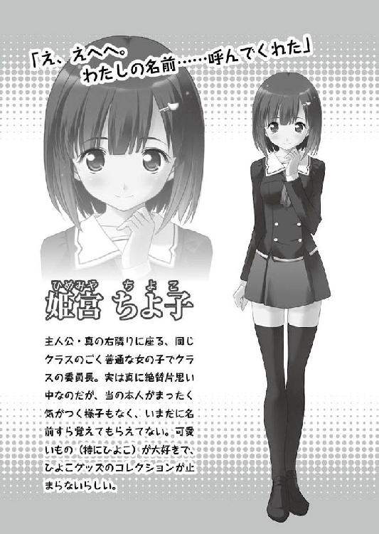

| 桜ノ杜ぶんこ ひよこストライク！ 泡沫の夢 | |
| 小林公示 | |
| (2012) | |
桜ノ杜ぶんこ
ひよこストライク！
-泡沫の夢-
小林公示／佐藤ヨシヒサ

プロローグ 夏の桜
まだ人影もない早朝。多くの人を憂鬱な気持ちにさせていた梅雨の重い雲も今は去り、本格的な夏へと確実に移り変わりつつある、そんな季節の空の下。
まだ人の姿もまったく見られないような早朝の、とある学園の校庭。
その中ほどで、長い歴史を感じさせる古い桜の大木が無数の枝葉を高々と空へと掲げながら、太い根を深く地中へと下ろしていた。
そして巫女装束を纏ったひとりの小柄な女の子が金色の長い髪を朝の清々しい風に揺らせながら、その古い大木の傷だらけの幹へと身を軽く預けて惚けている。
「ふむ......」
まるで触診している医者のように、何か探っているようなため息にも似た小声を漏らすと、ゆっくりと伏せていた瞳を開く。
目前には、淡いピンク色の花弁がひとつ、ゆらゆらと風に弄ばれるように舞っていた。
「未練がましい、かしらね？」
彼女の周囲に、その問いへと答えられそうな人の姿はない。
強いていえば、そうつぶやく彼女の足元には一羽のひよこが寄り添っていた。まるでその問いを理解しているかのように、ひよこは少し怯えた様子で沈黙を守っている。
そう。彼女は明らかに苛立っていた。
「はぁ」と内側の圧力を外へと逃がすように繰り返しため息を落とすと、うんざりとした表情のまま遠い眼差しで頭上を仰ぎ見る。
彩度の高い鮮やかな夏特有の空と、その朝の日差しに照らし出される満開の桜。それは世界中探してもここでしか見られそうにない奇妙な光景だった。
「まったく......どうしようもないわねぇ」
どこかあきらめにも似た、突き放したような独り言が続く。
そうやって彼女は気を紛らわせ、長い時間をこうして待ち続けていたのだ。
どうあっても勝てそうにないギャンブルに全財産を賭けた者が、その結果を延々と待たされているようなやりきれない気分。
いっそ、駄目なら駄目と知りたい。
ごくわずかな可能性という名の檻に閉じ込められて、ありもしない希望にすがりつくような惨めな自分を楽にさせたい──大げさにいえば、そんな心境だった。
「もう......」
巫女の服装を纏ったその彼女は意を決したのかゆっくりと寄りかかっていた大木から身を起こし、手の甲で長い髪をかき上げ、憂いを秘めた大きな瞳を細める。
そしてゆっくりと、微かな声で呟く。
「......いつになったら、目が覚めるのかしら？」
第１章 緩慢に続いている物語
「ぃちゃん......おにいちゃん......」
ゆさゆさゆさゆさ。
決して不快にはならないぐらいの心地よい振動。
スッと音もなく潮が引くように、夢の世界から優しく呼び戻された。
「おにいちゃん......」
再び耳元に届く、小さなささやき。
「......起きてない？」
ちょっと不思議な質問だと思った。
悔しいが、それで意識がハッキリしてくる。
「起きてない、よね？」
目を閉じたまま、返答に困る俺だった。
「んしょ......」
「起きてるっ！ 起きてるから！」
俺へと無造作に掛けてある薄手のブランケットを開き、その中に潜り込もうとした妹の行動に、とっさにそんな声を出して飛び起きてしまった。
「......」
「おはようっ」
ヤケクソ気味に朝の挨拶をしてみる。
結果、見事に妹の術中にはまってしまったわけだ。
「......ん」
ややしばらくして、妹も方も小さくうなずいた。
こうして今日もごく普通の学生である俺──神楽鳥真の朝が、いつものように始まる。
ベッド代わりにしているソファから身を起こし、黒く短い自分の髪をガリガリと掻くと窓から覗く朝の青空を、若干の憂鬱な気分で見上げた。
「ふぁ......」
「まだ、眠たい......？」
あくびを繰り返すだらしない兄を見かねてか、朝食であるベーコンエッグが置かれている木製のテーブル越しに、じっと俺の顔を観察している妹の雛。
ひらひらのレースがいっぱいについた真っ黒な服装。色白なきめの細かい肌や流れるような銀色の髪だけでなく、普段から表情をあまり表に出さないことも相まって、まるで高級な人形にでも見つめられているような、そんな錯覚を感じる。
兄の俺がいうのも変な話かもしれないが、雛はそれぐらいに見た目が整いすぎている。
対して、さほど高いとも言えないほどほどな背丈と、特に筋肉質でもないごくごく普通な体型。強いて言えば一見すると不良と誤解されそうな鋭い目つきぐらいしか特筆するものもないこの容姿の兄と、同じ血が流れているとは到底思えなかった。
兄妹として似ているものを挙げるとするなら、基本的に無表情で冷めているような印象を与える仕草や、困るとすぐに黙ってやり過ごそうとする寡黙な性格など、容姿以外の部分ばかり。
だからこうして視線がぶつかっても、雑誌に載っているモデルの写真でも眺めているように視線を外そうという気持ちにはならない。
「......ん」
しばらくにらめっこしていると、珍しく雛の方が負けて視線を横へと逃がした。
「昨日、ちょっと蒸し暑かったからいまいち寝つけなくてな」
それが今、眠たい理由だった。
ぱたぱたと襟元のシャツを扇いで、汗ばみそうな首元に風を入れる。
「ん......もう、夏だもんね」
「夏、か」
七月という暦の数字もさることながら、それ以上にこの気温で夏の到来を実感する。
それは、つい先日まで梅雨が続いていた時には得られなかった強烈な感覚。
人ってやつはいくら理屈ではわかっていても、その身をもって実感しない限りは本当の意味での理解はできなかったりするが、これはその典型的な例のひとつだと思う。
「今日も暑くなるかな」
そういいながら、胸元のボタンをもうひとつ外した。
「......ん......」
「？ 雛、どうした？」
さっきから、雛が視線を横に逃がしたまま、こちらを見ない。
「んーん」
ふるふると小さく首を横に振るが、やはり視線は壁を向いたまま。
よくわからないが気にしても仕方ない。話を進めた。
「雛も薄着にしたらどうだ？」
「？」
「その格好じゃ、これから暑いだろ」
雛の、いわゆるゴスロリと呼ばれるその独特な服装を改めて眺めてみた。
こんな季節でもボタンのひとつも外さない、隙を見せない雛。
そこらへんが益々雛への人形的なイメージを自分の中で強めさせていた。
「んーん......この服しか、ないから」
春先に、カバンひとつ携えて実家から俺ひとりが住むこのアパートへと転がり込んできた当時の雛のことをふと思い出す。......あれはもう四ヶ月以上も前になるのか。
まさかこんなに長い期間、妹との同居が続くとは夢にも思わなかった。
「そっか」
俺はそんな追想をしながら、ぼんやりと自分の部屋を改めて見回していた。
地元である北海道の環境にうんざりしていた俺が抜け出したい一心で関東にある学園へと入学し、手に入れた自分ひとりだけの小さな城が、このアパートの一室だった。
今、こうして雛と食卓を囲うリビングには台所があり、冷蔵庫があり、テレビがある。手前の扉は洗面所で、奥の扉は雛の部屋として与えている寝室に繋がる。
ふたりで暮らすにはさほど困らない広さだが、いかんせん元々ひとり暮らしを前提にした部屋の家具やレイアウトなので、致命的に足りないものもいくつか存在する。
その最たるもののひとつが、ベッドだ。
女の子を床に寝かせるわけにもいかないので、俺はもうずっとリビングのソファの上で雑魚寝のようにして日々の睡眠をとっている。
まあしかし、その代わりに雛が家事の類をほとんど全てこなしてくれるのだし、実際のところ俺はこれといって何も今の状況に不満は無かった。
だが......雛の将来を考えると、いつまでもこの暮らしを続ける訳にもいかない。
でも雛は俺との永続的な同居を望んでいるみたいで、ああ、朝っぱらからこんな込み入った問題を考えるのは止めよう。思考を無理やりに停止させて、会話に戻る。
「じゃあ、せめて誰もいない時は脱いだらどうだ？」
「ん......」
ちいさくうなずくと、雛はさっそく胸元のボタンを──
「まてまてまてまてまて」
「......？」
『なにか？』と声が聞こえそうな瞳でこちらをじっと見つめる雛。
「今は、『誰もいない時』か？」
「ん......今、誰もいないよ......？」
「俺がいるだろっ!?」
「......」
どうしてそこで沈黙するっ。
もしかして、俺は人間としてカウントしてくれてないんだろうか？
俺が雛のこと人形のようだと感じているように、雛も俺のことを人間以外の『なにか』と感じているのだろうか......？
それが近所のポメラニアンや、駅前の銅像よりマシなモノであることを祈るばかりだ。
「......ずるい」
「は？」
「おにいちゃんばっかり......ずるい」
「ごめん。意味がわからない」
「......」
雛はそのまま黙ってうつむいてしまった。
もしかしたら、ちょっと怒っているかもしれない。
......難しい。ここらへんは、すごく難しい。
実の兄妹としてもう長いこと一緒の時を過ごしているというのに、未だに雛の心がほとんど理解できないでいる俺だった。
「......それじゃ、行ってくるかな」
「え、あ......」
気まずい空気に耐え切れず、俺は立ち上がった。
「いってきます」
「ん......いってらっしゃい」
最後に雛お手製の弁当を受け取るといつものように別れの挨拶を残して玄関を出た。
──キィィ、バタン......。
背後でアパートのドアが閉まる音が聞こえた瞬間。
「う......」
途端に包まれる、夏の外気。
まだむせ返るほどのものではないが、朝からこの調子では昼の気温が思いやられる。
寒いのが苦手で北の厳しい大地から遥々この町──桜坂町まで引っ越してきた俺だが、だからといってこの暑さが大好きというわけでもない。
『まだマシ』というそれだけの話だ。
「......さっさと向かおうか」
のんびり進んで気温が低くなるわけもないのだから、俺は少しばかり駆け足でいつもの場所へと歩を進めることにした。
「──今日も、お借りします」
学園の裏山。
その中腹にある寂れた小さな神社の境内に備え付けられている錆だらけのポストを開いて、中にしまわれていた鍵を手に取った。
学園のとある施設の鍵で、この氷上河神社の神主が管理し、俺が日々借りている。
不本意だが、許可を事前に頂いているのだし、管理者本人が不在である以上はこうするほかない。
「黒岩さん......元気にしてるかな」
虚弱体質な風にいつも咳をしていたイメージから、ふとそんな心配をしてみた。
今、旅をしているらしい神主である黒岩のぞみさん。
ぼさぼさ頭に和服姿で、朝はいつも竹箒片手にいつもここらへんを掃いてまわっていた。
明るく飄々としていつも何を考えているかわからないけど、でも、根底にある優しさは確かで俺を弟のように気に掛けてくれた人。
ありがたいことに、俺が描く絵の熱烈なファンでもある。
「それじゃ、行ってきます」
いつもほがらかに笑っていたあの笑顔を見る気持ちで俺は軽く会釈を残すと、石造りの階段をゆっくりと降りはじめる。
ふと、階段の途中で見慣れた小柄な人影が待ち構えていたことに気がついた。
無視しようにも、その金色の長い髪は否応なしに存在感を得て視界を占拠する。
「おはよう、シン。あいからわずそんなところだけ妙に律儀よねぇ〜」
自らのウエストを片手に抱え、頬に残る手を添えて呆れるように流し目でこちらを見る彼女──ぷーさん。
何も好き好んでこんなふざけた愛称を、心の中とはいえ呟いているわけではない。
彼女自身が自らをそう呼ぶのだ。それ以外の一切の情報を開示しない以上、不本意だがそう呼ぶほかない。
まあつまり『とっても変わっている人』ってことだ。
ちなみに先ほどの神社の神主、黒岩さんとは共通の知り合いでもある。
「あらぁ、ご挨拶ねえ？ 返事もしてくれないのぉ？」
ぎゅっと黒い自らの制服を抱きしめながら、少し腰をくねらせて軽く拗ねてみせる。
その少しのんびりとした口調と相まって、小柄な体格なのにまるで自分より年長であるかのような不思議な雰囲気が彼女にはあった。
「......おはよう」
「うふっ、お・は・よ」
俺が屈したことがよほど嬉しいのか、頬に添えられていた手の甲でそのまま金色の髪をかき上げ、赤い瞳を細めて微笑んでいた。
仕草ひとつひとつが、どこか『妖艶』という言葉を連想させる。
こんなにも背は低く、胸もぺったんだというのに。
「──は？」
「ん？」
「今、ぷーさんの値踏みしたでしょ？ 失礼〜なこと考えたでしょ？」
「気のせいだろ」
......いかんいかん。視線で読み取られてしまったか。
慌てて視線を下ろすと、再び階段を下り始めた。
「ふん......思うことがあるなら、ハッキリ言いなさいな」
「今日は妙に絡んでくるな？」
「別にぃ〜」
「......？」
いつも余裕たっぷりに上から目線の発言を繰り返す彼女にしては、ちょっと珍しい。
特に根拠もないが──
「怒ってるのか？」
「あら、そう見えるかしらぁ？」
ふと、そう直感したのだから仕方ない。
「お前こそ思うことがあるなら、ハッキリ言えばいいだろ？」
「ぷーさん」
「っ!?」
この感覚、いつぶりだろう。
「『お前』じゃないわ......私の名前は、ぷーさん」
まるで空気が一瞬で鉛へと変化したような、明確に伝わってくる独特の威圧感。
刺さるような赤い瞳の、視線の鋭さ。
今度こそ間違いなく彼女が何かに苛立ちを覚えていることを理解した。
「俺、何かしたのか？」
「......いいえ」
「おいおい、八つ当たりかよ!?」
「いいえ、それも違うわぁ」
「は？」
ふんっ......と彼女がそのままそっぽを向くと、タン、タン、とリズム良く石製の階段を一段飛ばしで合計八段ほど下りた。
「何もしてない......そのことよ」
ちらりと最後に視線をこちらに向けて振り返ると、今度こそ彼女は階段をそのまま一気に駆け下りていった。
「何だよ、いったい......」
最後に振り返ってこちらを向いたその視線が、まるで拗ねた子供みたいだったからか、俺は追いかけて問い質す気持ちにはどうしてもなれなかった。
「おはよー」
「おっはよ〜！」
校門の前で佇む俺の左右から、そんな軽快な挨拶が飛び交っていた。
俺は先ほどの彼女──ぷーさんとの問答が影響してか、はたまたこの気温からか、どうにも教室に入っていくモチベーションに持っていけず、桜の木を眺めていた。
「これ、いつまで咲いているんだろうな」
世にも珍しい、散らない桜。
正確には半年ほどもの期間、散らずに咲き続ける桜ということらしい。
去年は確か、夏の終わりまで咲いていた。それが散る頃、地方のテレビ局から学園長が取材を受けているのを見かけた記憶がある。
ちょうどこの町の中心で咲いていることもあって、シンボル的な存在になっている。
『桜紡糸学園』という名前の由来からして、この桜によるものなのだろう。それぐらいは歴史がある桜の木だということだ。
「しーんっ、真、真っ！」
「ん？」
まるで魂が吸い取られていたように、呆然と桜を眺めていた俺を呼び戻す声。
「ふはぁ！ 間に合った......！ おはよう、真っ」
「ああ、おはよう。舞原」
俺の唯一といって差し支えのない友人の彼──舞原獅士王は、俺の目前で苦しそうに前屈みになると、背中で大きく呼吸を繰り返していた。
「どうした？」
「へへ、姉ちゃんとちょっと喧嘩してさ......ふと気がついたらもうこんな時間」
「その『姉ちゃん』は？」
あたりを見回すが、あのグラマラスな姿が見当たらない。
「ふぅ......ひとりで先に出たから、もうとっくに校舎の中じゃない？」
「お前、先に出たとはいえ、女の子に駆け足で負けたのかよ」
「姉ちゃんの足腰はすごいんだよっ!?」
『それは単にお前の筋力の問題では？』と内心思ったが、さすがに口には出さなかった。
無駄な肉がないすらりと伸びた手足に、俺の肩ぐらいまでの低い背丈。その華奢な胴体も手伝ってまるで女の子みたいな体型や風貌は、本人も少し気にしている様子だからな。
顔立ちも整って瞳も大きいから、女装でもしたら本気で見間違えそうな予感がする。
「それより真こそ、どうしたのさ」
「ん？ ああ、桜を眺めていた」
「うわっ......ジジ臭っ！」
「ほっとけ」
軽く憎まれ口を叩き合うのも構わないが、今日は少しばかり気分が乗らないのでそんな風に軽く流す。
「ただ何となく──」
キーンコーンカーンコーン......。
言葉を遮るようにその瞬間、校舎から聞きなれた鐘の音が届いてきた。
「うわっ、急ごう！ 真っ」
「あ、ああ......」
舞原に引っ張られるように昇降口へと向かう。
正直このままサボろうかと考えていた俺としては、心中複雑だった。
歩を止め、もう一度だけ振り返り、桜を見上げる。
「ただ何となく......他人のように思えなくてさ」
独り言を零すと、今度こそ昇降口へと入った。
「セーフッ！」
舞原がそう叫んで一足先に教室に飛び込む。どうやら俺で最後らしい。続いて入るとすでにクラスメイトの姿で教室内は埋め尽くされ、朝の賑わいを溢れさせていた。
「しおちゃん、おはよ〜。なかなか来ないから心配しちゃったよぅ〜」
ぱたぱたとやや鈍い足取りで駆け寄るひとりの女の子が、そう舞原に話しかける。
「おはよう、ちょこちゃん。へへへっ、ヒーローは最後に登場するのさ。な、真？」
「そこで俺に振るな」
追いついた俺が教室に入るタイミングを見計らってか、そんな風に話をパスしてくる。
「か、かかっ、かぐりゃどりくんっ、も、お、おはようっ......！」
「ああ、おはよう......」
舞原との対応の違いに、内心軽く凹む俺。現実はとても厳しい。
この『ちょこ』と呼ばれた彼女は俺の席の隣に座るクラスメイトだ。
名前は姫宮──
............。
ちよ子！ 姫宮ちよ子だ！ うっかり忘れたとか、そんなことはない。断じて。
過去に、俺へと弁当を分けてくれたりと世話をしてくれた良いヤツだ。
一時期はちょくちょく会話もしていたが、最近は再び疎遠気味で、これが久しぶりの会話な気がする。
しかしそれにしても──
「あ、あぅあぅ......そ、そのっ、えとっ」
綺麗に手入れされている印象のボブカットの髪が、ゆらゆら揺れている。
ガクガクと小刻みに身体を震わせて、瞳は大きく見開いていて、『緊張してます』と絵に描いたような態度を俺に見せていた。
胸や腰の肉付きもよく、平均的な女子の体型と比較すればグラマラスなはずなのだが、不思議なほどいつ見ても小動物的な何かを感じる。深い茶色の髪のイメージから、強いて言えばリスとかそんな感じだろうか？
その怯えた様子に、ある意味で『姫宮だなぁ』と安心しつつも少し憂鬱になる。
「まだ、そんなに恐いか？」
「あ、う、ううんっ、ううんっ！」
ぶんぶんと勢いよく両手をワイパーみたいに振り回して慌てて全力で否定してくれた。ただそうなると、疑問だけが残ってしまうわけだが......。
「そのっ、ただ、単に、ですねっ......！」
「単に？」
「か、神楽鳥くんのことっ......ですねっ......！」
「......？」
「あ、あううぅぅっっ......無理だよぅ〜......」
ぐすん、と半べそになりながら顔を真っ赤にさせてうつむいてしまう姫宮。やっぱり結局は、不本意ながら恐がらせてしまっているだけな気がするのだが......。
「あ。そうそう！ そういえばさ、真、知ってるかい？」
いたたまれない空気でも感じたのか、舞原がそういって会話に割って入ってきた。
「何が？」
「明日の晩、神社でお祭りなんだよね！」
「......へぇ。出店とかあるのか？」
去年からこの町に住みだした俺としては、確かに初耳の情報だった。
「うんうん。あと花火なんかも上がってさ。なかなかすごいんだぜ？」
「ふーん」
「だからさ」
「ん？」
舞原は一度言葉を切って俺と姫宮を交互に見比べた。
「ふたりでいってきたらどうだい？」
そしてバチコーン！と音が鳴りそうなウィンクをひとつ。
「......」
おいおい。それはどういう意図だ？
こうして教室で朝の挨拶もままならない相手とふたりきりで祭りとか、軽く拷問だろう。
「きゃあふぁああっっ、な、なな、なにいってるのしおちゃんんんっっ!!」
案の定、姫宮から『とんでもない！』といわんばかりの勢いで全否定が入った。
「ちょ、ちょこちゃぁん〜......」
「はうあぅ〜......」
仲の良いふたりが似たようなポーズで互いを見合っている。
「よーし、ホームルーム始めるぞーっ。全員席に着け」
「お」
教室の扉が開け放たれたと同時に担任である灰羽先生のそんな声が聞こえて、俺たちは無言のまま自分たちの席へと向かった。
無論、隣の席の姫宮とは並んで向かうことになる。
「えへへ......ご、ごめんね......？」
なぜ謝るのかさっぱり理解できなかったが、申し訳なさそうに小さくささやく彼女の困った顔だけはやけに印象的だった。
「──であるからして、ここの解は......」
授業中。
まるで独り言のようにマイペースで説明する教師の声を聞き流しながら、教室から見える散らない桜と青空をぼんやりと眺めていた。
空調の利き始めた教室の空気はやたらとすごし易く、じんわりと眠気が押し寄せてくる。
（昨日の夜は、寝付けなかったからなぁ......）
ふぁ......と軽くあくびが漏れる。もはや居眠りまで秒読み状態だった。
黒板を向いたまま背を見せ続けている教師を視界の端で確認してから、木製の机に突っ伏して本格的に寝る準備を始める。
──ガサ、ガサ。
「......!?」
声を出しそうになりながら倒した上半身を起こし、一気に意識を覚醒させる。
（今、何か......机の中で気配が......!?）
──ゴソゴソッ......。
机に聞き耳を立ててみると、やはり中から微かな物音が届いてきた。
（おいおい......）
黒光りする某Ｇとかそういうのは勘弁してほしい。
身を強張らせながら屈み、同時にゆっくりと椅子を後ろに傾けて、机の中を恐々と覗いて確認してみると──
「ぴよ」
「......」
机の中に佇む一羽のひよこと、目が合ってしまった。
「おい......お前、何やってる......？」
「は、はうっ!?」
一瞬ひよこがしゃべったかと勘違いしそうになった。
視線を上げてみると、隣の席の姫宮がこちらへと緊張の面持ちを見せていた。どうやら俺の言葉を、自分に向けられたのだと誤って受け取ってしまったらしい。
「あ、いや......独り言」
「う、うんっ......」
互いに教師に気づかれないよう、最低限のささやき声で会話した。
......しかし。
「ぴよ？」
机の中のひよこに再び視線を送りながら、軽く頭を抱えた。
「どうしてお前、ここにいる......」
「ぴ〜よっ」
コイツの名前は『まんじゅう』。このトレードマークのアホっぽいクセ毛を見る限り、間違いない。
なんかこう......いろいろ危うい名前な気もするが、俺が命名したわけじゃないから仕方ない。文句なら名付け親に言ってくれ。
「ぴよぴよっ」
まんじゅうが甘えるように手のひらに自らおさまり、そしてぴょんと飛び乗って腕を登ってくる。
「お、おい......、──はっ!?」
時すでに遅し。
「ふ、ふあああああっっっ!! そ、それどうしたのおおおっっ!?」
ガタンッ。
豪快に座っていた椅子を倒しながら、おそらくそれを見たであろうひよこマニアな姫宮が突然叫んだ。......普通そこまで驚くか？ 俺は思わず頭を抱えてしまう。
もちろん今は授業中。教室にいるすべての人間が驚きの視線を姫宮へと送っていた。
「あー......どうした？ 姫宮？」
初老に差し掛かっている年季の入った教師はさすがに落ち着いた様子で問い質していた。
「えっ、あ、そのっ......え、えーと......ごめんな、さい......」
姫宮が慌てて取り繕う間に、腕に登ってきたひよこを胸のポケットに隠す俺。
「先生、すみませーん。俺が寝ぼけて姫宮を驚かせてしまったみたいです」
「え？ えっ？」
いいから話をあわせろ。
「はぁ......わかった。授業を続けるぞ」
「あ、はい」
寝ぼけて姫宮の手を握ったとかそれぐらいの言い訳を考えていたのだが、正直先生の方も面倒だったみたいで特に咎められることもなく、あっという間に事態は収束した。
「あ、ありがとう......」
こちらが驚かせたのだから、別に礼を言われるいわれはないのだが。
......しかし失敗した。
「────っっっ......!!」
熱い熱い視線が隣から注がれる。
姫宮のとなりで、ひよこはマズイ。完全に迂闊だった。
それは飢えている人のとなりで焼肉パーティを開催するよりよっぽど迂闊な行為だ。
「か、かかか、神楽鳥くんっ、それぇっ......!?」
「落ち着け姫宮......直後に話し掛けるな」
「は、はひっ......」
さすがにジロリ、と教卓から鋭い視線を感じて慌てて俺たちは口をつぐむ。
「ぴよ？」
（顔出すな、ばかっ）
指先で胸のポケットに押し込んでいると、隣の席から紙切れがスッと渡ってきた。
『あの......今、可愛い可愛いひよこがいませんでしたかっ......？』
どうしたものか。一瞬、返答に困る。
『それは幻覚だ。気にするな』
手紙の空白部分に殴り書きをして、すぐに返した。
少し待ってからちらりと隣を見ると、こちらを見ていた姫宮とバチリと視線がぶつかる。
何かいいたげな姫宮の視線だったが、すぐに視線を外してうつむいてくれた。
（やれやれ......）
なんとか事態が完全に収束してくれたようで、思わずため息が漏れる。
幸いにも胸のポケットの中が気に入ってくれた様子のまんじゅうは、機嫌よさそうに大人しくしてくれていた。
（持ち主に返さなきゃな）
名付け親でもあるアイツのことを考え、ふと再び視線を窓の外へと向けると──
「ぶっっ!?」
そこには、案の定、その持ち主本人がいた。
「まんじゅうを返しなさいよお！」
窓ガラスに張り付いて、ジト目でこちらを睨みながら大声で叫んでいる小柄な女の子。
腰まで伸びているピンクの長い髪に、ピンクの制服。ひらひらと泳ぐ大きな腰のリボン。首輪。そして触覚みたいな二本のクセっ毛などのビジュアルが、破天荒なその性格同様に強烈な個性を主張しているようだった。
まあ実はそれ以上の、この世のものとは思えないぐらいスペシャルな個性も彼女には備わっているのだが、今は残念ながら見て取れないのでその説明を省略しておく。
とりあえずそんな彼女──鏡ウタカタは、教室の窓の外にいた。
正確には、窓の外の桜の枝に乗り、両手を窓ガラスに押し当てて中を伺っていた。
もう俺にとっては日常の風景だから、必要以上大げさに驚きはしないさ。
......しないけども、やっぱり人として一瞬たじろぐ。
「ちょっとーっ！ 窓、開けなさいよねっ。入れないじゃないのよ！」
（もう夏だからな、そりゃ開けないさ）
数ヶ月前の春。コイツ──ウタカタと初めて出会ったあの時を思い出す。
その日も、こんな授業中。
突然窓から飛び込んできたウタカタは、こともあろうか授業中の教卓に登り、その場でピンク色のあの制服を脱ぎだすという超ド級のストリップ変態プレイをやって退けた。
「ちょっとー、無視するなぁ、真のばかー！」
それはご覧のとおり、どんなに騒いでも窓ガラスをバンバン叩いても、誰ひとり気がつかないこの状況が全てを説明している。
詳しい理由は（ウタカタ本人も含めて）知らないが、彼女は誰からも『認識』されない。
俺と、このひよこであるまんじゅうを除いて。
「こおおおらあああぁぁっ!!」
「はぁ......」
堪り兼ねた俺はノートを一枚破り、そこに大きな文字を書く。
『昼休み、屋上で！』
それを窓に向けてかざす。
「うっ......わかったわよぅ」
いかにも渋々という感じでウタカタは窓ガラスから離れ、そのまま桜の太い枝に座ってこちらを眺めることにしたようだった。
視線がややうるさいが、そこは我慢してやろう。
......コイツも暇なんだよな。そこは理解しているつもりだ。
「ぴよ」
（だから引っ込めって）
「はうっ!?」
微かな鳴き声を耳にして、隣の姫宮が大げさに反応してる。
そう。俺の日常的な授業風景は、やや特殊だった。
キーンコーンカーンコーン......。
「よし」
昼休みを知らせる鐘の音と同時に、俺は席を立つ。
ふと見ると、すでにウタカタは桜の枝から姿を消していた。
「あ、あのっ、か、神楽鳥くん、そのっ、お昼──」
「悪い、姫宮。急ぎの用事あるから！」
「はうっ！」
これ以上ウタカタを待たせると爆発しそうな予感がして、姫宮の話を一方的に断ち切ると教室を出て屋上を目指した。
「遅いっ！」
屋上へと続く階段を登りきり、重い鉄製の扉を開けると予想どおりにウタカタが目の前で仁王立ちして待ち構えていた。
「よっ、待たせたな」
「まんじゅう、返しなさいよねっ」
バッと手に持っていたひよこを奪い取ると、そのまま自分の頭の上に乗せる。
「ぴよ」
まんじゅうとしてもまんざら悪くないロケーションらしい。ご満悦の様子だ。
「もう、勝手にどっかいっちゃったらダメよ？」
「ぴーよっ」
それで果たして会話は成立しているんだろうか？
そんな心配をよそに、コロッと機嫌を良くしたウタカタが話し掛けてくる。
「それ、お昼ごはん？」
俺の片手に持っていた四角い物体を指差して質問した。
「ああ。ついでにここで食べようかなってさ。お前もこれ食べるか？」
「ううん、あたしは遠慮しておくわ。ちゃーんと自分の分ぐらいは自分で用意してるもん」
そういってスカートのポケットからおにぎりを誇らしげに取り出す。
ほう。大好物のいくらの具とは今日は良いモノをゲットしたな、ウタカタ。
だから断ってでも自慢したいわけか。
......まあ、賞味期限は切れているんだろうけども。
「そうか？ まあ足りなかったら言ってくれよ」
近くの鉄製の配管に腰掛けると膝の上で弁当を包むナプキンを広げた。
「うん。あはっ......ありがと！」
そう素直に笑ってウタカタも俺のとなりに座る。
「うはあっ、今日はまた一段とすごいね〜！ そりゃあたし、食べられないわ〜」
「うぐ......」
俺の弁当の中身を覗き見て、ウタカタは感嘆の声を上げ、俺は黙り込む。
色とりどりの弁当の中身。ウインナーもニンジンも、白米の上に掛けられた鮭のふりかけも、すべてハートマークで統一されていた。
「妹さんに愛されているわねぇ〜」
うりうりと肘でつついて冷やかすウタカタ。
まあ少なくとも悪い気はしないが、これじゃ新婚の愛妻弁当みたいで少し気恥ずかしい。
「いただきます」
......こういうのも、妹である雛なりのコミュニケーションのとり方なのだろうか？
普段が寡黙であまり自分の考えを表に出さないから、余計に戸惑ってしまうな。
「美味い」
とりあえず妹に感謝しつつ、食事を始めた。
ここ、桜紡糸学園の屋上は漫画によく出てくるような開放的な空間ではない。
後に増設したポンプやら物置やらが雑然と敷地を占めていて、ベンチのひとつもありはしない。
バチンバチンと何かが機械的に切り替わるような騒音も聞こえ、あまり落ち着ける雰囲気でもないので、落ち着いた開放的な空間を求めている生徒はほぼすべて中庭へと向かう。
結果、孤独を好む傾向にある俺にとってここは好都合だったりするのだ。
「ぷは〜、ごちそうさま！」
大げさにお腹を押さえて満足気な笑顔を見せるウタカタ。
......そうだな。コイツとゆっくり話す上でも、ここは都合がいい。
「ふっふん、ふんふん♪」
よっぽど上機嫌なのだろう。隙だらけの表情で鼻歌なんか漏らしている。
いや、漏れているのは鼻歌だけじゃないのだが......どうしたものか。
とりあえず気にせず会話を続けることにした。
「これから先は気をつけろよ」
「うん？ 何を？」
「暑くなるから、生ものは漁ってくるなよな？」
「うっ......そ、そうね......」
「食中毒になってもお前は──」
......と言い掛けて、話を中止する。
「うん......気をつける」
それだけでじゅうぶんに伝わったらしい。大人しくウタカタはうなずいて見せた。
そう、ウタカタは他人から認識されない。
でも実体のない幽霊のように触れられないわけじゃない。
物にぶつかりもするし、食事もする。
理由も原因もよくわからないままだが、問題は極めてシンプル。
とりあえず『この世界の人間』ではないらしいウタカタは、この世界に迷い込んでから先、単に俺以外の人間から一切認識されないだけなのだ。
しかし、つまりそれは病院にすら駆け込めない厳しい現実があることも意味している。
下手すれば軽い食中毒でも、そのまま死にかねない。
そもそもこの世界の薬がこんなウタカタに通用するかすら、怪しかったりもする。
「困ったら、いつでも相談してくれ」
「あはは。その......いつもありがと」
照れ隠しのように笑うカタカタ。
彼女と知り合ってから早二ヶ月以上が経過している。
ここ最近は先ほどの弁当のように、自分だけでどうにかしようとあまり俺に頼らないことが多くなったような気がする。
彼女にとっての唯一の友達として、俺は嬉しいような、でも少し寂しいような、ちょっと不思議な心境だった。
「──あ、予鈴」
ウタカタが微かに耳に届くその音に、ピクンと耳を立てて反応した。
「もう終わりか」
俺はパンパンと軽くズボンのホコリを払って立ち上がる。
「──っていうか、ウタカタ」
「うん？ 何よ？」
「油断しすぎだろう。耳、出てるぞ？」
「ふぎゃっ!?」
慌てて両手で頭を押さえて、そこから突き出ている『何か』を隠すウタカタ。
そう、文字どおりまるで獣みたいに耳が立っていたのだ。
「気のせいよっ!!」
「しっぽも出ているが？」
「ぎゃーっ!!」
両手を頭に乗せたまましゃがみこんで、なんとか隠そうと抵抗を続ける。
彼女が以前「あたしはこの世界の人間じゃない」と自分を説明していたが、それを一番に証明している事象がこの耳としっぽかもしれない。
こんなの目の前に出されては、それで信じないわけにもいかない。
「いやああぁ」
まるで恥部でもさらけ出したかのような騒ぎだ。
いつもこんな感じで、全力で隠そうとするがその心境はいまいち理解できない。
俺たちこっちの世界の人間には無いからだろうか？
そう考えると、案外繊細な心の部分もウタカタにはあるってことだろう。
......いつか、「案外それって可愛いぜ？」なんて軽くフォローしてあげるべきだろうか？
「これは夢よ！ 白昼夢よーっ」
よくわからないウタカタの言い訳を背にして、笑いながら俺は教室へと戻った。
そうして今日もこんな変わった日常の中、授業が終了する。
放課後、ホームルームが終わって机からカバンを取り出したところで不意に呼ばれた。
「──神楽鳥」
「あ、はい」
そう俺を呼ぶのは担任である灰羽千鶴先生ぐらいしかいない。振り返って確認する前に、少しばかり姿勢を正した。
「ちょっと話がある。職員室までついて来い」
振り返ると案の定、鋭い眼光を際立たせる眼鏡に、長い真っ直ぐな髪。そして生真面目そうな性格とはちょっと裏腹な、肩や腹部の肌が伺える露出の高い服装の年上の女性──灰羽先生の威厳のある姿がそこにあった。
「え......はい」
一瞬この場で話してほしいとも思ったが、他人に聞かれたくない内容......雛のことかもしれないと考えが辿り、素直にそう返事をしておく。
「え、なになに？ 真、どうしたの？」
ただならぬ雰囲気でも勝手に察したのか、舞原が慌てて駆け寄った。
「さあ」
肩を軽く狭めて投げやりな返事をしておく。実際、思い当たる節なんかは──
「安心しろ。ただの相談事だ」
──その灰羽先生の苦笑いで、ひとつ、思い浮かんでしまう。
「生きて帰ってくるんだぞ〜！」
とんでもない見送りをしてくれる舞原だった。
「失礼します」
灰羽先生の後ろをついて、職員室のドアをくぐる俺。
ヘビースモーカーが多いからか禁煙になっていない職員室は、教室ではありえないタバコの臭いがどことなく漂っていた。
そういや職員室なんて初めて入るな......。
先生は先に自分の席に腰掛け、軽く足を組みながら椅子を回して振り返る。
「神楽鳥、そこに掛けてくれ」
「あ、はい」
どうやら俺を立たせたまま話すつもりはないらしい。
用意された灰羽先生の隣の席の椅子へと、勧められるままに腰掛けた。
「その......進路、ですか」
「ふむ、話が早いな。忘れていたわけではないようなので助かるよ」
実はほんの数分前まで完全に忘れていたわけだが、それをバカ正直に話すつもりはない。
「んで、どうだ？」
「あ、はい............」
そこで会話が自然と途切れてしまう。
「ここで話しづらいようであれば、改めて指導室を借りるが？」
「いえ、大丈夫です」
そういいながらも、ガクッとうな垂れてしまう。そしてそのままの勢いで、深々と頭を下げて全面降伏することにした。
「......すみません。まだ決められずにいます」
予想していたのか、「はぁ」と露骨なため息は聞こえてくるものの、問い質すような厳しい言葉はなかった。
「これは前にも言ったが、私としては『とりあえず』というような決め方が好きではない。人生というのはそんな軽々しく扱うものではないからな」
『だから決めずに迷っているお前を、必要以上に責めはしないぞ？』という先生の言葉の意図は受け取ることができた。
「──しかし、だ」
「はい」
「いい加減そろそろ決めなければな。二年で進路志望を出していないのは、もはや神楽鳥。お前だけだぞ？」
「......はい」
「今朝の職員会議でとうとう名指しがあった。これ以上は私でも庇い切れんかもしれん」
「すみません」
別にこのままやり過ごそうとは思っていないが、しかしそれ以外の言葉が出てこない。灰羽先生は困ったように眼鏡を外して視線を手元に落とす。
「お前が世話をしている、妹さんのことが関係しているのか......？」
もちろんそれは、俺の部屋から一歩も外に出ようとしない雛のことを言っている。
ナイーブな問題に触れることを意識してくれているのか、教室ではまず聞かないような優しい声が届く。先生から母性的なものを感じるのはこれが初めてだった。
「いえ、関係ないです。世話されているのは、俺の方です」
「......そうか」
それ以上は問わないでくれる先生。手元の眼鏡をマイクロファイバーのタオルで拭きながら、少し微笑んでいた。
「なあ、神楽鳥。世の中ってのはしがらみや事情など、一筋縄では決められないことばかりだが......それはひとまず置いておくとして──」
拭き終えた眼鏡を掛け直し、真っ直ぐに俺を見据える。
「お前は、何がやりたい？ この先、どうしたい？」
「......」
「まあ即答できるぐらいならこんなにも悩まないのだろうがな」
先生は返事もできない俺の代わりに、話を進めてくれる。
「ただ、消去法では選んでくれるな。あれは無理、それはイヤ、だからこれしかない......そんな選び方をしなければならないのもまた人生だが、せめてそんな中でも喜びや目標は自分から見出して、率先して得るべきだと私は思う」
「喜びや、目標......ですか」
「そんな日々の潤いもない人生、つまらないだろ？」
にやりと笑ってみせる灰羽先生。
『私は望んでこの仕事に就いている』という確信が聞こえてくるようだった。
「週明けの月曜日。これが最終締め切りだ。この週末、よく熟考するように」
人差し指を立てながら、先生がそう宣告する。
「......どういう答えを聞けるか、楽しみにしているぞ？」
その人差し指を左右に振りながら、再びにやりと笑う灰羽先生。厳しいながらもどこか遊び心が残っているこの先生のことが、俺は嫌いではなかった。
だからその厚意に、これ以上甘えることはできない。
「わかりました」
最後にもう一度頭を深く下げて、俺は職員室を後にした。
「──あ、きたきた！」
「あれ、お前ら」
職員室のドアのすぐ横に並んで立つふたりのクラスメイト。
舞原はさておき、姫宮まで待ってくれているのは完全に予想外だった。
「あ、あのっ......」
心配でもしてくれているのか、姫宮が恐々といった様子で話し掛けてくる。
「二股でもバレて叱られちゃった？」
「舞原......お前のユーモアセンスは凄いな......違うぞ」
切り替えし方も思いつかないので素で返事した。
「三股でしたか！」
「断じて違う」
効きはしないだろうが、一応軽く睨んでみせてみる。
「やったねちょこちゃん！ 真は今、フリーなんだって！」
「ふ、ふえええっっ!?」
......睨みが効かないにもほどがある。
しかし、言いえて妙というか、嘘からでた真というべきか。ある意味たしかに今の俺は人生計画がフリー状態だ。まったくのノープランだ。
「なあ、舞原」
「何だい？ ちなみに僕にはもう好きな人がいるからねっ？」
めんどくさいので無視して強引に本題に入る。
「舞原は将来、どういう仕事に就きたいって考えてるんだ？」
「はい？ 唐突だねぇ......ハハァ〜ン、そういうことか」
「まあな」
勘付かれたみたいだが、別にひた隠しにするようなことでもない。
「妊娠させちゃって、すぐにでも仕事に就かなきゃいけないとは......大変だね......」
「っ!?」
姫宮が必要以上に反応して全身を硬直させていた。
「なあ、そろそろ怒っていいか？」
「いやーん、真くんこわーいっ」
恐ろしく可愛い声を出して舞原が両手で自分の胸を抱く。......本当にコイツは男なのか。
「はははっ、ごめんごめん！ ちょこちゃんの前だと思わずハッスルしちゃうんだ☆」
「え、えっ？」
戸惑う姫宮へと、まるで呼吸するみたいに自然にウィンクをして笑う舞原。
確かに姫宮は反応が過敏で面白いのかもしれないが、えらい迷惑な話だった。
「はぁ......姫宮はどうなんだ？ 将来のこととか」
「お嫁さん、だよね？」
「ふぇっ!?」
顔を真っ赤にして再び全身を硬直させる姫宮。
「なるほど」
料理が上手くて、家庭的で。すごくその姿はリアルに想像できる気がした。
「あ、う、うん......そういう夢も、あります、ですっ......」
まるで潤滑油の切れたロボットみたいな動きでぎこちなくうなずく姫宮。何度も何度も俺の顔色をちらちらと確認するのがちょっと不思議だった。
......こんな話題で俺が怒るとでも思い込んでいるのだろうか？
「──でも」
「うん？」「ん？」
言葉が続くとは思っていなかった俺たちふたりは声を合わせてしまう。
「保育士になりたい......です」
今まで見たことないような、真っ直ぐで力強い姫宮の視線。その瞬間、この女の子は自分なんかよりずっと大人なんだと直感した。
「へえ！ そうだったんだ！」
舞原がまるで家族のことのようにはしゃいでいる。
「う、うん......ダメ、かな......？」
どうして俺の方を向く？
「いいんじゃないか？ 似合うと思う。......すごいな、姫宮は」
実際、温和で面倒見の良い姫宮には適職だと思う。
だからそれが俺の素直な感想だった。
「っ!! え、えへへー......えへへっ......」
褒められてまんざらでもない姫宮は、口元に手を置きながら何度もかみ締めるように笑っている。
「あっ、あ、えと。それじゃわたし、ひよこたちの世話があるから......」
「ああ、うん。また明日！」
「うん、また明日〜。か、神楽鳥くんも、また明日......ね？」
「ああ」
小さく手を振ると、姫宮がパタパタと慌てた様子で廊下を走り去って行った。もしかしたら無理をして待ってくれていたってことなのかもしれない。
「さ、真。僕らも帰ろうか？」
「あ、いや。俺はちょっと寄りたいところがある」
「うん、了解。じゃあね〜！」
心得ている舞原は深くは詮索せず、すぐに切り替えると大きく手を振って姫宮を追うように昇降口へと駆けて行った。
「じゃあな」
その背中に声を掛けると、俺はＵターンをして階段を登りはじめた。
──ガチャ、ガチャ。
少し渋い鍵を回し、ドアを開ける。
空調は効いているものの、この教室の密閉された特有な空気が鼻腔を刺激する。ただしそれは心得のある者にとっては決して不快なモノではない、絵の具の匂い。
自前で用意した画材道具が床や机の上に無造作に広げられている。これでかまわない。この教室は黒岩さんが俺のために与えてくれた、いわば専用の『アトリエ』だからだ。
元々は使われない机や椅子、そして事務関係の用具をダンボールに詰めて保管するためにだけ存在していたスペースなので、普段この教室に立ち入る人など一切いない。
「よっと......」
イーゼルの前の椅子を少し引いて、そこに腰掛ける。目の前の真っ白なキャンバスは、差し込む西日に照らされて淡いオレンジ色に輝いていた。
遠くの校庭からは陸上部の掛け声が微かに響いてくる。
「......」
このアトリエに入ったのは、何日ぶりぐらいだろう？
鍵の本来の持ち主である美術の臨時教師──そして裏山にある神社の神主である黒岩さんの屈託のない......それでいてどこか含みがありそうなあの独特な笑顔を思い出す。
『いつでも気が向いた時、自由に使ってくれればそれでいいんですよ？』
そう言って鍵を託す黒岩さんの言葉が自然と蘇る。
去年の俺の作品を見てから先、そうしてずっとこの空間を占有させてもらっている。
さっきの灰羽先生もそうだし、舞原もそう。ありがたい人の厚意に甘えさせてもらって、今の俺はこうしている。
「俺は......どうしたいんだろうな」
真っ白なキャンバスの一点を凝視し続けながら、自問する。
考えがまとまると思ってこのアトリエに来たのだが、創作意欲の湧かない自分自身を実感してしまい、むしろプレッシャーばかりが膨らんでいた。
俺の唯一のアイデンティティーらしきものは、絵画。
でもそれも突き詰めて考えてみれば、昔は妹の雛が喜んでくれたから......今は、黒岩さんが評価してくれるから、それに応えようと筆を持っている部分がある。
どうやら、それなりに俺には絵を描く能力があるらしい。
せっかくだから、それを活かしたいとも思う。
......でもそれって、本当に自分が望んでいることなのだろうか？
嫌いじゃない。でも夢中になって作品作りに没入するほどでもない。
そんなモチベーションの俺は、本当につらく困難だろう絵の世界に挑める資格があるのだろうか？
『消去法で選んでくれるな』といっていた先生の言葉が重く圧し掛かる。
「......はぁ」
考えが煮詰まるという本来の意味は『考えがハッキリする』ってことだけど、今の俺は煮詰まりすぎて、コゲて、煙が出てくるところまで来ている。
答えを出さなきゃダメだと考えはハッキリしているのに、そこに縛られてそれ以上には一歩も進めないままカラカラに乾いて今にも火事を起こしそうになっていた。
いくら自分の心の中を探し回っても『これをしたい！』という能動的な強い動機が、どこにも見当たらなかった。
その答えは、どこを探せば掘り当てることができるのだろうか？
俺はこうして、春から先。ずっとずっと自分の中の時を止めようとしていた。
変化してしまいそうな問題は何事も先送りにして、状況が変わらないようにしていた。
同じ場所に停滞したまま、何も選ばず行動せずに、沈黙していた。
──まるで、校門の前で咲き続ける桜のように。
「ぴよ......」
「おっと」
病みそうなぐらい思考が袋小路にハマっていると、不意に足元でひよこの鳴き声が聞こえて現実へと急に引き戻された。
「お前、またウタカタから逃げ出してきたのか？」
「ぴーよっ」
心なしか嬉しそうに跳ねてそんな返事をするまんじゅう。
ウタカタいわく、俺はコイツに好かれているらしい。以前、俺の下駄箱の靴の中で一夜を過ごして毛だらけにしてくれた事件なんかも発生したぐらいだ。
「ぴよ、ぴよっ」
手を差し出すと、ぴょんぴょんと跳ねながら器用に肩までの坂道を登るまんじゅう。
俺は姫宮ほどのファンシーマニアではないが、それでもちょっと心が癒される気がした。
「ありがとな」
「ぴーよっ♪」
すりすりと頬ずりを繰り返すまんじゅうを、中指の腹で優しく撫でておいた。
「気持ちは嬉しいが、飼い主のところに戻ろうか」
「ぴよ」
どうせこのままでも筆は進みそうにない。指定席である胸のポケットにまんじゅうをしまい込むとキャンバスの前から立ち去った。
屋上の扉を開くと、茜色に染まる空が広がった。
どこからか吹奏楽部の、楽譜から今にも外れそうな危うい音色がやけに優しく耳に届く。
「ウタカタ？」
ポンプなんかの物陰に隠れている可能性もあるから、一応声に出して呼んでみる。
「ぴよ？」
ぴょこっとポケットから顔を出してまんじゅうも辺りの様子を窺っていた。
「......いない、のか」
「ぴよー」
なんとなく胸のひよこと、しばし見詰め合ってしまった。
「ぴよ、ぴよ、ぴよ〜ん♪ ぴぴぴが、ぴよ〜ん♪」
ウタカタを探して食堂、昇降口、校門前とウロウロしていた俺たち（？）が校舎裏まで足を延ばしてみると、そんなお間抜けな歌声が物陰から聞こえてきた。
「ぴよ？」
無論その歌声は、ポケットの中のまんじゅうから発せられたわけではない。
『ぴぴぴが、ぴよ〜ん』なんてひよこが鳴いたら世界的なニュースである。
「......お」
歌声に導かれて部室小屋の合間を抜けると、その先には地面にしゃがんで笑っている女の子──姫宮がいた。
「えへへ〜......美味しい？ あ、こらぁメッツ。デニーのご飯取ったらダメだよぅ？」
姫宮のまわりを取り囲むようにして、一〇羽ほどのひよこが思い思い好き勝手に動き回っていた。
「やんっ、だめだよメロー。スカートの中入ってこないの〜っ」
「おっとっと......」
肉付きの良い姫宮の太ももがちらりと見えて、慌てて視線を外す。あと一瞬遅れたら、下着が見えてしまいそうだった。
......さすがにそれはこのシチュエーションを考えても止めておいた方がいい。
本意でなかったとしても、結果的にそれは覗きだろう。
「へぇ......楽しそうだな」
そういえば姫宮は、飼育員として自主的に飼育小屋でニワトリを飼っているんだっけ。もう何ヶ月か前に聞かされていた情報だった。
「ねえねえ、ジョナサン。そういえば今日は、ちょっといいことあったんだよ〜」
親のニワトリにそんな風に話しかけている姫宮。
決して俺には見せたことのない、伸び伸びとした優しい笑顔。
どうして俺にはあんなに警戒するのだろうと、改めて地味に少し凹みそうな俺だった。
「......ウタカタ、探すか」
覗きなんてするもんじゃない。静かにその場から離れた。
「──あらぁ、真くぅーん」
「ん？」
部室小屋の物陰から抜け出たところで、おっとりとした上品な声に呼び止められる。
「んふっ。ごきげんよう〜」
まるで水風船のようなたわわな胸にまず視線がいってしまうのは男の悲しいサガだろう。ましてパッツンパッツンのへそが見えているような制服姿では、もはや回避不能だ。
そして流れるあやめ色の綺麗な長い髪と、無防備な笑顔が順番に視界に入った。
「理々乃。少し久しぶり」
「ええ、まったくですわ〜」
ひとつ年上の先輩──舞原理々乃。
年下の俺に『名前を呼び捨てて』とお願いするちょっとかわった彼女は、警戒する様子もなく俺の目の前まで歩み寄ると......
「近い近い近いっ」
「ぁん」
まるでそのままキスでもする勢いで、顔を近づけていた。
「久しぶりだから真くんのお顔、もっと良く見せてくださいまし」
「だから理々乃......そういうことは危ないって──」
「ですからぁ、真くんだけですの。......それでもダメですの？」
「うっ」
「あっ。もしかして、真くんも危ないお人ですの〜？」
「ぐっ」
「............ほどほどに、な」
「ええ♪」
結局言い負かされた俺は、理々乃に腕を捕まえられてしまう。
むにゅむにゅと、この世のものとは思えない柔らかさに肘が包まれている気がするが、その部分の神経を断裂させるぐらいの気持ちで刺激を無視することにした。
こう見えてこの先輩はこの学園でブッチギリ一位の成績を維持する特待生なのだ。
どれぐらいの特待かというと、違う制服を着ていても見過ごしてもらえるぐらいとびきりの特待っぷりだ。成績を具体的に聞いたことはないけども、軽くその想像はつく。
なので、基本的に理々乃に本気を出されたら言い合いで勝てるはずもない。
「その、舞原──いや、弟のことは、いいのか？」
「ＣＣＯのことなんか知りません。ぷんぷんっ」
実の弟の名前をそんな愛称で呼びながら、俺に怒ってみせていた。
そう。先輩の彼女は、同じクラスの友人である舞原獅士王の姉でもある。
「ああ、喧嘩したんだっけ？」
ふと今朝の舞原との会話を思い出した。
「あら、ご存知でしたの？」
「具体的に何で喧嘩したかは知らないけど」
「えっと......んふっ。秘・密・ですわ」
「そう」
「......ぶぅ」
「どうしてそこで膨れるっ!?」
「あらそこは、『ねえねえどうして秘密なんだい、教えてほしいよ理々乃』と甘えてくださるのが流儀だと思いますのよ〜？」
「......無理」
「あぁん、真くんのいけずぅ〜」
頼むからそんなとろけそうな甘い声を出さないでほしい。クセになりそうだ。
「......ねえねえ、理々乃のこと、興味湧いてまいりません？」
「いや、そりゃ興味湧きまくりだけど」
「まあ！」
ぱあああっと一気に華やかな笑顔になる理々乃。
「では『例の件』、考えてくださいました？」
「ああ......うん。もうちょっとよく知らないと、決められないなって改めて思ってて」
「ええ。それはそうですわね。ではさっそく、参りましょう〜」
「へ？ どこへ？」
「んふ......わかっているくせに、理々乃に言わせるつもりですの......？」
「──さ、お入りくださいまし......」
ガラガラと古い引き戸が開かれると、暗闇だった狭い倉庫の中へと柔らかい夕日の光が差し込む。
「お邪魔します」
一歩踏み込むと、体育倉庫ならではのちょっとカビ臭い湿った空気があたりを包む。
きっと日中は、サウナも真っ青な温室になっているのだろうな......。
「お、おい。閉めるのかよ？」
「あら......これはふたりだけの秘密ですもの。当然ですわ〜」
再び壊れそうな軋む音を立てて閉められる体育倉庫の扉。途端にあたりからの音が遮られて、特別な静かさを意識させられた。
「さ......すぐにはじめましょう」
「おいおい。灯りぐらいはつけないのか？」
「あら。暗い方が雰囲気が出て理々乃は好きですわ......」
もうすっかり雰囲気に酔い始めている理々乃は、とろ〜んとさらに甘い声を出す。
「もっとよく......隅々まで知ってほしいの」
しゅる......っと上質な布の擦れる音が体育倉庫に微かに響く。
理々乃は甲斐甲斐しく衣服を整え始めて、思わず生唾を飲んでしまう。
「さ......理々乃のこと、しっかりと見ていて......」
一歩こちらへと静かに歩み寄る理々乃。
換気口からわずかに差し込む西日に照らされ、神秘的に理々乃の身体が浮かび上がった。
「......あのさ」
「はい......」
「わざとやってない？」
「はい？」
わざとじゃないんだよなぁ。それがなんとも恐ろしい。
「一応聞いておくけど、これから何をするつもりだ？」
「もちろん黒魔術部の勧誘ですわ〜」
にっこりと屈託のない笑顔でそんな落差激しい内容を話す理々乃。
そう。先ほどの『例の件』とはまさにこのこと。
彼女は案の定ここで黒魔術部（自称）勧誘のデモンストレーションを再び俺へと披露するつもりなのだ。
「いや......もっとよく知りたいって言ったのは俺の方だけど、ちょっと方向が違う」
「......違いますの？」
「ああ。活動内容とかじゃなくて、その──」
果たしてこれが触れていい内容なのか判断がつかず、少し躊躇する。
そもそもずっと返事を延ばしてきたその理由のひとつでもあった。
「理々乃が、どうして黒魔術をそんなに熱心なのかとか......そういう部分が知りたい」
「まあ、そんなことでしたの！」
「話してくれるか？」
「んふっ。もちろん秘密ですわ〜」
ガクッ。
思わずコントみたいに肩を落としてしまう俺だった。
「そうですわねぇ〜......真くんが入部してくださいましたら、もしかしたら教えちゃうかもしれませんわ」
「いや、それあべこべだからっ」
「あぁん、真くんのいけずぅ〜」
「だから天然でそんな声出さないでくれ......!!」
「ねえねえ、真くん。本当の本当に怒ってませんの......？」
結局黒魔術部のデモンストレーションはそうして中止となったが、流れ的にわざわざ別れる必要もなくて、理々乃と途中まで帰ることになった。
「ああ、本当の本当に怒ってないからっ」
「でもぅ〜......」
さっきとっさに大きな声を出したことがよっぽど理々乃的には気がかりらしい。
もしかしたら『騙して部室まで連れ込んでしまった』とそんな認識の齟齬が理々乃側にあるのかもしれない。
「それより──」
「はい？」
「そろそろ、腕、放してくれてもいいかな......」
「あら......はい」
それが関係しているからか、自重気味の理々乃は素直に俺の腕を開放してくれる。
「どこにも置いていかないでくださいましね......？」
「そんなことするわけないだろ？」
「......」
何か思うことがあるのか、少し理々乃の顔色は芳しくない。
「まあ、置いてどこかに逃げ出そうとしていたら、その時捕まえてくれ」
「あら......それは難しいですの」
「どうして？」
「ふふっ......理々乃は、あまり視力が良くはなくて」
「............っ......！」
その言葉自体というよりも、今の今までそのことに気がつかなかった自分に驚いた。
理々乃がやたらと顔を近づけたり、触れ合おうとしたりするその理由をやっと理解する。
「その......手、繋ぐか」
「はいっ」
申し訳ない気分になって、理々乃の手を繋いで歩いた。
「るんるん、るんるんっ♪」
本当に『るんるん』と言葉に出して歌う人を初めて目撃した気がする。
その無防備な笑顔に、年上なのにまるで年下の妹でも眺めているような錯覚を感じる。......いや、実際の俺の妹はそんな笑い方をしないけども。
「──あ、ここでお別れですの」
学園からほんの数分ほど歩いたところで、すぐに分かれ道に差し掛かった。
すぐに何の未練もないように、理々乃からパッと手を離す。
「理々乃は、すごいよな」
「あら？ 褒められてしまいましたわ〜」
何について褒められたか問う前に、素直に喜びを表す理々乃。
全てにおいて、俺とはまるで逆に位置するような人だと、そう思った。
さっき、理々乃にどうして黒魔術を始めたのか質問したのも、実は勧誘への返事以上に将来を決められない自分と比べるために、知りたかったからだった。
部として学園にも認められず、後ろ指立てられてもおかしくない活動なのに、理々乃はそのことに臆することなく、俺に部のことをアピールしている。
学園の中で、ひとりだけ違う制服を着ていることもそうだ。
そのことについて何の恥じらいも感じていない様子で、いつも毅然としている。
......いや、実際は恥じらいを密かに感じているのかもしれないし、もしかしたら逆に、
違う制服だということにまったく疑問すら感じていないのかもしれないが、本人の考えはさておいてもその確固たる姿勢には憧れすら感じていた。
どうしてブレないのだろう。
どうして迷ったり臆したりしないのだろう。
自分には無い何かが理々乃にありそうで、それでさっき、質問したんだと自覚した。
「......真くん？ どうなさいましたの？ もしかしてお腹痛いの......？」
「あ、いやいや！ 全然！ まったく！」
いつぞや強引に飲まされた、不味いゲル状の薬の味が蘇る。
「そうですの？ でも......ちょっと寂しそうなお顔、してましたの」
視力が低いという理々乃がどこまで俺の顔を正確に見て取れたのかはわからないが、きっと雰囲気で察したのだろう。だから『寂しそう』なんて表現になったのだと思う。
「ありがとう。大丈夫だから」
「......はい。真くんは大丈夫」
『信じましたわ』という声が聞こえそうな、そんな優しい微笑み。
「それじゃ真くん。また......ごきげんよう」
「ああ、またな」
最後にぺこりと頭を下げて、理々乃は夕暮れの中、商店街の方角へと消えていった。
「寂しそう、か......」
的外れな返答のはずなのに、不思議と核心を突かれた気がして反すうしてしまう。
「ぴよ〜」
「おっと。そういやお前、ここに入れたままだっけ」
理々乃のペースに巻き込まれてすっかりウタカタへ返すことを忘れてしまっていた。
今から学園に戻ってウタカタを探してもいいが、日が沈むまでに彼女を見つけられるか正直自信はなかった。
「お前......今日は久しぶりに俺ん家に泊まるか？」
「ぴよっ♪」
まるで本当に言葉が通じているかのように嬉しそうな鳴き声を聞かせるまんじゅう。
まあ少なくとも嫌がっていないのだし、以前に家まで連れて行ったやり取りを考えれば一日ぐらいはウタカタも許してくれるだろう。
「ぴよっ、ぴよっ」
急に元気に鳴き始めるまんじゅう。
なるほど。以前、オスかメスか確認するため股間をくぱぁっとした姫宮といい、生贄にするためレアひよこと呼んで追い掛け回した理々乃といい、あの苦手なふたりを前にしている間、コイツは息を殺して隠れていたわけか。
「じゃあさっさと鍵、返しに行かないとな」
「ぴーよっ」
いつものように神社へと鍵を返しに向かうと、そこには大きな変化が現れていた。
──カンカンカン......。
木槌の打つ音が山に響き渡っている。
それをかき消すような『日が暮れるだろ、もたもたすんな！』と叫ぶ野太い男の声。
そして目前には、山積みされた木材やビニールシート。
「......ああ、そうか」
舞原の言葉を思い出し、ようやく事態を把握する。
明日、行われる祭りの準備だ。これは。
「............」
本来は、胸躍るような光景なのだろう。
しかし毎日のようにこの場所を行き来する者の我がままな本音としては、他人に自分の居場所を踏み荒らされるような、そんなザワついた気持ちが心を支配していた。
神主である黒岩さんが不在なのも大きい。
「くそっ」と意味不明な毒づきを漏らすと、いつものようにポストに鍵を忍ばせて俺は駆け足で神社の境内から出て行った。
「あら、こんばんは。ずいぶんと楽しそうね......？」
神社から続く石製の階段を降り切り、自宅へと向かう山道のその途中。
今日再びここで、地平線へと沈みつつ夕日を背にした彼女──ぷーさんと出会った。
「そうか？」
ずいぶんな皮肉をいわれた気がする。
「シンのことじゃないわよ。その、ひ・よ・こ」
「ぴ、ぴよぅぅぅ〜」
バッチリ目撃されてしまったらしい。観念した風にまんじゅうがポケットから顔を出して恨めしい鳴き声をあげた。
「まーったくモテモテよね、シンはぁ。妬いちゃうわぁ、そのまま焼き鳥にしたくなっちゃうぐらい」
未だひよこにガンを飛ばしつつ、ニヤニヤと口元だけで笑ってる。
......もしかしてそれは『妬く』と『焼く』を掛けたのか？
あまりのくだらなさに苦笑いが漏れた。
「妙な話だな。何でお前が俺に妬くんだよ？」
「っ......!!」
──あ、ヤバイ。今、完全に地雷を踏み抜いたと直感的に悟った。
「あぁら......どうしてくれようかしらぁ......」
ふるふると肩が細かく震えている。今にも爆発寸前という感じだった。
「失礼なことしたのなら、謝るが......今日は本当にどうした？ 朝も不機嫌だったよな」
「いったじゃない。『何もしていない』って......ほんと、何ひとつしようとしない」
「────！」
見透かされているような気がして、思わず言葉を失ってしまう。
『決断できない、問題を先送りし続けている自分への苛立ち』。
彼女との件とは直接関係ないだろうが、確かに自分自身そのことに思うところはあった。
「そろそろぷーさん、ちょっとキレてみようかしらぁ？」
「......俺はどうしたらいい？」
「あら。それぐらい自分で決めてちょーだい。甘えないで」
「そうは言われても......思い当たる節がないんだから、決めようもない」
「いいのよ、いいの。アンタはそのまま何もしなくていい......」
諦めたようにそう言葉を吐き捨てると、うざったそうに一度金色の髪をかき上げ、そして俺と交差するようにそのまま山道を登りはじめた。
「おい──」
彼女はその小さな背をこちらに見せたまま、振り向くことなく会話を締める。
『シンは、どれを選ぶのかしらね？』
（『どれを』......？）
そう心の中で疑問に感じた瞬間、突風が横から襲い掛かる。
「わっ、くっ」
そしてその一陣の横風が過ぎ去る頃には、視界から彼女の姿が消えてなくなっていた。
その日の夜。
俺は自宅のリビングで、寡黙にまんじゅうと遊ぶ雛の姿を眺めながら、ずっと心は先刻の問いを繰り返し響かせ続けていた。
「どれを選ぶ......か」
「ん......？」
独り言が聞こえてしまったらしい。俺の足元でまんじゅうを眺めていた雛は視線を上げて、ソファに座る俺の瞳を真っ直ぐに見つめる。
「あ、いや......このひよこ、相変わらず食べ物を選ぶなって、さ」
「ん。ぴよちゃんはご飯やお刺身が好きみたい......」
「ぴ〜よ」
「どんな贅沢なひよこだよっ」
呆れてそのまま倒れこみ、ソファの上で横になった。
「おにいちゃん......もう寝ちゃうの？」
「いや、ちょっと考え事してるだけ」
「ん......」
少し寂しそうな雛の返事が耳に届いた。
「......なあ、雛」
「ん？」
「雛は、いつまでこうしていたい......？」
「っ......!!」
ガタッ。
何かがぶつかる音がして、そして突然、視界が暗くなる。
「私......邪魔......？」
覆いかぶさるようにして、横になっている俺の顔を覗き込む雛。その顔色がいつもの人形のような静かに澄ましたものから、見る見る間に不安をいっぱいに溜め込んだものへと変化している。
「ああ、違う......そういう意味じゃない」
「......どういう、意味？」
あと一言、雛を追い込むような言葉を告げるだけで簡単に泣いてしまいそうだった。
その鮮やかな瞳には、反射する光をゆらゆらと揺らすだけの涙の源が蓄えられていた。
「言葉どおりだよ。雛の好きなだけ、ここにいたらいい」
「......酷いよ、おにいちゃん......」
堪え切れず雛の瞳から一滴、ぽちゃりと涙が俺の頬に落ちた。
「そんなこと言ったら......私、ずっとずっと......ここにいるよ......？」
「いたらいいだろ？」
「そんな迷惑なコじゃない......私......」
「迷惑なんて感じてない。いつも身の回りの世話、してくれているじゃないか」
ぎゅっ。
俺の胸に押し当てている雛の手のひらが、握られる。
「おにいちゃんのベッド、取ってる......」
「......」
よっぽど雛にとってこのことは負い目となっているらしい。
以前から何度かこのやり取りはしているものの、今日改めてその重さを知った。
「やっぱり、私なんか──あ、ぅ......ごめん、なさい」
『私なんか』。
その一言を聞くのがどうしても嫌いな俺は、雛と言わない約束を交わしていた。
自覚はなかったけど、よっぽど険しい表情をしてしまったのだろう。みるみる間に雛は涙をぽろぽろと落として震えていた。
「悪い......気にしないでくれ」
「んーん......私こそ......ごめんなさい......」
雛はそうつぶやくと、そっと涙を指先で拭いながらソファから降りた。
「私は............おにいちゃんが嫌になるまで、いっしょが、いい......」
ぼそりと最後に呟いてそのまま雛はソファから離れ、リビングの奥にある扉の中へと入っていった。そこが雛の部屋──つまり、俺の寝室だった場所。
「ぴよ......」
空気を察知してか、まんじゅうは慎重な声色で鳴いて、俺の首元へと寄り添う。
今日は何だかずっとコイツに励まされている気がする。
お礼の代わりにいつものように、中指の腹で頭を撫でた。
それから深夜になっても、俺はずっと部屋の天井をソファから見上げ続けていた。
今日あったいろいろなことが、頭の中を何度も駆け巡る。
『お前が世話をしている、妹さんのことが関係しているのか......？』
放課後、担任の灰羽先生から言われた一言が再生される。
「......はい。それも、あります」
もうすっかり乾いている、雛の涙が落ちた自分の頬の辺りを親指でなぞる。
さっき、雛からの告白を受けて確信した部分だった。
雛を幸せにしたい。それはまぎれもない俺の本心。
でもその雛は、変化を望んでいない。
いつまでもいつまでも、可能な限り『今』を続けたいと願っている。
本当は改めて確認するまでもなく、そんなことはわかっていた。
そうじゃない可能性を求めて、さっき俺はああ質問した。
きっとそれを雛は、察知したんだ。
「──でも、先生。それは俺も同じなんです」
『お前は、何がやりたい？ この先、どうしたい？』
灰羽先生のその一言が、映像と共に蘇る。
俺にとって、今のこの世界はあまりにも居心地が良すぎる。
雛だけじゃない。
ウタカタも理々乃も、もちろん舞原や姫宮も。
今年の五月から突然に始まった、気の合う仲間と共に過ごすこの新しい学園生活があまりに夢のようで、それを壊さないように壊さないようにと、ひたすらそればかりを守ろうとしている自分がそこにいた。
確かに何も得てはいないかもしれない。
でも同時に、何も失っていない......それは確かだった。
『何かを得る』ということは、その裏側で『何かを失う』ことを意味しているような気がして、臆病になっている。
でもそれも、今日までの話。
彼女──ぷーさんの苛立つ顔を見て、それを感じた。
ああやって、いつか何にでも終わりは訪れるのだろう。
別に彼女との関係がこれで終わるとは思っていないが、もう昨日までとは何かが違う。
そういう小さな変化が積み重なって、手のひらから大切な砂が零れ落ちるように守りたいこの世界は失われていく。
『シンは、どれを選ぶのかしらね？』
別れ際、彼女の残した言葉が不思議なほど心に突き刺さった。
......たぶんそれは『どれ』という部分。
『何を選ぶ？』とするような、無限の選択肢がある中で選ぶ漠然とした言葉ではなく、『どれを選ぶ？』という言葉には右か左かというぐらいの目の前にある具体的に数少ない選択肢を選ぶような、切迫した力が宿っている気がした。
現状維持をひとつの選択として認められない以上、何かを選ばなきゃいけない。
でもそれは消去法ではなくて、自ら望むような能動的な選択でありたい。
「俺は、どうしたいんだよ......」
ひとりごちていると、ようやく睡魔が静かに意識を夢の世界へと誘ってくれる。
俺は現実から逃げるかのように、すべてをそこに委ねた──。
第２章 鏡ウタカタ・特別な祭りの日
──そして、いつもどおりの朝。平凡で、何も変わらない普通の目覚め。
朝食を取り、アトリエの鍵を神社のポストへ取りに行き、そしてまたいつものように学園に向かった。
その途中、うっそうと茂った山道をかなり下ったところで、ある人物を思い出した。
「......そういえば今日は、あいつに会わなかったな」
昨日、何やら意味ありげに問いかけのような言葉を叩きつけてきた、例の金髪女。
別に毎日必ずエンカウントしていたわけでもない。むしろ、会わない日のほうが多いくらいなのだから、特に気にせずともいいはずなのに。
だというのに何故か心に引っかかり、気になってしまっていた。
「どれを選ぶのだとか、選ばないのだとか......。はぁ」
彼女を怒らせるような発言や行動をした覚えはないのに、まったく意味不明だ。
いや、待てよ？ 何もしていないからこそ、と金髪女は言っていた。
『シンは、どれを選ぶのかしらね？』
一晩経ったというのに、彼女のあの言葉は俺の記憶から消えてくれていなかった。
彼女の言う『どれ』というのは、何を指しているんだ──？
「まったくあいつは、変な女だ......」
少しだけモヤモヤした気持ちを抱えながら、山道を駆けおりた。
学園周辺までたどりつくと、ちらほらと通学途中の生徒とすれ違った。この感じだと、いつもよりは早めに到着できたみたいだな、などと考えながら、俺は校門を抜けた。
その時、金髪女とはまた違った意味で『変』なやつが、真正面から声をかけてきた。
「おっはよー、真〜！ 今日もいつもどおりの時間ね」
「ああ、ウタカタか。おはよう」
俺が挨拶を返すと、ウタカタは少しスネたような顔を見せた。
「ちょっと真〜、なんで昨日は何も言わずに帰っちゃったのよー？」
「そりゃお前、屋上までは行ってみたものの、いなかったから」
「え？ そうなの？ もっとよく探してくれればいいのにぃー......」
ちょっと寂しそうな顔をしながら、ウタカタがつぶやいた。
こいつ、基本的には明るい性格なので、こういう表情はあまり見たことが無かった。気落ちしているようだし、一応フォローをいれておくことにした。
「すまない、俺もこう見えていろいろあってな」
「何か用事でもあったの？」
「用事ってわけじゃないけど、ゆっくり考えたいことがあったからな」
「悩みごと？」
......悩みごと、とまで言われてしまうと、なんだか大げさな気がした。
「うーん、まぁ、そうだな。確かに少しは悩んではいるなぁ」
俺は、何を選んでいくのか。『どれ』を選んでいくのか......？
昨日の金髪女の問いかけ以外でも、俺には後回しにしている出来事が、たくさんある。
「あたし知ってるよ、真が何を悩んでいるのか」
「えっ......!? し、知ってるって......？」
「聞いちゃったんだよね......あたし。だからさ......」
聞いた？ どこで？ どうやって？ 混乱する頭で、すぐさま俺は質問を返した。
「お前、聞いたって言ってもあれは神社で──」
と、俺が口を開いたその瞬間、学園のチャイムが鳴り響いた。それを聞いた通学途中の生徒たちも、みな駆け足で校内へと駆け出していく。
「真！ 大変、遅刻しちゃうわよっ、話の続きは放課後にしましょ！」
「放課後!? 昼休みはどうする？ お前、食い物無いだろ？」
「い・い・の！ あたしだって、ひとりでいたい時だってあんのよっ」
ウタカタが背中をぐいぐいと押してくるものだから、それに従うように、俺も学園の中へと足を進めるのだった──。
「はぁ......やれやれ」
遅刻寸前だったが、なんとか自分の席へとつき、小さなため息をついた。
それとほぼ同時に担任の灰羽先生がホームルームのために教室へと入って来た。
「......」
隣の席を見ると、姫宮が声には出さず口だけ動かして、『おはよう、神楽鳥くん』と、挨拶をしてくれていた。俺もそれに軽く会釈し、それから目線を窓の外へとむかわせた。
窓の外にも、教室の中にも、ウタカタの姿は無かった。
こっそり俺のあとをついて来てると思ったんだが、予想がハズれて少々残念に思った。
なんとなくウタカタの顔が見たくなり、まあウタカタも寂しがってるかもしれないしな、と思いながら休み時間ごとに彼女を捜してみたが、休み時間も昼休みも見つけることはできなかった。
なかなか弁当をわけさせてくれない彼女は、たまにだけど、受け取ってみれることもあった。それは俺の楽しみのひとつであっただけに、せっかく今日はあいつと一緒に昼メシを食べようと思ったのになぁと、少し残念に思った。
──そして、放課後。俺は今度こそと意気込みつつ、ウタカタを捜しに屋上へと向かった。
屋上へと続く扉を開けると、春の時とは違った、暖かい風が身体全体をかすめていった。
もう、夏......なんだよな。ウタカタと出会った春が、遠い昔の出来事みたいだった。
「やっほー、真。あたしに会いに来てくれたの？ 優しいわねぇ」
「お前なぁ、俺は休み時間ごとにお前のこと、わざわざ捜してたんだぞ」
「わざわざって......別にあたし頼んでないし。何？ あたしになんか用なの？」
確かに頼まれてはいない。単なる俺のおせっかい。こいつが寂しがってるんじゃないかっていう、俺の思い込みの部分は大きい。
いや、でも、それだけじゃない。俺の悩みを知っている、とウタカタが言ったこと。学園から出られない彼女が、どうして金髪女と俺のやり取りを知りえたのだろうかという、純粋な疑問もあったからだ。
「なぁウタカタ。朝に話した、俺の悩みを知ってるって......」
「ああー、それね。ごめんね。盗み聞きしたわけじゃないのよ？」
「いや、それはいつものことだし、構わないが」
「ちょ......！ ちょっと真、アンタねぇ......!? って、ま、まぁいいわ」
コホン、とかしこまるようにしながら咳払いをするウタカタ。
そのあと、ウタカタはすぐに機嫌をなおし、笑顔でこう言い放った。
「進路相談のことでしょー？ 教室、たまに覗いてるからね、聞こえちゃったんだー」
「えっ!?」
進路相談。確かにそちらも悩みといえば、悩みのひとつだ。
ウタカタは教室での担任とのやり取りを、目撃していたということだろうか？
「そ、そっちかよ......！ 俺はまた、てっきり......」
「あれ？ 違った？」
「......いや、違うといえば嘘になる。確かにそれも悩みのひとつだ」
俺がそう答えると、ウタカタは何やら悲しそうな、それでも笑顔を崩さない、なんともいえない切ない表情でつぶやき始めた。
「そうねぇ、あとは......あたしのこととかも......だよ、ね？」
「え......？ お前のこと？」
「うん。だってさ、あたし、真にしか見えないし。どうやって元にいた世界に戻れるか、ってのも......いまだ何もわかんないし、解決しそうもないしさ」
「あ......」
そう、コイツは異世界からやってきて、周りの人間からは認識されていない。
そんな彼女と唯一コミュニケーションが取れるのは、俺だけなんだ。
「ごめんね真。あたし、重荷にはなりたくないから。無理はしちゃ駄目だよ？」
「......ばか、俺たちは友達だろ。助け合うのは当然だ」
「ふふっ......うん。ありがと、真......」
少しだけ、ふたりの間に沈黙の時が流れた。でも、それは居心地が悪いわけじゃなく、
なんだか少し温かくて......悪い気分ではなかった───。
「しっかし良い天気だわね〜、ほら真も、こっちに来なさいよー」
あれから数十分は経っただろうか、すっかりゴキゲンになったウタカタが、俺の腕を引っ張って屋上のフェンス付近まで連れて行こうとする。
「お、おいおい、わかったよ、制服がのびる、引っ張るなって」
「えへへ。どうせ誰も来ないしさ、寝転びながら、のんびりしようよー」
ウタカタに促されるようにして、俺は空を見上げる。しばらく空を見上げるなんてこと無かった。まぶしくて、少し目を細めながらも顔を徐々に上げていく。
つい最近までは春の暖かい日差しが心地よかったものだが、今はすでに夏を感じさせる見事な青空だ。
俺たちはふたりいっしょにその場へと寝転び、そのまま空を見上げるのだった。
「なんか、いいな、こういうの」
「うんっ、歌でも歌いたくなっちゃうわよねぇ」
「歌かぁ......。そういえばお前、ピアノが弾けるんだっけ？」
「あはは、ドレミのうただけどねぇー......っていうか、よく覚えててくれたわね、そんなこと」
ウタカタが俺の横で、目を丸くしてこちらを見つめている。
「お母さんが、女のコはピアノができたほうがいいの！ ってね、習わせてくれたんだ」
「その割に弾ける曲は、一曲のみなのか？」
「えへへ、さ、才能が無かったみたいで......。でもね、ピアノはあんまりだけど、曲を聴いたり、歌を歌うのは楽しかったんだ。だからあたし、音楽って好きなの。ふふっ」
そう小さな声で話す彼女の顔は、なんだかとても寂しそうな表情だった。
失ってしまった何かを手繰り寄せるような......すがるような、瞳をしていた。
「あはっ......、なんだか歌うって気分じゃ、なくなっちゃったなぁ......」
「なぁ......ウタカタ......俺、何か悪いこと訊いてしまったか？」
こういう場合、なんでもなかった風を装って流してしまうのが一番なんだろうが、どうにも俺は要領が悪く、 声を出してからしまったと思った。
「ううん、なーんにも？ あ、ねぇねぇ。さっきあたしがハズしちゃった真の悩みって何よ？ この際だ、ドーンとぶちまけちゃいなさいよー、ねっ？」
ニカッ、と音でもしそうなくらいに満面の笑顔で言い放つ。
......せっかくウタカタが流す方向に持っていってくれたのだ。話を合わせておいたほうが、優しさなのかもしれないな、と思った。
「そうだなぁ。どう説明したらいいだろうか......」
『シンは、どれを選ぶのかしらね？』
金髪女......ぷーさんの問いかけが、いまだ俺の記憶に深くこびりついていた。
彼女が俺に何かを選ばせたがってること。ウタカタに、どう説明したらいい？ 俺自身さえが、その真意を汲めていないという状態だというのに。
......いや、俺はもしかして、すでに選んでいるのだろうか？
いったい、何を？ ウタカタを......か？
「いや、あいつの言いたいことはそういうんじゃなくて......」
「ん......？ あいつって誰よ？」
俺の独り言に、素早く反応してくる。この近距離だ、聞こえないほうがおかしい。
「ねぇ、真。あいつって、誰のこと？ あたしの知ってる人かな......？」
まだ少し元気の無いように見えるウタカタが、こちらへ視線だけ向けながら小さな声で反応をしてきた。その仕草が、なぜか不思議と可愛らしく見えた。
「......なんでもない。俺の独り言だ」
「ふぅん......」
ウタカタは金髪女を苦手に思っていたようだったから話題を回避したつもりなのだが、失敗だっただろうか。ウタカタの返答は、なんだか気の抜けたようなものだった。
俺としては、金髪女のことよりも、ウタカタを意識してしまった部分を突っ込んで尋ねられたら困る......というのが本音だったわけだ。
とはいえ、ウタカタが悲しむのも俺としては困ってしまうのだ。
もしかしたら俺は、選んでしまったのだろうか──？
わからない。だけど、悩むよりも先に声が出てしまっていた。
「正直に言う。あいつってのは、例の金髪女だ」
「あれっ、真ったら素直......！」
「お前が、悲しそうな顔するからだろ」
「ちょ、ちょっ......!? あたし、そんな顔してないもん！」
「いいや、してた」
「う......。......ああ、もう！ そうよ！ ヤキモチ妬いたわよ！ 悪かったわね！」
「──っ!? お、お前、ヤキモチ......って」
思いもよらぬ返答に、頬が熱くなり、鼓動が跳ね上がるを自覚した。
ウタカタが寝転んでいた状態から、上半身を大きく反動させて起き上がる。
俺もそれにつられて、立ち去ろうとするウタカタを追いかけようと立ち上がった。
「おい、待てってウタカタ......！」
「知らないっ!! 真の鈍感！ ばかぁぁぁぁ!!」
ぱこーん！！！！
ウタカタが俺の顔面に黄色い物体を投げつけてきた。
その正体は、ひよこ。ウタカタのペットである『まんじゅう』であった。
「お、お前なぁ、生き物をこういう風に扱うなと何度言ったら......!!」
と、俺が言いかけた時にはすでに彼女の姿はどこにも見えなかった。
「......ヤキモチ、ねぇ......。可愛いところ、あるじゃないか」
いや、あいつは確かに可愛らしい。ワガママで生意気で意地っ張りだけど、本当に可愛らしいひとりの女の子なんだ。
もう少し、俺も彼女に気を遣ってやったほうがいいかもしれないな──。
──それから数日後。
俺はまた、いつものように同じような平凡な日々を繰り返していた。
教室の窓から入る風は、ますます温かく......いや、今日は暑いくらいだった。
「『どれ』を選ぶのか、か......」
そういえば、質問をされた日を最後に、あいつには出会ってないな。
「まぁ、変わったといえば、ウタカタと話すことが多くなったくらい、か......」
それは、金髪女からしてみれば、どう思うことなんだろうか？
だが今の俺の状態は、金髪女が言う『どれか』を選んだ状態とは言えない、と思う。
「......進路希望も、まだ白紙のままだしなぁ」
小さくひとりごちて、俺は自分の机へと突っ伏した......。
授業が終わった放課後。ウタカタが廊下で俺を待ち伏せていた。
「よう、ウタカタ」
「ねぇねぇ。今日は何をして遊ぼうか？」
「お前、最近は昼休みに会ってないけど、ちゃんとメシ食ってるか？」
「心配御無用よ！ そこらへんは、自分でちゃんとできてるからっ！」
こいつは意地っ張りなところがあって、なかなか俺にオゴらせたり弁当をわけるといったことをさせてくれない。責任感や独立心が強いというか、ただの頑固というか。
「まぁ、お前が大丈夫だというなら平気なんだろうな」
「そうよっ、ねぇ、だからさぁ、今日はさぁ」
「久しぶりに、絵でも描きたい気分なんだが」
「あっ！ いいわね、それ！ あたし、モデルやるからさぁ！」
......絵のモデルか。俺はいいけど、ウタカタは退屈かもしれないな......。
「やっぱり、屋上で話すか」
「ん？ あたしはどっちでもいーよ。真が好きなほうで！」
絵に集中しすぎると会話を交わして交流するのも難しいので、やはり屋上をチョイスすることにした。俺が屋上へと足を向けると、ウタカタもおとなしく俺のうしろについてくる。
その途中、見知らぬ女生徒が真正面から歩いてくるのが見えた。
自然に俺は彼女に道を譲るように、右方向へと身体を寄せる。
「うぇ？ ちょっと真、いきなり方向......ぎゃわーん!?」
「きゃ、きゃあっ？」
俺の真後ろにいたウタカタからは、その女生徒が目に入っていなかったらしい。見事に正面衝突といった感じであった。
「......え？ 何も無かったのに、わたし......？」
混乱する見知らぬ女生徒に、俺はあわてて声をかけた。
「す、すまない！ 俺がぶつかったんだ、立てるか？ ほら、手」
「そうだった？ そう、だったのかな......？ そうよね、うん......大丈夫」
いまいち納得できない、といった表情で、見知らぬ女生徒は俺の差し出した手を取りもせず、自力で立ち上がってスタスタと行ってしまった。
「ちょっと真～!! 何であたしのほうに手を貸そうとしないのよぉ!?」
「あ、ああ、すまない」
廊下に横たわるようにしているウタカタへと手を伸ばし、立ち上がらせた。
「ふふっ、ありがとー。もうっ、最初からこうしてよねっ」
ウタカタは、にこにこと笑っていた。こいつ、本当に見えていないんだなぁと改めて感じる俺であった......。
そんな感じの流れで、俺たちは屋上へとやってきた。相変わらず、この屋上にはひとっこひとり生徒は見当たらなかった。
「ウタカタはさ......」
「ん？ 何よ？」
将来とか考えてるか？......そんなことを質問してしまうところだった。先ほども、彼女の境遇を改めて痛感したというのにだ。俺は自分が失言しなかったことに安堵する。
「いや......その、な。お前のこと、もっと知りたいなって思って」
「ええ〜？ どうしたのよ、いきなりー？」
「思えば、あんまりお前について詳しいわけじゃないなって気づいたから」
「......あたしも、真のこと、そんなに深くは知らないよ」
確かに、俺は口数が多いほうではない。家庭の事情も、できることなら誰にも話したくは無いと思っていた。俺が話さないのに、ウタカタには話せというのは俺のひとりよがりだったかもしれない......。そう思い、俺は心の中で少し反省をする。
その日はなんだか、お互い気まずい空気が流れてしまい、そのまま解散となった。
いったい俺は、どうしたいのやらと自分に問いかけるのだった──。
そしてまた、日付が変わっていく。ウタカタと話すことが少しだけ多くなった以外は、まったくいつものルーチンワーク。何も変化の無い、平凡な普通の日々。
担任の灰羽先生も進路志願についてますます厳しい目で取り立ててくるようになった。
先生方の間では、すでに俺は問題児扱いされてしまっているかもしれない......。
そんなことを考えながら、青い空を見上げる。
通学路には、ちらほらと生徒の姿を確認することができた。学園を目の前にし、腕時計を確認する。まだまだ時間には余裕がある。遅刻することは無さそうで安心した。
「......っと、フェンスに何か......？」
学園の門をくぐったところで、少しの違和感。見えてはならぬものが見えた気がした。
逆光で確認しづらいが、屋上のフェンスの上に人影のようなものが見える。
「っ!! もしかして、あれ......ウタカタ、か!?」
いつぞや、あいつはフェンスの上で非常にシャレにならないことを口にしていたことがある。また、あの時と同じ心境なのか？
死んでしまおうとか、そんなことを考えているのか......？
「ウタカタ！！！ 待てー！！！ そこ、動くなぁぁぁ！！！」
俺は通学途中のまわりの生徒を気にもせずに、屋上へとありったけの声を張り上げた。
まわりから見れば、校舎に向かって叫んでいる痛い人物だ。
そしてそのまま駆け出し、一気に屋上へと躍り出る。
「し、真......どうしたのよ、そんなに慌てて」
フェンスの上に腰掛けたウタカタがキョトンとした表情で、俺のほうへと顔を向けた。
「はぁ......はぁっ、だ、だってお前、また......」
「え？ 何よ？」
「死ぬとか、どうとか、言い出すんじゃないかって......」
息も絶え絶えといった調子で、なんとか声を出す俺を見つめるウタカタの目は、少しだけ大きく見開かれたあと、イタズラっぽく細められる。
「あははっ、しないわよ、そんなこと！」
「ほ、本当かよ......まったく、心配ばかりかけやがって......」
「真ってば、あたしのこと心配してくれたんだ？」
「......そりゃ、昨日、少し様子がおかしかったし」
そう言いながら、俺はピアノの話をした時のすがるような瞳を思い出していた。帰りたくても帰れない、会いたくても会えない、そんな境遇では自暴自棄になったとしてもおかしくない。
「......そうだっけ？」
ウタカタは、もう俺のほうを見ていなかった。
座っているフェンスの丁度真下にある桜の樹を見下ろしているようだった。
「俺さ......ごめんな、お前を元の世界に帰してやりたいとか言ってたけど......けっきょく何もできていない」
「え？ そんなことないわよ、いっしょに考えてくれたってだけでも嬉しいわよー」
笑顔で、そう答えてくれたウタカタだけど、俺は本当に何もしてなかった。
やってることといえば、たまにこうやって少しの間だけ、ウタカタの話に付き合うくらいのことだった。
ウタカタに感謝されるようなことは、何一つしてきていなかった。
ただただ、いつも通りの日々を過ごしていただけ。何も変わらない。何もしようともしていなかった。かといって、何をしたら良いという解決策も見つからず、ズルズルとここまで来てしまったようなものだ。
「......あたし、ずーっとこのままなのかなって、最近思うんだ」
「ウタカタ......」
「でもさ、それも悪くないかなって。いいもん、どうせいつもひとりだったしさ」
ふにゃりと、困ってるような半泣きのような微妙な笑顔を見せるウタカタ。
そんな彼女に対して、俺の心はひどく痛むのだった。
「でも今は、俺がいるだろ？」
「え......」
「お前は、ひとりなんかじゃない。俺も、ひよこだっているだろ」
ウタカタが、少しの間絶句する。
目の端に、ちょっとだけ涙が浮かんでいるのが見えたような気がした。
「あはっ......真、ありがとっ」
なんとかウタカタをまた笑顔に戻すことに成功した俺は、そんな彼女を見て、なんだか胸の奥が締め付けられるような不思議な気持ちを抱くのだった。
「ねぇ真、あたしなんだか気分がいいな。歌っちゃっていいかな」
「？ そりゃ、構わない。好きにしたらいい」
「そっか、じゃあ聞いててよ。歌姫ウタカタの独占ライブ！」
「はいはい」
俺が適当に相槌を打った後、ウタカタは実に気持ち良さそうに歌いだした。
どうせヘタクソなんだろうなぁと、少し身構えながら、その声に意識を集中させた。
「ふんふーん♪ 〜♪」
......あれ？
なんだ、これは？ 上手い。物凄く上手いぞ？
「〜♪ ふんふんふ〜ん♪」
「ちょ、おい、ウタカタ！」
「ふぇ!? な、なによ？ そんなに怒鳴るほどヘタクソだった!?」
「いや、逆だ!!」
ウタカタの歌はプロのレベルで上手かった。音楽に関しては素人の俺だが、それでもわかるくらいには見事なものだった。ただのアカペラだっていうのに、ここまで魅了させるほどの歌い手を、俺は知らなかった。
「し、真......？ どういうことよ......？」
「だから、凄く上手かったって！ お前、こんな特技があったんだなぁ」
俺自身も絵画などの芸術を愛する端くれのひとりだ。
こういった才能を見せ付けられて、興奮するなというほうが難しい話だった。
「え、え、そんなに......？ お世辞じゃなくて？」
「ああ、本心だ。凄いじゃないか、もっと胸を張っていいことだぞ」
周りから認識されていないウタカタは、声すらも他の人間には聞こえない。
だから、彼女の歌声を聞くことができる人間は俺ひとりだけだ。それがなんとも歯がゆいような、もどかしい気持ちにさせられた。
「校内放送では、お前の声、気づかれなかったよな」
「う、うん、そうだけど......。何する気......？」
「録音するのは無理か？ ＩＣレコーダーとかに」
メモなど、形に残るものとしてなら認識は可能のようだから、音声を録音することも、
もしかしたらできるのではないだろうか？
「なっ!? それはやったことないけど......。でもヤだよぉ、誰かに聴かれちゃうの恥ずかしいもんっ!!」
真っ赤な顔で、両手をぶんぶん振りながら否定の意思を告げてくる。
「だが、形にして残すのって良いことだと思うぞ」
「で、でも真は、絵を描いてるけどあまり人に見せたりしないじゃないのよー」
「そんなことはないぞ、コンクールに出展だってしてるんだ」
「へぇ......真、ちゃんとしてるんだね」
なんだか俺は、不思議なほどに気分が高揚していた。もしかすると、彼女の凄い個性に気づけたからかもしれない。
それが、こんなに素晴らしいものだったのだ。ならば、このままにしておくのは惜しいと思ったし、それが彼女の希望になってくれれば、という望みもあった。
「なぁ、もうちょっとだけ歌ってみてくれよ」
「え......えぇ〜、しょ、しょうがないなぁ、もう......じゃあ、ちょっとだけ......」
──彼女の歌声は、やはり素晴らしいものだった。
耳障りが心地よく、繊細で、それでいて力強さを思わせる気持ちの良いものだった。
「いやぁ、本当、プロみたいだ。思い切って仕事にしたらどうだ？」
「で、でもあたし、この世界に閉じ込められちゃってるし......」
「もっと前向きに考えろって。もしかしたら明日にでもみんなから見えるようになるかもしれないだろ？」
「ま、前向きかぁ......いいね、その考えかた」
「そしたら、将来的にお前がプロになって、俺がプロデューサーになるとかも、いいと思うぞ」
「え......そ、それって......」
「俺さ、なんて言っていいか......。お前を、支えたいって思った」
「さ、支える......？ あたしを......？」
「元の世界に帰れなくても、お前のそばにいられるよう努力する。だから......」
「な、なによ真、それってプロポーズ......？」
「そう受け取ってくれても構わないぞ」
今にして思えば、日々、ウタカタへと声をかけていたのも。彼女がヤキモチを妬いて、ひよこを投げつけてきたとき、あんなにも胸が熱くなったのも。フェンスの上に腰掛けているのを見つけ、心の底から彼女のことを心配したのも。
──俺は、彼女のことが好きになってしまっていたんだと思う。
「それで？ ウタカタ、答えはどうだ？」
「あ、あたしでいいの......？ だってだって、あたし学園から出られないんだよ？ みんなから、見えないんだよ......？ 真は、卒業だってしちゃうのに......大変だよ？」
「俺のことはいいから。お前の気持ちを聞かせてくれ」
「......あたしは......真のこと、ずっと前から......好き、だったよ」
「そっか」
「うん、だからね、嬉しい。嬉しいけど、やっぱり真には迷惑......」
「だから、それはいいんだってば」
「良くないよっ!!」
そう叫んで、ウタカタはフェンスの上から、こちらに向かって飛び降りた。
そしてそのままの勢いで、俺のそばへと駆け寄ってくる。
「あたし、真には迷惑かけたくないのよ！ 好きだから......だから、真にはしあわせになってほしいんだよ......っ」
ポロポロと、大きな涙をこぼしながら訴えかけてくる。
本当にこいつは、すぐ泣く奴だなと思った。
「それは俺だって同じだ。好きな相手に不幸になってなんかほしくない」
彼女の目からいくつも零れ落ちる雫に、俺はそっと手を伸ばし、優しく拭ってやった。
「だから、ふたりで乗り越えていこう。俺は、お前のそばにいたい」
「し、真......！ う、うぁ......うあぁぁっ......」
ウタカタを泣き止ませたい、笑顔にさせたいと思っての行動だったのだが、彼女は俺の胸に飛びつき、ますます本格的に泣き出してしまった。
そして何より、俺は自分の口から出た言葉に驚いた。
春から......いや、それ以前から、俺は自分から何も行動をしなかった。
ただ受け止めるだけ受け止め、そのままの状態で日々を過ごしていた。
そんな俺が、ウタカタのそばにいたい、と。彼女とふたりで現在の状況を乗り越えていこうと。未来を見据えるような言葉を口にした。
動揺はしたが、心の中はむしろ晴々としたもので、自分の人生の先から、光が見えているような、そんな感覚だった。
──俺は、選んだということなのだろうか？
金髪で巫女服を着た彼女、ぷーさんが示してきた『どれ』かを。
いまはまだ、はっきりとした自覚はない。正直少し、迷いのようなものも感じている。
だったらこれを切っ掛けとし、前に進んでみるのも悪くない。
そのうえで、金髪女が俺に問いかけてきた真意を探ってみるのも、また一興だ。
腕の中で小さく震えながら泣いているウタカタを見ながら、俺はそう思うのだった。
ウタカタが泣き止むまで、俺はそのまま彼女を優しく抱きしめ続けた。
もともとこいつに対して俺は、恋愛感情に近い何かを感じていたのかもしれない。改めて気持ちを伝えた今、なんとも言いがたい不思議な感覚になってしまう。
はっきり言ってしまえば、赤面して顔がニヤけるのを止めるので必死だった。
「ひっく、ぐす......し、真。ありがと、もういいわ」
「気が済むまで泣いてもいいんだぞ？」
「メソメソするのは好きじゃないの。真に会ってから、そう思うようになったんだ」
「そうか、お前も俺と出会って変わってくれたのか」
「うん、だから、真の前ではいつも笑顔でいたいんだっ」
「すぐ泣きべそかくくせに」
「そ、それは言わないでよ〜、勝手に出てきちゃうんだもん、仕方ないでしょぉ!?」
お互いの気持ちを確かめたからといって、俺たちの関係が特に劇的に変化するものでもなかった。強いていえば、やはりニヤけそうな顔を抑えるのに必死なだけだった......。
「そういえばさぁ、お祭りがあるらしいわね」
ウタカタが夕焼け空を見つめながら、小さな声でつぶやいた。
視線は、こちらを向いていなかった。
「ああ、氷上河神社ってとこで、毎年やってるやつだな」
「いいなぁ、あたしも行きたかったな」
「......確かに、ふたりで普通に祭りを楽しめたらよかったんだけどな」
ウタカタは学園から出ることができないし、もし出れたとしても、周りから認識されていない状態では、とても楽しむことなんてできないだろう。
「あはっ、その気持ちだけで嬉しいよ。真があたしのぶんも楽しんできてよ」
「ひとりで祭りに行けというのか、お前は」
「出店もたくさん、あるんでしょ？ ねぇ、お土産話、たくさん聞かせてよねっ」
「気が向いたらな」
男ひとりで、祭りをまわったってそうそう楽しいものではない。
俺は友達といったら、クラスメイトの舞原と隣の席の姫宮くらいしかいない。しかも姫宮は女のコだ。誘えるわけもないし、舞原にいたっては引く手あまたで、そもそもすでに予定が入っているに違いないと、たやすく想像ができた。
学園内は、連日氷上河神社での祭りの話題で盛り上がっていた。ウタカタは、それをどんな気持ちで見ているのだろうと思うと、なんだか切ない気持ちになる。だが、連れて行きたくても現実問題として、ウタカタと一緒に祭りに参加するのは不可能だ。
......俺は、ウタカタに何がしてやれるだろうか？
ウタカタと恋人になった翌日。
教室に入るやいなや、担任の灰羽先生に呼び止められた。どうやら俺が到着するのを待ち伏せしていたようだ。
「神楽鳥、今日こそ話をつけさせてもらうぞ」
「先生、それだけじゃ、いったいなんの話なのか俺はまったく......」
「と・ぼ・け・る・な！ お前はいつになったら進路希望書を提出するつもりだ！」
休み時間ごとに姿をくらましウタカタと会い、放課後もまるまる使ってウタカタと過ごしていた。ようは、すっかり進路希望書の存在を忘れていた。
「じ、実は、まだ何も決まっていなくて」
「......あれほど時間を与えたのにか？ 神楽鳥、私は確かに軽率な答えを出してほしく無いとは思っている。だが、締め切りを大幅に遅らせるのは信用を落とす行為だ」
「......はい」
「一度失った信頼というものは、取り返すのは難しい」
「先生の言うとおりだと思います」
「だから、最後のチャンスをやる。今日の放課後。そこが最終リミットだ」
先生はそう言い残し、俺を解放してくれた。
「今日の放課後......か」
俺は肩を落としながらも、自分の机にむかった。椅子へと腰をおろし、机の中にしまったままの進路希望書を取り出し、第一から第三までの、進路希望欄に目を落とす。
はっきりいって、今の俺では何をしたいのかも、何になりたいのかもまったく謎だ。
きっとこれは、漠然と流されるままに生きてきたツケだろう。
「だけど、このままでは先生からの信頼は丸つぶれだなぁ」
かといって、嘘を書くのか？ 素知らぬふりで提出して面子を保つか？
それもまた、なんだか違う話な気がする。
そうこう考えている中で、ウタカタと話した冗談を思い出す。〝音楽プロデューサー〟になる、とか、そんな笑い話。マネージャーになって、彼女をサポートするってのも面白そうだな、などと考えて、少し口元に笑みを浮かべてしまった。
ウタカタのことを考えるだけで、こんなにも未来が見えてくるというのに。
俺は、やはり彼女を選んだ、ということだろうか。
しかしウタカタが周りから認識されない現状だと、その進路希望はどれも叶えられるはずもないものばかりで、不明瞭なものは変わらなかった。
たとえ俺が彼女にその旨を伝えたところで、ウタカタは抵抗する。
真には真の道を歩んでほしい、と。自分がたとえ独りぼっちになろうとも、彼女は俺のことを応援してくれるに決まっているのだから。
「......よし」
進路希望書へとペンを走らせる。
ひとまず先生を安心させるためにも、進路を書き連ねていった。
昼休み。
桜紡糸学園の職員室の前に俺はいた。あまりここに来ることは無かったが、また灰羽先生に気を遣わせるのは駄目だろうと思い、自ら足を運んできた。
取っ手へと手をかけ、ゆっくりと緊張しながら扉を開いた。
「失礼します。灰羽先生は......」
「おお、神楽鳥。どうした」
声を掛けつつ先生の席へと目を向けると、灰羽先生はすぐにこちらに気づいてくれた。
「これを持ってきました」
そう言いながら、手に持っていた進路希望書を差し出す。
「ん？ ああ、書けたのか」
放課後まで待つ、と言ってくれていたが、早めに進路希望書を持ってきたことに対し、灰羽先生は驚いた様子を隠せないようだった。
だが、その表情は俺の提出したものを一瞥したあと、いつもどおりの何を考えているかわからない、読めそうにない、大人の表情へと戻っていった。
「......神楽鳥、本当にこれでいいのか？」
「賢明に考えた結果です」
「そうか......。まぁ、実に無難なものばかりだが......お前が決めて選んだものなら、私が文句をつけるところではないだろうな」
「......はい」
「よろしい。それではまた、ホームルームでな」
「はい、失礼します」
一礼し、俺は職員室をあとにした。
──俺が思う未来には、ウタカタが必要なんだ。
彼女を笑わせたい。そして、彼女を守りたい。ずっと独りぼっちだった彼女の、そばにいてやりたい。
ただ、今は彼女に会いたかった。いつものように、くだらない話をしたかった。
「ウタカタ......！」
俺は彼女の姿を求めて、屋上へと続く階段を駆け上がる。
なんの遠慮もせずに、扉を勢いよく開け放った。
「わ、わわっ!? ちょっと真、びっくりさせないでよー!!」
勢いがつき過ぎて、扉が壁にぶつかって大きな音を出してしまい、必要以上に驚かせてしまったようだ。
「あのな、ウタカタ......その」
「え？ ど、どうしたのよ真、そんなに慌てて......」
「俺の、進路希望がな」
「悩んでたやつね。決まったの？」
「ああ、お前のマネージャーかプロデューサー」
「だ、だから何言ってるのよ真、それは無理だって......」
ウタカタから見た俺は、相当に挙動不審だったであろうと感じた。
俺から見れば、たまにふと表情に暗い影を落とすウタカタのほうが辛そうだったし、可哀想に思っていた。だけど本当は、逆だったのかもしれない。
いつも寂しそうにしていたウタカタ。不安定で、すぐに怒って、泣いていた。そしてまた、すぐに笑顔に戻ったりもする。
俺は勘違いをしていたのだろう。ウタカタに対して、えらそうに上から色々と言っていたが、ウタカタよりもよっぽど俺の方がダメな奴だった。何も選択せず、何も行動してこなかった。
なんだか自分が情けなく思えて、ウタカタと目が合わせられなかった。
「し、真......ホントにどうしたのよ？ ね？ ほら、泣かないの」
「ば、ばか、泣いてなんかいないっ」
ウタカタがそっと俺に寄り添い、腰の辺りに手を伸ばし、優しく抱きとめてくれた。
「ねぇ、じゃあさ。なってよ。あたしのプロデューサーに。仕事、ちょうだい？」
「えーーーーーー？」
「ふふ、真が言ったんじゃない、将来の希望なんでしょ？」
そう言って、ウタカタは俺に向き直り、ふんわりと微笑んだ──。
その笑顔を見て、俺は気づいた。やはり俺は『選んだ』のだろう、と。
「ああ、わかった。仕事だな。任せとけ」
ウタカタは冗談のつもりだったろうが、俺は真面目にそう答えた。
「え!? ちょ、ちょっと真？ ほ、本気？」
「本気だ。お前、今日から屋上に来るのは禁止だ。約束だぞ」
「え、え、え、なんでよ？ どうして？」
「どうしてもだ。俺が良いって言うまで、絶対入ったら駄目だからな」
「......し、真がそこまで言うなら......。ウン、わかった」
そう、俺は心に決めたんだ。
ウタカタを笑顔にしたい。俺のことを、信用してほしいんだ。
だから、すべてを行動であらわすことにした──。
ウタカタに屋上へとあがってくるなと言い聞かせて、しばらくたった。
たまに他の生徒も来るので、あまり大掛かりなことはできなかったが、ウタカタは俺の言いつけをしっかりと守っていたようだった。
だけど俺が作業をしに屋上へ行こうとすると、必ずその後にくっついて来たがった。
「はい、お前はここまで。外で待ってろ」
屋上の扉の前で、ウタカタを制止する。
「ちょ、ちょっとくらい見せてくれてもいいでしょー。せめて何やってるかとかさぁ」
「いいからっ。しばらくはお前だけは屋上へは来させないっ」
「......な、なによぉ、真のけち」
「けちじゃない、いいから待ってろ」
「......？ 変なの」
そんなやり取りの日々が続き、なんとなく平凡だった日常にスパイスが加わった。
たったこれだけのスパイスだったが、俺としては劇的に変わった気分だった。
誰かのために何かをしていることが、こんなに日常を楽しくするものだとは思わなかった。そんな風に感じる自分自身に、とても驚いていたりする。
さて、明日は学園も休みで、俺の企みも本番の日だ。
「気合、いれなくっちゃな！」
俺は一度、大きく広がる青空に目をやり、それから気持ちを切り替えて、作業をもくもくとこなしていくのだった。
──そして、祭りの日がやってきた。それと同時に、俺の企みが明かされる日。
時間はちょうど、氷上河神社での祭りが始まるのと同じくらい。夜、というまではまだ早い、夕方過ぎといったところだ。
俺は頃合だろう、と学園の門をくぐった。
「ねぇ、真。今日はお祭りで祝日でしょ？ なんで学園に来てるのよ」
すぐに、ウタカタが声をかけてきた。
「ウタカタ、お前、屋上には近づいてないよな？」
「え？ そりゃ、真が行くなって言うから行ってないわよ。そうじゃなくて、あたしが聞いているのは、なんで学園に来てるのって聞いてるの！」
「そうか、屋上には行ってないか。偉いぞ」
「あ、もしかして真ったら、あたしに会いに来てくれたとか？ せっかくのお祭りの日くらい、楽しんでくればいいのに〜」
とは言いつつも、俺が学園に来たことが相当嬉しいようで満面の笑みを浮かべている。
そういえば、ウタカタと会う回数は多くなってはいたが、休日まで学園に来たりということはしていなかったっけ......。
もしかしたらコイツ、これまで学園の休みの日はずっとこうやって俺を待っていたりしたのだろうか。
いや、この嬉しそうな表情を見るに、そうに違いない。その思いは確信に変わった。
今か今かと俺を待ち続け、そして俺は絶対に姿を現さなかった。
そんな日々を繰り返してきていたんだ、こいつは。
「真？ おーい......？ どうしたのよ、返事しなさいよー」
俺よりも、ずっと小さな身体。見上げるようにして、俺へと視線を寄越してくる。
そんなウタカタを、たまらなく愛しく思い、つい彼女の頭上へと手を伸ばしてしまう。
「え？ ちょ、し、真？ 何よ、あたしの頭なんか......？」
ゆっくりと、数回優しく撫で回すと、ウタカタもまんざらではないように頬を染め、おとなしくなる。
「何よぉ、もう......ごまかさないで、どうして真はここにいるのよー？」
「そう。今日は神社の祭りで休日で、学園も休みの日だ。でも、俺はここにいる。何故だと思う？」
「そ、そんなのわかんないわよ、もしかして、あたしに会いにってこと......？」
「氷上河神社とは、別のお祭りだからさ」
「ええっ？ 意味がわかんないわよ」
「いいから、ほら。屋上に行くぞ」
「え？ ええっ？ あたし、屋上に行っちゃ駄目だって......」
困惑するウタカタの手をひいて、俺は学園の屋上を目指した。
「どうだ、素人が作ったにしては、意外と豪華な感じだろ？」
廃材や、演劇部から譲ってもらった大きな布、デパートで持ち帰り自由になっているダンボール、そんな物をかき集めた。一見みすぼらしいかもしれないけれど、俺が心を込めて懸命に作った、即席のステージだ。
たまにデパートなどで催されるような、お笑い芸人や特撮の着ぐるみショーのステージよりもかなり小さめではあるけれど、綺麗な刺繍の入った布をかぶせ、縁に小さな花をあしらい、手製のライトで囲った、ウタカタだけのステージだ。正直、ひとりでここまでやれたんだから上出来だと自分では思っている。
「ちょっと真、何よ......これ？ 凄いじゃないの......」
「お前のマネージャー兼プロデューサーとして、見事に仕事を見つけて来てやったぞ。今日は、お前のコンサートの日なんだ。」
「真は神社のお祭りに行っちゃうと思ってた......」
「神社に行くとはひとことも言ってないぞ」
「じゃあ、さっき言ってた別の祭りって......」
「そう、今日は鏡ウタカタ単独コンサートだ。お前のための特別な祭りの日なんだよ」
ウタカタと繋いだままの手を、ぎゅっと握り締める。
「で、でも観客......、真しかいないよ？」
「俺がいれば、それで充分だろ？ マネージャー兼、プロデューサー兼、観客だ」
「あははっ、なによぉ、それ〜。役職多いわねぇ、あは、あははっ......」
冗談めかして答えるウタカタの声は、少し震えていた。
泣きそうなのを、我慢しているのかもしれない。
「そうか、泣くほど感激したか。ステージ作りに数日もかけた、甲斐があるな」
「な、泣いてないわよ！ ちょっとジワッときただけ！」
俺がからかうと、ウタカタは真っ赤な顔で強がりを言ってきた。
「でも涙は出たんだろ？」
「だ、だって......こんなの嬉しすぎて......。真、その......」
ウタカタが少し強めに俺の制服のすそを引っ張る。
視線が、こっちに顔を寄せろ、と言っていた。
俺が腰を屈めて耳元を彼女のほうに寄せると、小さな声でウタカタが囁いた。
「ありがと、真......大好きだよ」
それから、チュッと聞こえないくらいの音と、頬にやわらかく湿った感触。
「う、ウタカタ、お前っ、今......？」
「えへへ、これくらい嬉しかったって証拠だよ〜」
──すでに、時間は夜に差し掛かっていた。
ステージ上で、気持ち良さそうに、のびのびと歌うウタカタを見ていると、こちらまで不思議と、とても気持ちが良かった。
せっかくなので、音源も用意したかったが、ウタカタがこちらの世界のなんの曲を知っているかがわからなかったため、それは断念した。
ちゃんと、そのへんも訊いておけば良かったなと思い、空を見上げると、時間はすでに夜になっており、うっすらとお月様を確認できるほどだった。
「ウタカタ、暗くなってきたからスポットライトあてるぞ」
「えっ!? そ、そんなのまで用意されてるの？ 意外と本格的ね」
「ほら、まぶしいぞ、目つぶっとけ」
俺はライトのスイッチに手を伸ばし、電源をＯＮにする。
「うひゃ......？ って、あんまりまぶしくないわよ」
「あれ、本当だ」
結構たくさんライトを用意したつもりだったが、太陽電池からの電力だったためか、それとも家庭用の電球を黒い筒で覆った、見よう見まねで作った手製のライトだったからかお世辞にも明るいと言えず、逆にちょっと寂しいくらいの明るさだった。
「失敗した......。夜中にもしっかり試しておくんだった」
「でも、こういうのもムードがあっていいわねぇ」
よくテレビなんかで見るような、バーとかお酒を飲む場所の、あの雰囲気に似た感じといえば、そんな感じかもしれない。
ウタカタの機嫌はますます良くなって、歌声もますます魅力的になっていった。
ふたりだけの、屋上でのコンサート。彼女が歌う曲は、どれも聴いたこともない曲ばかりだったが、飽きることもないうえに、心地よく耳に届いてくる。
空を見上げると、月がはっきりと視覚できるほどに、真っ暗闇になっていた。
今頃は氷上河神社では人でいっぱいになっていることだろう。
「──真」
俺が神社がある方向へと視線を向けたのに、気づかれたのだろうか？
ウタカタが真顔で俺の名前を呼んだ。
「今からでも遅くないよ。行ってきなよ、お祭り」
「ばか、すでに今、お祭りを堪能してるところだ」
「真、本当にそれでいいの？ あたしといっしょにいても......いつも、こうなんだよ？ あたしがいる限り、他の人とは話したり遊んだり......できないんだよ？」
「もちろん。覚悟の上さ」
元々、俺だって人を避ける傾向にある人間だった。
だから、さほど苦痛にも感じないし、何より彼女を安心させたかった。
「お前は、俺といっしょはイヤか？」
「い、イヤじゃない！ イヤなはずないよっ......！」
ウタカタが胸元に両手をやり、半ば叫ぶように思いを伝えてくる。
「嬉しい、あたし、嬉しいんだ。やっと、真があたしの気持ちに気づいてくれたんだ、って......もう、ひとりじゃないんだ......って」
俺は、何も言い返さずにそれをだまって聞いていた。
「好き。好きだよ、真。だから......ね？」
目を伏せて、顔を少し赤く染めて。おずおずと、彼女はこう続けた。
「ねぇ、ホントはね、あたし、真といっしょにいたい、絶対に離さないでほしい......！ だから......あたしのそばに、いてくれる？」
いつも強気で、ワガママで、言いたい放題で、自己主張が強いタイプに思えるウタカタだが、こう見えて、彼女は自分に自信が無いのだと思う。
何か過去にあったのかもしれない。
だからこそ、俺はそんな彼女に慎重に言葉を選びながら、こう答えた。
「そう言ったろ？ なにせ将来はお前のマネージャーだしな」
「真......ふふっ......、うんっ」
思ったとおり、ウタカタは笑顔で俺の軽口を受け止めてくれた。
......マネージャーだなんて、なれるわけない。だって、彼女は誰からも認識されない。かといって、元の世界へ帰ってしまった場合も俺たちは離ればなれだ。こちらの世界に残ってしまう場合であっても、俺は来年には卒業して、もうここにはいない。
どちらにせよ、避け様の無い悲しい未来が待ち受けている。
だけど、俺はもうそんなことは気にしてない。
彼女の、そばにいたいと思ったから。
ウタカタの、笑顔を守りたいと思ったから。
「ふんふん〜............♪」
ウタカタの歌声は、マイクも通していないのに、どこまでも響き渡っていくようで、無限の未来を感じさせた。俺たちの悲しい未来なんて、まるで無視するみたいに。
だけど、運命は残酷だ。俺たちは、どうあっても必然的に別れがやってくる。それも、お互いの意思なんてまるで除外された、最悪な形でだ。
俺は、どうしたらいいのだろう。この、大事に思う彼女と共にあるためには、何を為せばいいのだろう？ この段階で初めて俺は、本当の意味で自分自身の将来というものに対し、真面目に向き合ったのだ。
ウタカタのそばにいて寄り添い続けたい。彼女を、守りたい。
そのためには、俺はどうしたらいい？
本当にこのままウタカタが帰る方法がわからないままだと、ふたりは離ればなれになってしまう。だったら......。
「なぁウタカタ、相談があるんだけど......」
「ん？ 何よ、こんな時にそんな暗い顔で、無粋なこと言わないの〜！」
「うわ、ちょっと、待て、待てってウタカタっ」
ウタカタに手を取られ、ステージへと引き上げられる。
壁になる部分はダンボールなどを使用したが、さすがに足元を支える部分は板を使用した。ミシリと音が鳴ったが、崩れるようなことはなさそうだ。
自分が作ったステージだが、見事にふたり分の体重を支えてくれた。我ながら、上手く完成させることができたものだ。
「ねぇ、真！ いっしょに歌いましょうよ！」
これ以上ないくらいの笑顔で、とんでもないことを言いのける。
「お、俺は歌なんか歌わないぞっ」
「えー、真ずるいよー、あたしには歌わせたくせにぃ〜」
「それは、お前があんまり歌が上手だったからっ」
「いいじゃなぁい、少しだけ！ ねっ、いっしょに歌おうよー」
ドーン......!!
スポットライトと呼ぶには弱すぎる、けれどやわらかで温かい光の中でじゃれ合いつつ、さらに俺が言葉を紡ごうとしたその瞬間。ドーンと大きな、けれど軽快な轟音が鳴り響いた。
──花火だ。
俺たちの背後、遠い山奥の方向。氷上河神社がある場所から、大きな光が大量に夜空へと放たれた。赤、青、黄色、さまざまな色の光が、空一面に輝いていた。
「うわぁ......綺麗......！ ここからでも、こんなに綺麗に見えるんだぁ......！」
その後も、大きな轟音と共に盛大な花火が打ち上げ続けられる。
「想像してたのよりも、ずっと豪華だなぁ......」
「いつもは、そんなんでもないの？」
「ああ、貧乏神社だって神主の黒岩さんが、いつも言ってたし」
「そうなんだぁ。あ、もしかしてあたしってば、真にとって幸運の女神なんじゃない？」
「お、お前なぁ、自分でそういうこと言うのか......」
「だって真は、あたしの神様みたいなもんだよ？ 暗い道で、ぽつんとしてたあたしに、光を与えてくれたんだよ」
「ウタカタ......」
「だからさぁ、真にとってのあたしも、そんな存在でありたいなって。あは、どう考えても無理な話なんだけどね......」
「いや、お前は幸運の女神だよ」
「え......」
「人見知りで頭の固い俺が、ここまで夢中になったり、努力したり。俺の、かけがえのない人物だよ」
「真......うふ......、もう、ホントに真は優しいんだから......」
ステージ上で、俺は彼女の肩を優しく抱き寄せた。
愛しくてたまらない、俺の恋人。鏡ウタカタを。そして、確信した。
ああ、やはり。俺は『選んだ』のだ。彼女を。
鏡ウタカタという、ひとりの女性を......。
「あたしさ、真がいてくれるなら、なんだって乗り越えられる。こんな状態だけどさ、前だけ向いて、生きていくから」
「ああ、俺もお前も、変わったんだな、きっと」
俺たちは、互いが出会ったおかげで、成長することができたんだ。
ウタカタはもう自分の環境に弱音を吐いたりせず、俺もただ無気力に生きるわけでもなく。これからは、ふたりで支えあいながら生きていくんだ。
「ねぇ、卒業後もさ、たまには遊びに来てよね。ずっと待ってるからさ」
寂しそうに笑うウタカタを見て、俺の心がキュッと締め付けられる。
......そうか、あと数年もすれば卒業することになるんだ。
俺が学園からいなくなる、別れの日が来るわけだ。
だったら、俺は......。
「──決めた」
「え？ 真？ 今何か言った？」
「いや、いつもの独り言だ」
「ああもう、真はまたそうやって、はぐらかすー！ 教えてよー！」
「駄目だ、教えない」
「恋人に隠し事はなしでしょ！ ......って、まぁ、真が教えたくないなら、それはそれでいいか」
「......いやに素直だな」
「へへ、あたしは真の〝幸運の女神〟様だからね〜」
にやり、とイタズラっぽい笑みで俺にしがみついてくるウタカタ。
俺はなんと返していいものかわからず、ただ顔を赤面させるばかりだった。
『シンは、どれを選ぶのかしらね？』
たった今、その完全なる答えが出たとハッキリとわかった。
俺は、ウタカタを選び、そして自分の未来も選択したんだ。
明日は一番に職員室にむかって、灰羽先生に進路希望書を書き換えさせてもらおう。
決めたんだ、将来の進路を。
第一希望、教師。第二志望、用務員。とにかく、学園に関係のある仕事だ。
時間はかかってしまうだろうし、希望通りにこの学園に赴任できるとは限らない。けれど、可能性はゼロではなくなる。
こんな望みが薄いものだから、ウタカタに期待させてしまいそうなので、伝えることはしないでおこうと思った。
だけど、俺に少しだけ運が向いてくれれば。
何かが少しでも、俺に味方してくれたら......。
そうすれば学園にまた戻ってきて、ウタカタと再会することができる。
「真、今の花火、見た？ パラパラー、ヒューって広がって！ すごーい！」
俺の腕に必死にしがみついて、甘えてくる彼女を、絶対に離したくない。
「あたしの顔ばっかり見てないで、花火を見る！ ほらぁ」
ウタカタに促され、俺は夜空へと視線を向ける。
色とりどりの美しい花火。だけど、そのひとつひとつは、打ち上げられたらそれで終りの、まるで俺とウタカタのように、はかない物だ。
だけど、それを連続でこなせば今見ている花火のように、ずっと美しく輝き続けることができるんだ。だから、俺もあきらめず、ウタカタと共に歩める道を模索していこう。
教師になる。そして、また再び、彼女の元へと俺は帰ってくる。
ふたりで夜空を見上げながら、俺は心に固く誓うのだった──。
第３章 姫宮ちよ子・ロスタイムの勇気
「──しーん、おーい、真～っ！」
「ん、ぁ......？」
暗闇の中、頭上から響く声にふと俺の意識が蘇る。
特有の少し甘い声の主を想像しながら俺はゆっくりと上半身を起こすと、まだ霞む視界を凝らし、自分の置かれている状況を把握してみる。
「おはよう！ また居眠りかい？」
ここは見慣れた俺の教室。そして俺の席。目の前には屈託のない笑顔を振りまく舞原。
ふと時計を見やると、昼休みに入った直後を二本の針は指し示していた。その証拠に教室の中は笑い声と喧騒に包まれている。
「あれ......俺、ウタカタと、花火──」
「花火？」
「............いや」
ややしばらく思い出そうと努力してみたものの、ついさっきまで見ていたはずの夢の記憶が、まるで言葉どおり泡沫のように四散して音もなく消え去っていた。
泡沫......ウタカタ......普段使わないような珍しい単語を心の中で何度か繰り返してみたものの、数秒前、自分がどうしてそんな言葉を口にしたのかまったく理解できない。
『なんでもない』と言葉を続けてこの話題を強引に終わらせる。
「雨か」
窓から覗く空は灰色掛かった鈍い色彩で、静かに降る雨は窓ガラスを濡らしていた。
「うん、そう。ついさっきから降り始めたんだよ。今日のお祭り、無理かなぁ～」
舞原は途方にくれたように諦めの苦笑いを漏らす。
言うようにむしろこれから本格的に大雨になりそうな、そんな雲の具合だった。
「って、祭り？ 今日？」
「うん。今日だよ？ ......さっきからどうしたのさ、真」
それは俺自身が知りたいと思った。
特に根拠もなく、直感的に今日、祭りがあることへの形容しがたい違和感を覚えた。
「......悪い。ちょっと独りにさせてくれ」
「あ、うん。じゃあね」
俺の表情からなにかを察してくれたのか、舞原はそれ以上深入りすることもなく即座に会話を終わらせ、軽く手を振って目の前から立ち去って行った。
「ふぅ」
改めて自分の机の上で頬杖をつきながらため息を零し、教室の中を見回す。
すでに弁当持参のいくつかのグループは、互いのテーブルを寄せ合って昼食会を始めているようだった。
楽しげな声が届くたび、自分がどこか違う世界の住人のように思えてくる。隔絶されたぶ厚い壁のようなものを感じる。
普段から孤独を好む俺だったが、今日は不思議と心が落ち着かない。
まるで大切な『なにか』が根こそぎ消失してしまったような、そんな感覚。
ふと瞬間、どこかへと逃げ出したい強い衝動に駆られるものの、この天気ではいつものように屋上へと出て行くわけにもいかない。
ままならぬそんな自分の感情を抑え込み、再び自分の机の上に突っ伏した。
「昼飯は......まあ、いいか......」
特に食欲も湧かない。代わりに先ほどの舞原との会話を思い出しながら目を閉じる。
──祭り。
心がざわざわと、身をよじらせているように疼く。
あの華やかで、しかしどこか儚げな独特な雰囲気は、決して嫌いじゃない。しかし実際は、もう何年もその場に足を延ばしたことがない。
今、こうして教室で感じている以上に、世界との隔絶を感じそうで。
『自分は場違いな人間なのでは？』という不安に苛まれそうで。
自然と敬遠している自分がいた。
「そんなことより、進路......決めなきゃな......」
昨日の担任の言葉が俺に重く圧し掛かっていた。
生きていくためには勉強や仕事が必要だ。そんなのは、わかってる。
でも今の俺のモチベーションではその先に希望が見いだせられない。
どんな道を選んでも、苦痛しかないような気がした。
「......はぁ」
憂鬱になって思考を切り替えた先も、また憂鬱だった。
たぶん、この雨がいけない。そうに違いない。
「あ、あのっ......！」
「......ん？」
不意に頭上で声が聞こえ、ほとんど無意識に顔を上げた。同時に視界へと飛び込んでくる、肉付きのいい柔らかそうな女の子の太もも。
腰のラインはいかにも女性特有の柔らかなシルエットを浮き上がらせていて、正確な根拠もなく『安産型だな』なんてそんな唐突な感想を持ってしまった。
「かっ、かぐりゃどりくんっ......!!」
「......どうした？」
可能な限り首を曲げ、目の前に立つ女の子の顔を仰ぎ見る。ふくよかな胸の谷間の向こうに不安げな表情が見え隠れしている。
隣の席のクラスメイト──姫宮ちよ子が、そこにいた。
両手を自らの背中にまわして、まるでなにかを隠しているような姿勢が少し気になる。
「えと......その、あ、あのっ、ですねっ！」
「......」
姿勢的につらくなって、視線を再び下ろす。しかし、もじもじと左右に動いている腰とミニスカートが目前にあって、それはそれでやはり目のやり場に困ってしまう。
「だから、どうした？」
舞原が一瞬で理解してくれたように『放って置いてくれ』という拒絶の意思を全身から最大限に放っていたつもりの自分としては、この状況は少し不本意だった。
『どうして察してくれない？』と、心の中で軽くボヤく。
まるで弄ばれているみたいに感じて少しイライラしながら視線を横に逃がしていると、女の子らしい甘い香りが漂ってきた。
「あ、ぅ............えっとっ......あ、あの、ね......？」
普段まともに会話も交わしていない彼女は、やはりいつものようにガクガクと身体を震わせて、見るからに緊張の色を発している。
「はぁ......」
「ひうっ!?」
そんなに俺が恐いなら、話し掛けなきゃいいのに。
「お、お昼ご飯......食べないと、そのっ、身体に、悪いよ......？」
「......ああ」
ずいぶんと勿体付けられたが、ふたを開けてみればなんともクラスの委員長らしいお節介な用件だった。さっきから俺の様子でも隣で観察していたのだろうか。
「弁当、忘れた」
本当は妹の雛が用意してくれた手作りの弁当がカバンの中に存在しているはずなのだが、話を簡単に終わらせるためにそんな軽い嘘をついて説明した。すると、
「あ、あのっ、いっしょに、お弁当......た、た、食べませんかっ......!!」
目を見開き、顔を真っ赤にして声を張り上げる姫宮の様子に、つられて俺まで身を強張らせた。予想外の展開に、一瞬、思考が完全にフリーズする。
「は？ ......え？」
「こ、これ──あわっ、は、う、わっ、わわっ......!!」
今まで背中に隠していたのは二段重ねの大きな弁当箱だったらしい。それをサッと俺の目前に差し出すその途中、勢い余ったのか手を滑らせてお手玉する姫宮。
「あっ、きゃ、きゃああああっっ!?」
そしてその弁当もろとも教室の床へと豪快に転倒してみせる彼女だった。
「お、おいっ。だいじょ──」
心配して席から立ち上がり、尻餅をついている姫宮を見下ろすと。
「..................」
純白だった。
膝を立ててＭの字に脚を折り曲げ床に座り込む彼女。その中心に位置する真新しそうな下着が、否応なしに俺のすべての意識を鷲掴む。呼吸すらも忘れてしまう。
ぴったりと素肌に密着して、緩やかで複雑な曲線を映し出す純白の布地は、見るからに柔らかそうだった。
「はう、うぅ......」
臀部を強烈に床へとぶつけたのか、瞳をきつく閉じて身動きひとつ取れずにいる姫宮。ハッと我を取り戻すと無理やりに視線を上へと押し上げて、彼女の顔を見た。
「──って、大丈夫かっ？」
「はぅ......どうしよう、お弁当......」
『大丈夫』の意味合いを間違ってとらえたのか、そう返事しながら床に四散しているおかずをそのまま手で拾い集めている姫宮だが、まあつまり大丈夫ってことなのだろう。
「え、あっ......」
「ん？」
なんせ弁当を分けようとしてくれていたんだ。そのまま放っておくのも忍びなく、俺も席を立って目前の床に広がるおかずやら白米やらを手で拾っていると、不意に姫宮と視線がぶつかって、次の瞬間そそくさと小さな膝小僧を閉じて俯いてしまった。
「......」
姫宮のその羞恥心が色濃く出た行動に、つられて俺まで恥ずかしくなってきてしまう。そしてフラッシュバックのように蘇る、先ほどの映像。
互いに気まずくなって、そのまま黙々と弁当の中身を拾い集めていた。
「あ、あの......神楽鳥くんは、いいよぅ。わたしが、自分で拾うから......っ」
『見たでしょう？』とかそういう話題でなくて良かったと内心少しホッとした。
「午後の授業を、姫宮の弁当の匂いに包まれたまま過ごしたくない」
「あうっ」
幸いにも汁物がないようなのでこうして手で拾い集められそうだが、粘着性のある白米が少し手ごわい。でもだからといってモップや箒では逆に柔らかい白米が糊のように床に押し広げられるだけだと思うので、こうするしかない。
「その......ごめんな、さい......」
少し姫宮に視線を戻すと、しゅんと落ち込む表情が見て取れた。目じりにはうっすらと涙すら滲んでいるようだった。
「残念だ」
「ふぇ？」
とっさにそんな言葉が俺の口から出ていた。
「姫宮の弁当、久しぶりに食べたかったな」
「......っ！」
もう二ヶ月ぐらい前だろうか。どういうきっかけかはもう忘れてしまったが、俺は舞原と共に、姫宮から弁当のおすそ分けを頂いたことがあった。
まだ新しいクラスになって間もなくという春先で、孤立していた俺を気にしての行動だったのだろうが、あの時の感謝の気持ちが不意に自分の心に込みあがってきていた。
「姫宮は、なにが食べたい？」
「ふえ？ えっ？」
当時、孤立していた俺は姫宮の助力もあってその後、少しずつ人間関係を広げてそれなりに交流が進んでいたが、同時にいつの間にか姫宮との距離もまた少し離れていたなと、そのことに今さらながら気がつく。
もしかしたら今日も、そうだったのかもしれない。
慈愛に満ちた彼女の瞳越しに映る俺の姿は孤立に悩むクラスメイトそのもので、だから気まずい空気の中を割り行ってまで、こんな風に話し掛けてくれたのかもしれない。
だから俺は、らしくないことを口にしていた。
「......学食にでも行こうか」
校舎一階の奥、グラウンドのトラックを一望できるその場所に学園の食堂があった。
学園の規模から考えるとやや狭い印象がある部屋に横長のテーブルがびっしりと敷き詰められ、その奥に食券の販売機と、食券と料理を交換するカウンターが設置させている。
すでに俺たちが到着した頃には幸か不幸か券売機やカウンターに人の姿もなく、各々テーブルで食事をしている状況だった。
雛が弁当を作ってくれるようになるまでの間は、俺もいつもここの世話になっていたが、どうやら姫宮の方はここで食券を買うのは初めてらしい。食券販売機を目前に目を輝かせて少しはしゃいでいた。
「わぁ......メニューいっぱいだね！ あ、で、ですねっ」
どうして言い直す。というか、なぜ丁寧語。
「姫宮の好きなの、押してくれ」
「え？ す、好きな、の......!?」
こっちが驚くぐらいびっくりした顔でこちらを振り返り、固まる姫宮。
その反応の仕方に少し疑問を覚えつつも無視して会話を続ける。
「俺のせいで弁当が台無しになってしまったからな。奢らせてくれ」
「え？ えっ？ そ、そんなの変だよぅ!? 自分で落としちゃったんだから、もちろん支払うのはわたしの方で──」
「いいから」
心配している姫宮が勇気出して声掛けて、弁当を分け与えようとして自分の分まで台無しにして、その上、奢らされるはめになるなんてのは最悪過ぎるだろう。
まあそんな経緯がなくても、そもそも体裁として女の子に奢らせるわけにはいかない。
「ほら、姫宮が好きなのはどれだよ？ 押してくれ」
「す、好きなの......えと......っ......」
姫宮は遠慮でもしているのか、ちらちらと俺の顔ばかり見ていて埒が明かない。
「でもっ」「そのっ」と食券販売機の前でいまだに抵抗している姫宮を無視することにして、勝手に『キツネうどん』のボタンを二連打した。
「これでいいか？」
「あ、ぅ............ごめんなさい」
しょんぼりしている姫宮に、意識して不満そうな顔を見せる。
「そういう時は礼を言ってくれ」
「あ、う、うん......その。ありがとうっ......」
両手のひらの上に置かれている小さな紙切れを眺めながら、姫宮がはにかんだ。
食後に用事でもある人がいたのだろう。すでに昼休みも中頃とあって、むしろ席を立つ人影がぽつぽつと見かけられる状況だったので席選びはさほど困難ではなかった。
「ここでいいか」
横長いテーブルの端に並ぶ二つの空席を見つけて、素早く腰掛ける。
「お、お、おじゃま、しま、ふ......」
キツネうどんが乗るトレイを両手で抱えながら、顔を真っ赤にして俺の右隣りに遅れてちょこんと腰掛ける姫宮。毎日俺の横の席に座っているというのに、なぜ今さら緊張の表情を見せているのかさっぱり理解できなかった。
「お前って、変わってるよな」
「え、えへへ......」
まるで褒められているかのように照れた笑いを見せる。
本当に彼女──姫宮ちよ子は変わり者だと思う。いくらクラスの委員長だといっても、何もそこまで面倒はみなくていいだろう。それとも隣の席から眺めていると、見てられないほど鬱陶しい空気を俺は漂わせていたのだろうか？
「わ......美味しいっ。御出汁に椎茸を入れているのかな......？」
姫宮はこちらを見ることなく、目前のうどんをつるつると食べている。
「ふーん。そんなことわかるんだ？」
「えへへ......今度、マネしちゃおうかな」
得意な料理の話になって少し緊張もほぐれたのか、無防備な笑顔で雑談に応える姫宮。
......ふと、何かに気がついた様子で慌てて顔を俯かせ、また顔を真っ赤にさせている。
「？ どうした？」
「ううんっ......な、なんでも、ありま、せんっ」
肩をきゅーっと狭めて、もっともっと頭を低くさせている。まるで王様を前にかしこまる召使いか、あるいは不良と虐められている子みたいで俺の方もなんだか気まずい。
「なあ、姫宮......そんなに俺のこと、恐いのか？」
「ふえっ!? 真く──あわわわっっ、か、かぐりゃどりくんは、優しいようっ!?」
両手をぶぶんと振り回して全否定をしている。ますます納得がいかない。
「じゃあ、どうしてそんな萎縮するんだよ？」
これ以上怯えさせないように、極力声の出し方に気を遣って改めて質問してみた。
「それは──」
姫宮の視線が突如上に跳ね上がり、俺を真っ直ぐにとらえる。そしてそこから微動だにせず、うるうると大きな瞳にゆらぐ輝きを覗かせていた。
「............あ、な、なんでも、ない......ですっ......」
そういい残すと、ぷいっと慌てて視線を外して再び俯いてしまう姫宮。
「......食べるか」
なんだか微妙な空気になってしまったので、それで会話を終わらせた。
「......」
「......」
特に会話も見当たらず、そのままふたりで黙々とうどんをすするふたり。
（それは──）
俺は先ほどの姫宮の、ある種、追い詰められたような表情と言葉を思い出していた。
あの時、姫宮は何と言葉を続けるつもりだったのだろう。自分でも不思議なほどそれが気になって、うどんの味もよくわからないほどだった。
ちらりと隣りに座る姫宮の横顔を改めて眺めてみる。
前に掛かりそうな横の髪を手の甲でかき上げながら、ふーふーと熱いうどんを冷ましている姫宮の様子は、いつもより少し大人に見えた。
いつもまるで小動物のように頼りなく慌てている様子を見せるから、特に意識したことはなかったが、実際、身体の肉付きは平均的な年頃の女の子よりずっと豊満で、外見だけなら少し年上と思えるほど──
（......ああ、そういうことか）
急に出てきた答えに、自分で納得する。
さっき転んだ時に、俺に下着を見られてしまっているんだった。そりゃ恥ずかしいし、隣りに座れば必要以上に身構えたりもするだろう。
そう考えれば俺自身も妙に言葉の続きが気になったり、こうして姫宮を観察している行動原理の源も、そこにある気がした。
そりゃそうだ。こんな可愛い女の子の下着を............って、ちょっと待て。俺！
「神楽鳥くん......？」
「あ、いや、なんでも、ないっ」
姫宮を見たまま動きを止めていたらしい俺は、そう声を掛けられて慌ててうどんへと向き直った。これじゃまるで先ほどの姫宮そのものだ。
カーッと顔がにわかに紅潮して、風呂上りみたいに頭がクラクラとする。
頭を軽く横に数回振って、残りのうどんを喉に通した。
「えへへ......えへへっ」
教室へと戻るその帰り道。姫宮はさっきからそんな笑い声を何度も繰り返していた。
「うどん、美味しかったね......？」
「ああ、まあ」
にこにこ上機嫌な姫宮は、珍しく遠慮なく微笑んで話し掛けてくる。こうして変に萎縮されることなく関係が正常化されるなら、うどん一杯なんて安い投資だと思った。
「あの......お礼」
「うん？」
「お礼、させてもらえませんか......？」
たかがうどんの一杯でそんな大げさな、と内心思ったが、無碍に断るのもまた違う気がして軽く考えてみる。
「じゃあ今度、改めて弁当を少しわけてくれ」
「えっ！ あ。う、うん......」
「？」
微妙に外してしまったらしい。少し姫宮の表情が曇ってしまったので慌てて訂正した。
「いや。別に無理にとは......」
「ううんっ、ううんっ。全然！ でも、だけど......それじゃまるで......」
言葉の最後の方は完全にボリュームがしぼられていて、聞き取れなかった。改めて問い質すのもどうかと躊躇している間に、二人はもう教室の目の前まで来ていた。
午後の授業中。俺は意識の半分ばかりをずっと隣りの席に座る姫宮ちよ子へと持っていかれていた。
下着を見てしまったこともあるが、それ以上に彼女の残す中途半端な言葉の数々が頭にいつまでも残っている。
（それじゃまるで............何だよ？）
ほとんど独り言みたいなあの言葉に、それほどの意味はないのだろうけど、気になる。まるで喉元に引っかかった異物のように繰り返し繰り返し、そのことばかり考えていた。
窓から覗く小雨混じりの曇り空は、一層、俺の心を鈍らせているようだった。
──キーンコーンカーンコーン......。
放課後。ゆったりとしたテンポの優しいチャイムの音が鳴り響き、担任が教室を出るとほぼ同時に、賑やかな話し声が四方から飛び込んでくる。いかにもこれから週末の連休を迎えることを象徴としているような活気だった。
「おーい、しーん、しーん！」
舞原が満開の笑顔で俺の机まで駆け寄ってくる。
「ねえねえ、この週末どうするの？」
「どうって......別に──」
「あの、ふたりとも、またねっ......？」
会話に割り入るように姫宮が話し掛けると、小さく手を振って慌てて教室から出ていってしまう。
「うん。ちょこちゃん、またね～」
「あ、おい。姫宮」
昼間のことが不完全燃焼のまま心に残っている俺としては、何か理由をつけて姫宮ともう少し話がしたかった。その先手を打たれてしまった感がある。
でもだからといって、今から走って追いかけて姫宮を呼び止めるほどのことか？ と考えると、自然と行動にブレーキが掛かった。
「じゃあさ、真。良かったらこれから──」
「......なあ舞原」
「うん？」
「姫宮、慌てていた感じだけど......何か用事でもあったのかな」
「あれあれ～？ 今さら気になるのぅ～？」
舞原は世間話をしているおばちゃんみたいに口元に手をあててにんまりと笑う。
......なんだよ、その『今さら』ってのは。
「いや、その。昼間、言い忘れていたことあってさ......」
「校舎裏の飼育小屋だと思うよ？」
今度は少し首を傾げて、優しく微笑んでいる。中性的なその顔立ちもあって、ほんとにあどけない小さな子供のようだった。
「ほら。さっき雨が降ったよね？ ひよこは寒さに弱いから、これから日が沈んで気温も落ちるし、気になっていたんじゃないかな？」
「ああ......なるほど」
もしかして昼休みも、気にしていたのではないだろうか？ だとしたら、学食まで付き合ってもらって悪いことをしたのかもしれない。瞬間、そう考えた。
「二ヶ月前みたいだね」
「ん？ 何が？」
「真のその様子がさ。ここ最近はずーっと火の消えたロウソクみたいだったから」
そういいながら、今度はまるで母親みたいに目を細めて笑う舞原。
「よくわかんない例えだなぁ......」
少し照れ隠しの意味も含めて、そう返事した。
「でも、ハートに火がついたんだよね？」
今度こそ駄目押しとばかりに、ドヤ顔でニヤリと笑う器用な舞原だった。
「......お前ってさ。そんな恥ずかしいこと、よく言えるよな」
「感心するのはそこですかっ!?」
苦手な方向の会話に、結局最後まで照れ隠しを続ける俺だった。
夕方の校舎裏。
遠くに見えるぬかるんだグラウンドには、ドロまみれの野球部の姿がまばらに見えるだけで全体的に閑散としていた。
そのグラウンドと校舎との境目を間仕切るようにそれぞれの部活専用の小屋が建てられており、一番奥には、追いやられるように目的の飼育小屋が存在している。
そこに彼女──姫宮の姿があった。
飼育小屋の前でしゃがみ込み、放しているひよこたちの様子を愛しそうな表情で観察しているようだった。
「──雨、上がって良かったな」
「え!! あ、う、うんっ......」
目の前のひよこの世話に没頭していた姫宮に、どう話しかけようか数秒考えて出た答えは万国共通であろう無難な天気の話題からだった。
「これなら祭り、あるのかな？」
「あ、お祭り......あるんだよね」
ちょっと余所余所しい会話だなと実感しつつも、沈黙よりかはマシと話を続ける。
「ひよこ、風邪ひいてなかったか？」
「うんっ。ジョナサン──あ、このお母さんね？ ジョナサンがいるからっ！」
コケッ、コケッと小さく鳴いて首を前後に揺らすニワトリと、飼育小屋の網越しにしばし目が合った。
「しかしひよこの話題になると途端に元気になるな、姫宮は」
「え、えへへ～」
少し恥ずかしそうに笑う姫宮。それで会話が一区切りついてしまった。
もう少し雑談とか交わして距離を狭めてからと考えていたが、正直自分はそんな器用な人間じゃない。早くも降参して本題に入ることにした。
「なあ、姫宮」
「ひゃあいっ!?」
しばしの沈黙を突然破ったからか、そんな突拍子もない返事が飛んでくる。
「えーと......その。お礼の件だが」
「っ！ は、はいっ」
「今度、弁当をわけてもらうんじゃ、不満か？」
「えっ、えっ？」
わざわざ放課後来たと思ったら、そんな話題かと驚かれてしまったのかもしれない。
まあ実際、俺自身もびっくりなんだが......。
「不満じゃない、よぅ......？」
「『でも、それじゃまるで』って、そう言ってたよな？」
「は、ぅ......」
『聞こえちゃってたんだ......』なんてぼそりと呟く姫宮は、みるみるまた顔を真っ赤にして俯いてしまった。
「......」
姫宮からの返事を待ってしばし、沈黙する。野球部が鳴らすバットの快音が遠くに聞こえた。
「どうして？」
「え？」
不意に返事が疑問系で届いて、さらに疑問で俺からも返してしまった。
「どうして......今さら、話し掛けて、くれるの......気にして、くれるの？」
気がつくと、大粒の涙が姫宮の目じりに蓄えられていた。必要以上にそのことに驚いてしまった俺は、言葉が上手く咀嚼できないで戸惑ってしまう。
また言われてしまった。『今さら』と。
......俺は気がつかない間に、何か取り返しのつかないことでもしていたのだろうか？
「どうしてって。そりゃ、姫宮から話し掛けてきたからだろ？」
「それは、そうだけど......」
何かが喉の奥で引っかかっている。
午後からずっと感じている『何か』がもう少しで掴めそうな気がした。
「それをいうなら、俺こそ質問がある。今日、どうしてわざわざ、話し掛けてきた？」
「どうしてって......それは......その、神楽鳥くん、お昼ご飯の準備、してなかったから」
「そういうことを聞きたいんじゃないんだけど......」
普通、あんな様子のヤツにわざわざ話し掛けたりしない。まして怯えるような恐い相手なら、なおさらだ。
でも俺はそれ以上には問い詰められなかった。
『可哀想だったから』とか、同情の言葉を聞かされそうで。
「はぁー......参ったな、何やってんだ、俺......」
支離滅裂さに、思わず片手で頭を抱えてしまう。
「あっ、あのっ、か、かぐらどり、くんっ......」
ふと顔を上げると、先ほど蓄えられていた涙は頬をつたい、怯えた瞳には何か思いつめた色合いが濃く浮かび上がって俺を映し出していた。
「もう、駄目だとおもって、ました......手遅れで、可能性なんて、無くてっ......！」
「お、おい？ 姫宮？」
涙をポロポロと落としながら、一歩ずつ歩み寄る姫宮の真剣な様子に、息が詰まる。
「まだっ......そのっ、わたし......伝えっ......間に合......っ......」
ただならぬ様子の姫宮は、上手に出せない言葉の代わりに──
「お、おいっ？」
──俺の胸の中に飛び込んで、ぎゅっと制服を掴み、身体を寄せる。
途端に鼻に触れる女の子の甘い匂いと、信じられないほど柔らかい感触。
事実、姫宮はその豊満な胸を俺の胸部にぐいぐいと押し付けて、もっと身体を密着させようと体重を掛けていた。
後ろに一歩後退しようとすると、背中に校舎の壁の感触。板ばさみになる形で姫宮との密着は限界と思うほどに深くなる一方だった。
「......っ......」
何かを懇願するように胸の中で俺を見上げる姫宮。伝わる体温と、確かな鼓動。
それはたぶん姫宮も同様で、きっと俺の鼓動を感じてしまっているに違いない。それがとても恥ずかしく感じて、さらに鼓動は高まってしまうばかりだった。
「お、押し、ます......」
「え？」
ぎゅっ、と俺の胸の中心──制服のボタンを、まるでスイッチのように姫宮は押した。 それが一体何の意味なのか。次に続く姫宮の消えそうなその言葉を聞くまで、さっぱり理解できなかった。
「わたしの、好きなの......押しました......」
あっ、と声が出そうになる。
昼休み。学食の販売機の前で交わした会話が瞬間、蘇る。
「どうしての理由............その、そういうこと......です......」
ぎゅっと目を細めて、涙を堪えている。姫宮が震えていることに、ようやく気がつく。
「勝手に押しかけて......勝手にひっくりかえって、迷惑、かけて......ご飯までご馳走になって、それでそのお礼が『わたしが最初に望んだもの』だなんて、おかしいですよね？」
でもその震えとは相反するように、姫宮の声には決していつもの慌しさが無く、むしろ落ち着いた大人の声のようですらあった。
「今日は、振り回してしまって......ごめんなさい。でも、ようやく伝えられて、良かった......」
返事が必要ないような妙に自己完結している言葉と、遠くを見るような寂しげな瞳。
つまりそれは、絶望しているってことだと遅れて理解した。
「えっと......」
俺は現実の変化に追いついていけず、戸惑うばかりだった。姫宮は返事が聞きたくないのか一瞬身をすくめると、掛けていた体重をゆっくり外し、胸の中から抜け出た。
「え、えへへ......ごめん、なさ──」
「お、おい姫宮」
今にも声を出して泣き崩れそうな空気の姫宮は、最後に痛々しいほどの笑顔を一瞬見せて俺の前から走り去ろうと駆け出した。瞬間──
「──きゃああっ!?」
雨にぬかるんだ地面が姫宮の足元をすくい、重心のバランスを滅茶苦茶にひっくり返す。
とっさに俺は手を伸ばし、背後から今まさに転倒しようとする姫宮の身体を抱えた。
──むにっ。
「......え？」
「ひうっ!?」
両手のひらの中にぴったりと納まる、ふたつのおわん型の想像を絶する柔らかい物体。
それを勢い余ってむぎゅ......っと潰してしまうと、姫宮が身体を反らして声を出した。
「............」
「............」
そのままの姿勢で、互いに硬直してしまう。
「か、かぐらどり、くん......そのっ......ちょっと、痛い......」
「あ、わ、悪いっ！」
「ふきゃっ!?」
条件反射的に慌てて手を離そうとすると、姫宮が泥の地面に落とされそうになって。
だから二回目は、半ば意識的に姫宮の胸を下からすくい上げるように握ってしまった。
「ひぅんっ......！」
ぴくんっ。
姫宮が信じられないほど悩ましい声を漏らす。
ただ柔らかいだけじゃなく、しっかりとした弾力と手ごたえが手に伝わってくる。
......この姿勢は。
まるで姫宮を背後から襲うように覆いかぶさり、胸を鷲掴みにして股間を押し付けているように見えるこの姿勢は、思考を数秒停止させるのに充分な状況だった。
「......ぁ」
姫宮もようやく我に返ったのか、遅れて自分の足で自分自身を支える。
手の中の信じられない感触に夢中になっていた俺は、それでもこのままでいたい願望を叩きのめして無理やりに理性を取り戻し、ゆっくりと姫宮を開放した。
しばし、互いに沈黙する。
「その、ごめ──」
「あ、あのっ、あ、ありがとうっ！」
謝る言葉を否定するように、姫宮が感謝の言葉を被せる。
「は？ えっ？」
「も、もう少し、で......泥だらけ......」
「あ、ああ。うん」
「............う、嬉しい......」
そして再び沈黙。
胸をこれ以上ないぐらい鷲掴んでいるのに『嬉しい』なんて言われると、勘違いで頭がおかしくなりそうだと正直そう思った。
あ、いや、姫宮は俺のことが好きで......え、あれ？
「お礼の件！」
「は、はいっ！」
混乱してショートしている自分の思考をかなぐり捨てるように叫ぶと、姫宮も背を伸ばしてそれに応えた。
「それじゃ、そのっ──祭り！ これから、祭り、行かないか......？」
「ふぇ......？」
「ほ、ほら！ 屋台とか！ 色々あるし！」
「......」
呆然としている姫宮をよそに、まるで何かが壊れたようにべらべらしゃべり始める俺。
「実は俺、一人で行くのはちょっと寂しいっていうかさ、興味はあったけど、行きづらいなって、思ってて！」
「......っ......」
「だから、その、一緒に行ってくれると助かるっていうかっ。えっと......せ、せっかくの祭りだし、舞原と行くのは遠慮したいし。姫宮さえいいなら、一緒にと思って......」
一気にまくし立てるように言葉を繋いでみたものの、途中から『何やってんだ俺？』という冷静な思考が差し込んできて、急激にその勢いは無へと収束してしまった。
でも。
「──はいっ。喜んで」
まるでプロポーズでも受けるかのように、優しい笑顔で姫宮がそれに応えた。
「そ、それじゃ、あの、また六時に校門の前で......！」
「あ、ああ。また......」
それから会話が特に弾むということもなく、祭りに向かう待ち合わせをここの校門の前に決めたところで、そそくさと姫宮が自宅へと帰るため別れた。
あまり運動神経は良さそうに見えないモタモタとした小走りがちょっと可愛い。
「さて、俺も一度家に帰るか。雛にも──」
ふと、そこまで言うと違和感を覚えて、しばし考える。
「......？」
結局、一体何の違和感なのか不明なまま。
首を傾げながら、とりあえず自宅のアパートへと帰るため、俺も校門へと向かった。
「あれ？」
ずいぶんと間を取ってゆっくり歩いたはずなのに、校舎裏から抜け出たところで姫宮の小さな背中が視界に入った。そしてそのまま彼女は校門を左手に曲がって出て行く。
「......」
俺も追いかけるような形で、自宅の方角である左へと曲がる。
学園から続く大きな道から外れ、人の姿もない閑静な住宅街へと入って行く。
「............」
俺より純粋に歩くスピードが遅いのだろう。姫宮の背中が次第に大きくなってくる。
さっき別れの挨拶をしたばかりだというのに、少し気まずい。自分の歩く速度を意図的に弱めた。
まあ次の曲がり角で俺は右に曲がるから、それまでの辛抱だ。
「......うーん」
困ったことに姫宮もそこで右に曲がった。仕方ない、さらに五〇メートルほど先の交差点までこのまま辛抱しよう......。
「──って、おいおい」
またしても今度は、姫宮は左に曲がってしまう。このままずっと直進すると、それはすなわち俺の住んでいるアパートだったりする。
どうしたものかと悩んでいると、突然に姫宮が角を曲がるその途中で立ち止まり、条件反射的に俺も連動して立ち止まった。
「──っっ......！」
声は聞こえないけど、何か両手をぎゅーっと握り締めて身を縮めている。
一瞬、怯えているのかと思ったが、むしろちらりと見えるその横顔は笑顔そのもので、何かの喜びを全身で表現しているみたいに見えた。
「姫宮」
「ふゃあぃ!?」
このままじゃ不本意ながらストーカー行為だと自覚して、やや気まずいが自分から姫宮に声を掛けた。同時に一〇センチほど飛び跳ねて、彼女が半分叫ぶような声で振り向く前に素早く返事する。
「かっ、かぐりゃどり、くんっ......!?」
「姫宮もこっちの方角だったのか」
改めて歩み寄って、姫宮の隣りに立った。
「わわっ、奇遇だねっ......！」
「いや。そういうのは奇遇っていうのか？」
えへへ、と姫宮が聞きなれた照れ笑いを漏らすと、どちらともなく再び歩き始めた。
「神楽鳥くんも......お家、こっちだったんだね？ いつも、この道を通るの......？」
まだ俺との対話は慣れないのか、遠慮がちに質問してくる。
「ああ。俺もいつもこの道を通ってる」
「......」
なぜか暗い顔で俯く姫宮。
「......どうして今まで、神楽鳥くんが通っていることに気がつかなかったんだろう......」
まるで重大な犯罪でも犯してしまったかのように、うなだれている。
「そりゃ姫宮が飼育係の優等生で、俺が帰宅部の遅刻魔だからだろ？」
だから基本的に登下校の時間帯が重なるはずがない。
まあ厳密に言えば俺は気が向いた時、アトリエで筆を取るから放課後は重なる可能性も一応あるが、筆を一度取れば今度は陽が暮れるまで大抵作業を続けるので、やはり難しい。
「で、でも！ 一年と半年近くも同じ道を歩いていて......はううぅぅ......」
「姫宮と出会ったのって、この四月からだろ？ 去年は他人同士じゃないか」
やや間があって。
「............うん」
姫宮は硬い表情でぎこちなく苦笑いしながら、ゆっくりうなずいた。
「でもまあ、確かに一度や二度ぐらいはニアミスがあったかもなぁ」
理由は自分でもよくわからないけど、今は姫宮をフォローしなきゃいけない気がして、そう言葉をとっさに付け足した。
「そうだよっ、きっとあったよぅ～！ ああ、もぅ～」
その効果の程はあったのだろうか？ やっぱりまだ反省めいた言葉を口にしている姫宮だったが、表情は幾分先ほどより柔らかくなっていた。
「もう......どうして気がつかなかったのかなぁ」
正直をいうと。
「ほんとにな」
たぶん昨日までの俺なら、目の前一メートルぐらいまで近づいても気がつかなかったと思う。俺は隣りの席に座っているこの彼女を『クラスメイト』ぐらいにしか認識してなかったのだから。
「あっ。じゃあじゃあ、明日からわたしが遅刻するギリギリに登校すれば、神楽鳥くんを朝、見つけられるのかな......？」
「おいおい、やめてくれよ」
「え、えへへ～......ごめんね。大丈夫、待ち伏せなんかしないよぅ？」
自分の髪の上に片手を置いて反省のポーズをとってみせている姫宮。
「いや、そうじゃなくて」
「？」
「それ、俺がちゃんと早くに登校すればいい話だろ？」
何も優等生の姫宮が遅刻ギリギリに登校することはない。それじゃまるで俺が姫宮の足を引っ張るみたいで何とも後ろめたい話だった。
「......っ!!」
姫宮は、意味不明なぐらい驚いてみせていた。
「どうした？」
「う、ううん～......えへへ......」
急に上機嫌になってみせる姫宮だった。わからん。
「ちなみに姫宮は、朝、何時にここを通るんだ？」
「えっ......たぶん六時ぐらい、かな？ あの、そのっ......もしかして──」
「............悪い。俺と姫宮はたぶん永遠に交わらない運命だ」
「ふえええぇぇっっ!?」
ちょっと漫才みたいで面白い。ようやく姫宮と普通に会話ができた気がした。
「そんな早朝なのは、ひよこの世話のためなのか？」
「うん......えへへっ」
自分に置き換えて考えてみる。
毎朝六時に学園に向かうためには、どれぐらいの重大な理由が必要だろう？
『朝食が用意されている』────無理だ。朝食抜きにしてたぶん寝る。
『友人と約束している』─────駄目だ。そいつとの友情を終わらせる。
『一万円もらえる』───────ああ。それなら、確実に頑張るかもしれない。
......そうか、俺にとっては一万円ぐらいの価値なのか。
「って姫宮！ お前って本当にひよこが好きなんだなぁ！」
「えっ、あ、う、うんっ」
どれぐらい好きなのかリアルに実感できて感心してしまう俺だった。
結局、俺の住むアパートの前まで姫宮は同伴する形になった。
「俺、ここだけど」
さほど古くもなく高級そうでもない、ごくごく普通な二階建てのアパートの前で立ち止まると、それを興味津々という風に見上げている姫宮。
「わぁ......わたし、あの通りの向こうにある、三階建ての家だよっ......!?」
指差す辺りに視線を送ると、ほんの一〇〇メートルほど先、一軒だけ狭い敷地に縦へと三階分伸びている少し個性的な住宅が見て取れた。
これはもはや『近所』といえるレベルだと思う。そして遅ればせながら──
「どうして今まで、バッタリ会わなかったんだ？」
「だ、だよねえぇぇっ!?」
姫宮と同じように首を傾げる俺だった。
「すごいねぇ！ ご近所さんだねっ」
「教室でも隣りなのにな」
そこまで自分で言って、つまり自分にも多少の原因があった可能性を予感する。
教室でいつも隣りに座っていたのに、当初は名前すら覚えていなかった俺は......もしかしたら興味を持たない対象を、無意識に認識から排除する人間なのかもしれない、と。
それはまるで道端に転がっている石ころを、石ころとして意識しないように。
「それじゃ今度こそ......その、また後でね！」
「あ、ああ」
お茶でも出すつもりだった俺は少し肩透かしを食らいながらも、手を振る。
姫宮は何度も何度もこちらに振り返り、ペコペコと頭を下げていた。
「ただいま～。雛、今日は──」
ガシャン......と重いドアが閉まる金属製の音が、誰もいないアパートのリビングに響き渡る。
「......」
「あれ......？」
またしても違和感。しかも先ほどよりもっと強烈に感じた。
「......ああ、帰ったんだっけ」
真っ白な紙へとインクが垂れ落ちるように、ポッと記憶が流れ込む。
じわじわと、半年前、突然俺のアパートに転がり込んでから、最後は笑顔で帰っていくまでの記憶が連鎖的に広がり、やけに鮮明に蘇る。
......そうだ。雛はとっくに帰っている。
どうしてこんな不自然な思い違いを、さっきまでしていたのだろう？
自分で自分自身が信じられない。
「やれやれ。俺も妹離れしなきゃなぁ」
朝食・夕食は元より弁当まで世話してくれた可愛い妹が去れば、それはやはりそれ相応に寂しくなるのが本音だ。しかしいつまでも引きずっていても仕方ない。
首を小さく振って、妙なほど軽く感じる空っぽのカバンをソファに投げ捨てる。
「さて、準備、準備！」
俺は軽い足取りで浴室に飛び込んだ。
「ふぅ......」
シャワーを浴びて髪を乾かすと、私服に着替えながら時計をちらりと見やる。
時刻は午後五時少々。まだ家を出るにはちょっと早い。
しかしいても立ってもいられないような、そわそわした気持ちが強く込みあがってきて、たまらない。
姫宮の笑顔が。甘い香りが。あの感触が。
自分を突き動かし続け、アイドリング状態の車のように静止しているのにもかかわらず、鼓動を細かく刻んでいた。
校舎裏で、しどろもどろになりながらも姫宮と祭りに行く約束を取り付けようとしていた自分の言動が思い出される。
「スイッチ......か」
姫宮に押された胸のボタンの辺りを見下ろして、自分でも押してみる。
確かにこの心にあるエンジンのスイッチが押されて、火が灯されたのかもしれない。
姫宮に対する確かな自分の変化を、自覚せざるを得なかった。
──道端の石ころ、か。
足元に転がっていた小石をコツンとつま先で軽く蹴ってみた。
まだ時間には早いものの、時間を持て余してかなり早めに校門を目指していた俺は、先ほど通った静かな住宅街の道を辿るようにゆっくり歩いている。
すっかり雨も上がり、鮮やかな茜色に染まる雲を見上げながら、先ほどの自分の考えを反すうしてみていた。
こんな近所に住んでいたんだ。
コンビニで買い物する帰り道や、日曜日に散歩している時、きっと何度か彼女とすれ違っていたに違いない。
もしかしたらその時は、赤の他人だったのかもしれない。
でも。それでも視界には入っていたはずで、それを記憶に留めていない。
道端の石ころを石ころとして認識するために必要なもの。
それはたぶん、興味。そこから何かを得たいと願う、ある種の可能性。期待。
要は心の持ちようひとつで、どうにでも変化しそうな気がした。
こんな調子で、どれだけのものを俺は今まで見過ごしてきたのだろう？
......ふと、恐くなる。
もし今日、姫宮が独りで塞ぎ込んでいた俺に勇気を出して声を掛けてくれなかったら、その違う可能性の世界に住む俺は今頃どんなことを考え、何をしているのだろう？
姫宮ちよ子があんなに可愛くて、こんなに戸惑う俺がいる可能性を、その世界の俺は知ることができたのだろうか？
平穏で静止したような日常にも、実はこんなにも色々な可能性があることを、その世界の俺は知ることができただろうか？
──パンパン、パン......
「お」
祭りの始まりを知らせているだろう小さな花火の音に、思考がそこで遮られた。同時に込み上がる高揚感。まるで遠足に向かう子供みたいだ。
俺はまだ三〇分は前だというのに、校門へと駆け出していた。
グングン視界が先へ先へと広がる。
追い越した道行く人の中に、浴衣姿も見かける。
祭りが始まるんだなぁて、実感が──
「って、姫宮!?」
慌てて足を踏ん張り、振り返る。
そこには髪をアップにしてひよこ絵柄の団扇を片手に佇む、浴衣姿の姫宮が確かにいた。
「わっ、か、神楽鳥くんっ？」
姫宮もまさかこの時間に、こんなところで俺と再会するとは思っていなかったらしい。目を丸くして驚きの表情を俺へと見せていた。
何か、上手く言葉にできないけど、すごく嬉しかった。
見違えて綺麗な姫宮を見逃すことなく、見つけられたことが誇らしい。
「あ、あのっ......まだ、三〇分前だよっ？ どうしたのっ？」
「ああ、そうだな。三〇分前だが、そういう姫宮はどうした？」
「あ、ぅ......」
姫宮が顔を真っ赤にさせると凛とした美しさも少しなりを潜めてしまうが、それはそれで可愛らしいと思った。
「浴衣、すごく似合ってる」
「う、ぅ......」
もっとその表情が可愛くて本音を隠さず言ってみた。
案の定というべきか、姫宮は頭がクラクラするのか足元がおぼつかない様子で......俺の腕に、軽くしがみついてくる。
「あっわっ、ご、ごめんなさっ」
「いいから。そのまま」
まるでゴム鞠のように慌てて離れようとした姫宮の手を捕まえ、元の位置に戻した。
「それじゃ、約束よりちょっと早いけど......行こうか？」
「う、うん......」
しゅうしゅうと湯気が昇りそうな小さな姫宮を脇に携え、学園の裏庭にある神社をさっそく目指すことにする。
「これ、夢......？」
「え？」
ぼそりと呟く姫宮の短い言葉は、通りの賑やかさもあって上手に聞き取れなかった。
ここがあの見慣れた氷上河神社だとは到底思えなかった。
閑散とした境内には屋台がびっしりと建ち並び、山道へと下っていく石畳の階段まで人があふれ返っていた。
「ふあぁぁ......すごいっ」
人ごみの中ぎゅうぎゅうと押され、離れないように腕にしがみつく姫宮は、それでも笑顔でその大きな瞳を輝かしていた。
金魚すくいに、射的に、綿菓子に。
色とりどりの心躍る光景と活気に、俺も否応無く心を躍らせていた。
「箸巻きって無いのかな？」
「ふぇ？ え？ ハシマキ？」
賑やかなまわりの音に負けないよう、互いに大声を張り上げて会話する。
「ああ。何ていうかこう、薄いお好み焼きの端を割り箸ではさんで、くるくると巻いてあるやつ。俺の地元ではそれが定番だったんだ」
「へえええ～！」
見当たらないようなので、とりあえず目の前にあるたこ焼きを買うことにする。
「姫宮も一緒に食べようか」
「あぁん、やあ！」
「へ？」
ちょっと大人の甘えた声に内心かなりドキッとしてしまう。
「お礼なんだから、わたしが払わないと意味ないよう！」
「ああ。忘れてた」
そういいながらも、笑いながら屋台のおじさんにお金を渡す。
「やぁ、だからぁ！ 次、次こそわたしが払うからっ！」
ムキになってちょっと頬を膨らます姫宮。今度こそ俺は笑いが止まらなかった。
それから姫宮が率先してりんご飴を買い、俺も怪しげな色のシャーベットを買い、互いにこれは美味いとか不味いとか好き勝手に語り合う。
それから気まぐれで射的に挑むものの、景品のひとつもなかなか落とせなくて無駄な散財をしてしまう。結局、聞いたこともないメーカーの飴玉を残念賞でもらったが、その微妙な味にはふたりで舐めながら苦笑いしてしまう。
そして、屋台の列の一番奥へと進んだその時──突然、姫宮が俺の手のひらを掴んだ。
ぽとり、と手にしていたりんご飴が、地面に落ちる。
「......姫宮？」
きつく握られる俺の手。最初その行為に鼓動が最大限近くまで跳ね上がった。
でも、次の瞬間にはその手が異常に冷たくて、震えていることに気がつく。
「ひ、ぅ......」
「姫宮？ おい、姫宮？」
「だ、だいじょう、ぶ......」
全然まったく大丈夫そうじゃない。よく見れば手だけじゃなく肩も背中も大きく震えて、顔は今にも倒れそうなぐらいに蒼白だった。
まるで溺れている人のように、姫宮は俺の腕に必死にしがみついて荒い呼吸を繰り返し、何かに必死に耐えようとしていた。
何を──
ぴよ、ぴよ......ぴよ
「──────っ......!!」
言葉が出なかった。目の前には、黄色はもちろんのこと。赤、緑、ピンク。原色に近いような強烈な色に染められたひよこたちが大量に蠢いている。いや、可愛らしく動き回って鳴いている。
いつもは華やかさと可愛らしさしか感じなかった。......いや、それこそ石ころのように『俺には関係ない』と今まで気にも留めなかった目前のカラーひよこに、こんなにも胸を締め付けられるとは思わなかった。
──たぶん、この戦慄にも近い痛みは色とりどりの、このひよこに対してじゃない。
この光景を見ている姫宮の胸中を想像して、締め付けられている。
まるで姫宮の感情が、しがみついているその腕から体温と共に伝わってくるような気持ちだった。
「......姫宮、ちょっと、離れよう」
「だい、じょ......ぶ」
「いいから」
すでに大粒の涙が溢れている姫宮を強引に引っ張り、神社の裏に向かう。
明確な境界線があるわけでもないが、神主である黒岩さんの住居があるここなら、普段から通っている俺のような人間や関係者しか立ち入らない。
泣いている姫宮の手を引き歩いて五分ほど進むと、むき出しの天然の大きな岩が作り出す古いほこらの前に到着した。
「ここなら、落ち着けるかな......」
祭りの喧騒も、色鮮やかな照明も、神社の本堂の向こう側。
やっと一息入れられる気がした。
「......もう、大丈夫、なのにぃ......ひっく......もう、平気、なの、にっ......」
着くなり姫宮は、俺の手をきつく握りしめたまま地面にしゃがみこんで、肺から空気を搾り出すような声を漏らす。
たぶん涙を見せないように俯いているが、震える背中がその全てを物語っていた。
俺は伝えられる言葉も見当たらず、代わりに隣りの地面へと直接腰掛けた。
「え、えへへ......ごめん、ね......？」
同じ視線になると、真っ赤な目を隠すように微笑んでみせる姫宮。
「あ、これ」
「ううん、いい......」
そのまま姫宮も俺に倣って直接地面に腰掛けた。手渡そうと思ったハンカチは、手で押し返されてしまった。
「......」
互いにしばらく黙り込む。もう姫宮の呼吸はかなり落ち着いていたが、でも俺にしがみつく手の震えは、いまだに続いている。
「そっか......よく考えたら、残酷な商売だな......色なんて塗られて......」
「ううん......わたしは、そう、思わない」
「え？」
それは、まったく予想外の反応だった。そこから続けようとしていた言葉が全て無駄になってしまった。
「その......寿命とか、短くなるんだろ？」
「うん............色がつけられたコのほとんどは、長く持たないと、思う」
本当は彼女の心のケアを考えたら、さっさとこんな話題は終わらせてしまうべきなんだと思う。でも俺は......どうしても会話を続けたかった。
きっと『彼女をもっと深く知りたい』と、そう俺の心が願った。
「それでも、か？」
「うん。それでも......だよ」
もう涙も乾きつつある姫宮の横顔は、何かを堪えるように厳しく、そして大人だった。
「あの場所は、あのコたちの最初で最後のチャンスの場所、なの」
ぎゅっ。続く言葉を覚悟するためか、握る手の強さが瞬間、強まった。
「あのコたちは、あれでも幸運なの。本当は、冷凍されて、一袋いくらで売られるの」
「............」
とてもその袋の用途まで聞く気にはならなかった。
「可愛いって、振り向いてくれて......優しい飼い主に育ててもらえるかもしれない。だから決して酷くない......全然、酷くないのっ」
「そっか」
「だからわたしも悲しくないの。これは、違うの......っ、わたしの勝手な、罪の意識」
涙を否定するように指先で拭い、小さく左右に首を振っている。
正直をいうと俺の気持ちと認識は当初から少し変化していた。
最初は彼女の心を救いたい......ケアしたいと願っていたけど、今は違う。
尊敬していた。
俺なんかに守られるほど弱くない、現実を直視できる強い人だと思った。
俺は......その先を聞くべきかわからなくなって。
「姫宮のこと、もっと知りたいけど......詳しく聞いても、いいか？」
だから正直に相談してみた。
「うん......えへへ。優しくしてくれて、ありがとう......」
ただ触れるのが恐くて躊躇っているだけなのに、それを優しい思いやりと受け取る姫宮こそ、本当に優しい人だと思う。
「罪、なのか？ 見て見ぬフリのこと......か？」
「あのコたち全員を飼うなんて、現実では無理だよぅ」
姫宮は苦笑いでそれに応える。あまり思いつめていない様子に、俺の心がホッとした。
「えへへ......昔、本当にやっちゃったけど」
「──は？」
「おじさんに『全部下さい』ってお願いするとね、笑われちゃった」
一瞬、意味がわからなかった。
「でも、貯金を全部引き出して渡すと、おじさんは車で家まで運んでくれるって言ってくれて......すごく嬉しかったなぁ、あの時」
それはその後......楽しい話になるのか？ いや、絶対にならないよな？
あまりにも姫宮が普通に苦笑いしながら言うものだから、俺の頭の中は混乱していた。
「お母さんに、いっぱい怒られちゃった」
「それは、そうだろう......」
「ひよこ小屋をね、庭に作ったの」
この会話を、止めるべきなのだろうか？ それとも聞くべきなのだろうか？
まだ姫宮ちよ子のことをよく知らない俺は、判断ができないでいた。
そんな中、姫宮は滞ることなく、話を続けている。
「ダンボール箱だけど、電球引いたりして、すっごい頑張ったんだよ......？」
その頑張った姫宮ちよ子が何歳かは知らないが、たぶんすごく幼いような気がした。
ひよこのことが大好きで、飼い方の本を真剣に読む彼女の幼少の姿が見えた気がした。
「でもね。やっぱり弱い存在だから、一羽、二羽とまだ名前もつけていない時から毎日、たくさん死んでしまって......その度に、その時は何回も泣いて。......あ、ううん。先週も泣いちゃいました。絶対に慣れないね、こういう別れって......」
ずっと遠くの空を眺めていた姫宮が、こちらを少し振り向いて悲しく笑う。
「それは、学園の飼育小屋の話？」
「うん......ラークっていういたずら好きのヤンチャなコだったよ」
そういいながら、姫宮が俺の二の腕に腕を回して身を寄せた。
「もう少しだけ......お話、聞いてくれますか......？」
「ああ、もちろん」
「嬉しい......」
そっと軽く身体を預けて、瞳を閉じる姫宮。
「ずっとずっと......誰かに聞いてほしかったの......自分の罪を、知ってほしかったの」
これが罪というほどのことなのか、俺にはわからなかった。そう思った。次に続く話の内容を知らない、この時までは。
「──ある雨の日」
「うん？」
眠りにつくように、俺のシャツに顔を埋めながら姫宮が呟いた。
「その日の夜は特に寒くて......雨が酷くて。だから温めてあげたくて、小屋に電球をつけてあげたの」
「ああ、よくそういう映像って見るよ。うん」
ニュースか何かの映像を脳裏に蘇らせてみた。
「漏電......」
「え」
一瞬、呼吸することを忘れる。
「漏電、なんて......知らなかったの......ううん、ちゃんと勉強、してなかったのっ......。みんなが大変なことになっている時、わたし......部屋で電話してた。笑ってた」
何十羽、いや、もしかしたら何百羽という過失による犠牲なのだろう。
それは言葉で表すことは簡単かもしれないが、映像で、臭いで、後始末で、リアルに体験した者の経験っていうのはすでに理解の範疇を超えている気がした。
「ごめんなさいっ......未熟な、お母さんでっ......みんな、ごめんなさ、いっ......!!」
そこから先は言葉にもならず、姫宮はわんわんと子供のように泣き続けていた。
その背中をさすりながら、俺は夜空の月を眺めていた。
「姫宮は、凄いな......」
泣きじゃくる姫宮にその言葉は聞こえているだろうか？
俺なら、もう二度と関わらないようにすると、そう思った。
逃げて逃げて、忘れようとする。
でも姫宮はその『罪』を償おうと新しい命にそれ以上の愛情を注ごうとしてる。
犯してしまった『過失による犠牲』を無駄にしないよう、経験にしようとしている。
もう二度と手に余るような事態にならないよう、自分の力量を理解して、その範囲の中で大切な命を育んでいる。
それは現実として、どこかで見切りが必要になる。さっきの屋台のひよこを買わないように、取捨選択が絶えず行われている。
そこから逃げない真っ直ぐな姫宮はすごいって、そう思った。褒めてあげたかった。
逆を言うと、何も残していない自分には、それぐらいしかできそうになかった。
「姫宮は......凄いな」
だから何度も繰り返し泣いている彼女に俺は伝えた。
「──えへへ......は、恥ずかしい......」
真っ赤な瞳をごしごし手の甲で拭って、そう笑ったのはそれから三〇分ぐらいの後。
いつの間にか呼吸も整っていて、もう、いつもの姫宮だった。
「祭りに誘って、すまなかった」
「ううんっ、ううんっ！ 違う、それは違うよう!?」
それは姫宮ちよ子のことを少し知った今の俺には、その通りだと思った。トラウマから逃げないで、どんなに震えていても真っ直ぐあるがままに対峙するのが彼女だ。
つまりこれは、『詫びたい』という俺の独りよがりにしか過ぎないと後から思った。
「あっ」
「......え？」
ふと、とあることに気がついた。
「姫宮って、強いなぁ......」
「えっ、ふぇ!?」
『こんな号泣していて、どうして？』という声が聞こえそうな表情だった。
「ずっと疑問だったんだ。いつも不安そうに震えている姫宮のことが」
「そ、それは......不安だもん......震える、もんっ......」
「そう、それ」
まさに今も不安そうな姫宮の表情を見て、再確認する。
「俺は......不安なら踏み込まない。恐いなら、かかわらない。震えるなら、平気なフリをして隠そうとする」
「神楽鳥くんでも......不安な時なんて、あるの？」
「あるよ。その......むしろ人一倍に恐がりだよ。だから、かかわらないようにしてる。すぐ目の前の将来すら、見ないようにして隠れている」
姫宮は大きな目をパチパチと何度も開いたり閉じたりして、驚いている様子だった。
「だから──」
その姫宮の手を取った。
「どんなに恐くても苦手でも震えていても、成すべきことから逃げない姫宮は、強いな」
「あ、ぅ......その......ど、どうも、ありがとう......ございます」
律儀にぺこりと頭を垂れて礼を言う姫宮だった。
「............うん」
独りで納得するように姫宮が頷くと、途端に、彼女の目に力強い光が灯る。
「もう一度、ちゃんと、いいますっ......」
「ん？」
ぎゅっ。俺の腕にしがみついたまま、その手のひらを深く握ってくる姫宮。
やっぱり、いつものように、震えていた。
「──好きです」
真っ直ぐに俺を見上げて、頬を紅潮させながら、はっきりと言い切っていた。
「好きです......ずっとずっと、神楽鳥くんが考えているよりずっと前から、好きでした」
やっぱり、凄いなと思う。
人に告白したことのない、くだらないプライドだらけの自分は、もう、心から尊敬するしかできなかった。
「好きです。大好きです......本当に、大好き、ですっ」
せっかく乾いたその瞳が、また濡れてしまう。でも、祭りの灯りに反射してキラキラと輝くその淡い光はとても綺麗だと同時に思った。
その瞳を幸せの色で輝かせたい。もっと笑顔を見たい。
そう、これから先もずっとずっと、彼女の笑顔を眺めていたい。そのそばに俺は立っていたい。そのために必要なことは、どんなことでも苦にならないような気がした。
「俺も──」
ドーーーーーン......!!
頭上で突然に輝く、光の花。同時に届いた轟音に、俺の言葉は遮られてしまった。
夏の夜空に彩られている、無数の光の粒たち。
鳴り止むまでこのまま眺めていようと空の花火をそのまま見上げていると、くいくい、と不意に袖が引っ張られる感触が届く。
「？」
にっこりと微笑む姫宮。
『好きです』と、ゆっくり唇が動いている。そして次の瞬間。
「──」
姫宮と唇を重ね合わせていた。
戸惑いながらも、ゆっくりとゆっくりと、確実に結び合う。
クラクラとまるで麻薬のように眩暈を覚えながら、興奮と喜びで心が一杯になる。
ドンドンッ！ ドン......！
頭上の花火が終わるまで、こうしていよう。
そして轟音が鳴り止んだら、耳元でこう伝えようと思う。
『気がつくの遅れてごめん。俺も、好きになりました』
──そんな飾らない正直な言葉で。
第４章 舞原理々乃・想像もしていなかった未来
大きな爆発音。
まず何が起きたのかがワケがわからなかった。それを俺が理解できた時には、俺の身体は体育倉庫の端の方まで吹っ飛ばされていた。
「い、いたた......。な、何が起こったんだ......？」
「ふぁぁん、また失敗ですわぁ～......」
理々乃が半べその声を出しているなか、俺は壁にもたれかかった身体を起こした。それから、自分の状況を確認する。ここは......理々乃が黒魔術部の部室として使っている体育倉庫だ。小さな窓からは、不安定な赤い空が見えた。どうやら時刻は夕方らしかった。
体育倉庫の真ん中には、黒魔術の儀式用だという変な衣装に身を包んだ先輩、舞原理々乃が立ち尽くしていた。
あれ......？ 確か俺は姫宮と......って、ここは......体育倉庫？ そうだ、今は部活中で、俺は理々乃の活動を手伝っていたんだっけ。
なんとなく不思議な感覚に戸惑いつつも、今の衝撃のせいだろう、と結論付け、改めて周囲を見回す。
あれだけの爆音と衝撃、しかも今回は火薬をつかった召喚実験だったにもかかわらず、体育倉庫の中には焦げた跡も壊れた物も無いようだった。これはこれでおかしいことだよな、と思いつつも、今まで何度も彼女の黒魔術に付き合っていたためか、少しくらい謎な現象が起きても気にならないようになっていた。
実際、理々乃には何かあるんだろう。
「そもそも理々乃に付き合う場合、あまり深くは考えないほうがいいよな......」
打ち付けてしまった腰をなでながら、俺は立ち上がった。
「え？ 何かいいまして？ そ、それより真くん、怪我はない？」
「大丈夫、どこも問題ない」
俺がそう答えると、涙目だった理々乃がすぐさま笑顔を取り戻した。
「よ、良かったぁ～、ごめんなさいましね。また失敗してしまいました......」
「それより、あのさ......理々乃はどうして、黒魔術なんてやってるんだ？」
好きだから。そんな風に答えられたら、そのまま会話終了だが、理々乃の答えはなんとも予想を遥かに超えたものだった。
「んふ～、最初はね、目的があったんですけど......最近は......えっと、秘密～」
「お、おい、秘密って、そんな......」
「正確にいうと、自分でもよく思い出せませんの。こう、なんとなく？ かしら......？」
「な、なんとなく、って......」
妖しく、何を考えているかよくわからない先輩。友人の姉だということもあり強くたしなめることもしていなかったのだが、さすがによくわからないは無いだろう。
「爆発するようなこと、なんとなくで続けるなよ！ 黒魔術は、もう止めろ!!」
「やだ真くん、どうしたの～？ そんなに熱くなって......」
駄目だ、この先輩は駄目だ。俺がちゃんと引っ張り上げてやらないと、いつかひどい目にあってしまうに違いない。
「とにかく、危ないことはするなっ」
「うう～ん......真くんがそこまで言うなら......でもぉ......」
「頼むからっ、俺もそんな危険な部活に所属していたくないんだよっ」
──あれ？
俺って、理々乃が個人でやってる同好会のような、そんな黒魔術部に、いつ入部してたんだっけ？ 考えてみるも、実際先ほど爆発に巻き込まれたし、今いる場所だって部室兼体育倉庫。いっしょに部活動していたわけだ。
「お、俺......いつのまに部活に入ったんだっけ......？」
「まぁ～!? ひどいですわ～。はっきりと入部するって、ＣＣＯと父と母の前で、宣言してくれましたのに～」
理々乃の家族の前で？ 宣言？ 俺が？
思わず俺は自身の記憶を探ってみるが、全くといって思い当たることはない。困惑しつつも、懸命に思い出そうと頭を抱えていると──。
「......というのは、冗談ですけども～、んふ～」
「冗談かよ!?」
「でも、入部すると理々乃に言ってくれたのは覚えていますでしょ～？」
さっきの発言は冗談だったらしいが、俺が部活に入部すると宣言したのは本当らしい。理々乃の弟であり、俺の友人、舞原獅士王も証人であるという。
「そういわれてみれば......そう、だっただろうか」
「ですわよ～、忘れちゃいましたの？ 理々乃、それはもう感動しましたのに～」
いじけるような声で、理々乃が俺に近寄り、腕をからめとってくる。
「こ、こら、近い！ 近いってば！」
「理々乃、視力が弱いって言いましたでしょ？ 真くんが今、どんな顔してるのかわかりませんのよ～」
だからといって、腕に抱きつかなくてもいいだろうに。
服越しに感じる信じられないくらいやわらかい感触とその圧倒的なボリューム感に、思わず顔が熱くなってくる。
「だったら眼鏡をかけたり、コンタクトをだな......」
「......それは却下いたしますわ～」
本格的に機嫌を損ねてしまったのか、理々乃はプイッとそっぽを向いてしまっている。ただし、俺の腕に抱きついたままで。
「そんなに見づらいなら、なおさら黒魔術の続行は止めさせたいんだが」
「でも理々乃は......。ううん、あの......真くん？」
「なんだ？ 心変わりしてくれたか？」
「目を......目をよく見せて。あなたの目、理々乃にしっかり見せてくださいませ」
理々乃が俺の腕をとらえたまま、グッと背伸びをする。彼女は身長が高いほうなので、少しつま先立ちするだけで、お互いの顔がぶつかりあいそうになる。
その深い瞳の色に、俺の心拍数は跳ね上がった。何より、とても澄んだ彼女の視線からまったく目をそらすことができない。
「真くん、私も......あなたを傷つけたり危険な目にあわせたくありませんの」
「だったら、やめようぜ？ 意味の無い危ないことは」
「──忘れさせて、くださいますか？」
「？ 何をだ？」
「いえ......。あなたの目、とても素敵ですわ。でも私、黒魔術を止めてしまったら何も残りませんわ......、だから......」
「ばか、何を最初からあきらめてるんだ。だったら新しい何かを探せばいいだろ？」
「......新しい......何、か......」
至近距離にある理々乃の顔が、困惑の表情を浮かべた。
「そうだ。別に黒魔術でなくてもいいなら、他に見つければいいんだ」
「真、くん......。いっしょに、探してくれる？ 理々乃と......新しい何かを」
「もちろんだ、言ったからには付き合うぞ」
こうしたらいい、と勧めておいて断るわけにはいかなかった。
それに、理々乃を黒魔術のような危険なことから引き離すには、今がチャンスで、このタイミングでしか無いと思った。危なっかしくて、ほっとけないとも感じたからだ。
「いっしょに、新しい道を探していこう」
「はいっ、ありがとうございます。理々乃、感激ですわ～......！」
うっすらと涙をためながら、理々乃が俺に抱きついてきた。
いつも思うが彼女の身体は豊満でやわらかく、長い髪の毛からはシャンプーの良い香りがする。しかし俺たちは、特にそういう関係といった間柄ではない。
ただの先輩と後輩なんだ。俺がドギマギして、変な気持ちになってしまったら困るのは、理々乃のほうだろう。
だから、こういう行動は慎んでほしいと思う。......少しだけ、もったいない気もするけど。
「だ、だから、近い！ っていうか抱きつくなって！」
「あら～？ 今のって真くんの告白なのでしょ？」
「なっ......!? 告白ゥ!? そ、そういうつもりでは......！」
「んふ～、理々乃はかまいませんのよ？ だって、いっしょに理々乃の人生の先を考えてくださいますのでしょ？ それってまるで将来を誓い合った仲みたいですもの～」
確かに、捉えようによっては俺の言葉はまるでプロポーズのそれに近いものだった。
そして何より、俺はこのホンワカした先輩のことが嫌いじゃないし、むしろ好ましく思っている。頭の固い俺と、頭の柔らかすぎる彼女。ある意味、お似合いかもしれない。
『シンは、どれを選ぶのかしらね？』
そんなことを言ったのは、誰だっただろうか？
俺は今、何やら重大な選択を『選んで』しまったようだ──。
とある休日の午後。空は雲ひとつない青空だ。
俺は理々乃に招待され、『舞原邸』の目の前にいた。クラスメイトの親友と、その姉が住んでいる家。通常であれば、舞原家、もしくは舞原宅、などと表現するところだが、どう見てもそれらの言葉ではおさまらない光景だった。
大きな豪邸に、広すぎる庭。高級そうな黒い車。これはどう表現しても『舞原邸』といった、たたずまいだった。
玄関前にて、固まり続ける俺である。横に目をやると、広い庭も見えた。夏の日差しと、さわやかな風を受けて、草むらが影を揺らしている。
「か、金持ちだとは聞いていたが......ここまでとは......」
「さぁさ、真くん、入って入ってぇ～」
私服姿の理々乃が、俺を玄関へと手招きしている。俺は、おっかなびっくりしながら、家の中へと続く玄関の扉をくぐる。
「じゃあ、理々乃の部屋に案内しますわ。お茶も用意してありますから～」
スキップをするかのように軽やかに、彼女は階段を駆け上がっていく。
家の外観から想像はついたが、内装もそれは豪華で、テレビでよく見るような、洋館の屋敷についてる立派なでかい階段だった。屋根からは豪華なシャンデリアがぶらさがっており、向かって左側には見るからに高価そうな壷に花が飾られていて、左側の壁には、これまた高級そうな絵画が飾ってあるのだった。部屋数も多いようで、玄関からでも四つの扉が確認できた。豪邸すぎて、なんだか緊張してしまう。
少しもたつきながらも、俺は理々乃のあとを追いかけるのだった。
舞原理々乃、俺の先輩で黒魔術部の部長をしている。
そんな彼女の部屋というのはどういったものであろうかと、俺が興味半分、不安半分で理々乃の後に続いて彼女の部屋に入ると、そこは意外にもごく普通の部屋だった。
普通すぎて、むしろ素っ気無いくらいの、こざっぱりとした部屋だった。目立っていたのは、暖炉があることだけ。あとは普通のテーブルと、それを囲うように配置されたソファが三つ。大きな窓からは部屋いっぱい光が差し込んでいた。広さは八畳あたりで、奥へと続く扉もひとつ見える。たぶん、そこは彼女の寝室だろうな、と思った。
「へぇ、ここが理々乃の部屋かぁ」
「あんまりジロジロ見ちゃ恥ずかしいですわぁ～」
そんなに凝視していたつもりは無かったが、女のコからしたら同年代の異性を部屋に入れているわけで。気をつけなければと心の中で反省する。
「真くん、はい。お茶ですわ～」
「なぁ、親御さんとか、舞原はいないのか？ いるなら挨拶だけでもしておかないと」
「んふ、真くんは真面目ですのね～。今日は、誰もいませんのよ」
家族が誰もいない？ そんな中、俺は招待されたのか？
しかも理々乃は俺にプロポーズされたと勘違いもしていた。もしかして、これって......。ついそんなことを考えてしまうと、目の前に座る私服姿の理々乃が、妙に色っぽく見えてくる。
「ここで理々乃の将来の道を、ふたりで探していきましょうねぇ～」
「え。あ、ああ、そうだなっ」
いや、彼女に限ってそれはないか。理々乃に関しては、あまり考えすぎるのは危険だ。
「そういえば真くんは、絵を描いていますのよね？」
「ん？ ああ、舞原から聞いたのか？ 絵画をやってるよ。趣味の範囲だけどな」
「わぁ～、じゃあ、ちょっとコレ見てくださいまし～。じゃぁ～ん」
理々乃の両手には、一冊の本。表紙から察するに、少女漫画のようだった。
「こういう絵も、描けますの？」
「描いたことが無いからオリジナルでは、なんとも言えないが......模写ならできるぞ」
「うわぁ、描いてみてくださいませ！ 理々乃、実はすご～く興味がありますの～」
大興奮といった感じで、ペンとノートを手渡された。
......人前で絵を描くのは苦手なんだがなぁ。ここまで期待されてしまうと、そうも言い出せずに、俺は言われたとおりに模写し始めるのだった。
そして数分後、模写した絵が完成した。
「ほら理々乃、できたぞ」
「ふわぁ～、真くん、すごい！ すごいー!! まるでプロのひとみたい～」
「いや、これ、ただの模写だし......」
だけど『プロのようだ』と言われるのは心地よかった。
趣味の範囲でやっている絵画だが、褒められること自体は有難いし嬉しいものだった。
「そうだ......！ 理々乃、いいこと思いつきましたわ～」
「えっ、も、もしかして......」
「そう！ 漫画家を目指して活動してくってのは、どうかしら～？」
「待て待て、俺は模写しかできないし、話なんて考えられないぞ!?」
「ええ。だから理々乃は原作を考えて、真くんは作画して、ふたりで少女漫画家、目指しちゃいましょっ」
理々乃は、いつだって掴み所がなく、突拍子もない女性だったが、まさかここまでとは俺も思っていなかった......。
「む、無理、絶対無理だって、そんな簡単な世界じゃないだろ!?」
「真くん、最初からあきらめちゃ駄目、でしょ？」
「う......」
まさか俺が発した台詞をそっくりそのまま返されるとは思っていなかった。しかし、自分で言ったことを自分で破るわけにはいかない。それに、これは理々乃を黒魔術から遠ざけるいい機会かもしれない、と思い直すと、やってもいいかもしれない、という気持ちが湧きあがってくる。
「よし、わかった！ 全部、俺が言い出したことだしな。やってみようっ」
「やったぁ～、頑張りましょうね、真くん～っ」
こうして、俺たちが目指す道が決定した。よもや、漫画家を目指すなどと夢にも見ていなかったけれど、絵を描くこと自体は好きなほうなので、意外とワクワクした気持ちになっている俺であった。
それから俺たちは漫画家を目指すべく、まずは何からはじめたらいいのかなどの打ち合わせから取り掛かった。理々乃の家にあったパソコンを使って、ふたりでネット通販などで漫画道具一式を購入した。いっしょに本屋へ行き、参考資料なども集め、下地は整いつつあった。
漫画の作成作業を行うのは、理々乃の部屋ですることにした。
学園のアトリエでするという選択肢もあったが、漫画を作成しているということを、なんとなく誰かに知られたくなかった。それにあの場所は、絵を描くために用意してもらった場所だから、私的なことに使うのに抵抗があった。
不思議なもので、理々乃との共同作業は辛いとは感じず、むしろなんだか楽しく思うくらいで、自分の中の世界が広がったような感覚だった。
理々乃が目指したいジャンルは、学園ものの、ごく普通の少女が憧れの男の子と出会う、王道的な少女漫画のカテゴリーらしい。だから、近所の本屋で目に付いた少女雑誌などを収集し、漫画の賞などの詳細も調べた。
作成した漫画を、雑誌を出版している会社に投稿し、賞をもらってデビューする。それが一般的な漫画家のなり方だった。
「どこの雑誌の賞に投稿しようか？」
「〝持ち込み〟っていう、編集の方に直接見てもらう方法もあるみたいですわ～」
募集要項のページを見てみると、確かに『持ち込み大歓迎！』と目立つように大きな文字で書かれていた。電話をかけて見てもらう日程を決めて編集部に完成原稿を持っていく。そんな流れのようだ。
「さ、さすがにそれは無謀すぎるんじゃないのか......？」
「いいえ～、すぐに結果も聞かせてもらえますし、持ち込みがいいですわ～」
「理々乃がそういうなら、そうするか」
ひとまずはキャラクターデザインなどを俺が、原作のおおまかな話の流れを理々乃が作成するということで落ち着いた。
打ち合わせも無事終了し、あとは作業をコツコツと進めていくだけとなった。
──それから、数日経った。
理々乃はすっかり原作者として目覚めたようで放課後も、黒魔術ではなく漫画第一で、黒魔術などへの興味は段々と薄くなっていった。狙い通りに、すべて順調に進んでいた。
そして今日、放課後に理々乃の家に行くと約束していたが、理々乃が考えたという原作が気になったので、休み時間にクラスへと顔を出してみることにした。年上で学年が違うので、上級生の教室に行くのは少し緊張したが、それよりも、理々乃の考えた原作への興味が俺の足を速めていた。
「ふんふんふ～ん、りっりのはーしっあわーせですのよ～」
ちょうどタイミングよく理々乃が教室から出てきたところに、すかさず声をかけた。
「よう、理々乃。どうだ？ 進んでるか？」
「まぁ、真くん！ わざわざ、来てくださいましたの？」
「どうせ放課後は会う約束してたけど、どうしても気になってしまってな」
「ふふ、安心してくださいませ、順調ですわよ～放課後までには終わらせますから」
「え？ まだ終わってはいないのか？」
数日経ち、やっと声がかかったと思ったら、実はまだできていなかったらしい。
原作というのは、頭を使うだろうし、仕方がないか......。
「はい。終わり方で迷ってしまって。ハッピーエンドがいいですわよね？ ふたりで考えたキャラたちが、どんどんしあわせになっていくの。それって、とても素敵ですわ～」
「ああ、確かにハッピーエンドにしたいよな」
「お話を考えるのがこんなに面白いなんて思いませんでしたわ～」
俺の想像していたのよりもずっと、理々乃は今の状況を楽しんでいるようだった。黒魔術をなんとなく続けて危険な目にあうよりも、こっちのほうが断然良いと、俺は思った。理々乃も、作画は俺がいい、俺じゃないと駄目だと、そう言った。
理々乃が俺を選んでくれたように、理々乃の、理々乃だけのお話を楽しみにする俺がいた。つまりは、俺も選んだのだろう。
『シンは、どれを選ぶのかしらね？』
そんな、誰が言ったのかもわからない言葉が脳裏をかすめた。
今はまだ、いったい何を、どう選んだのか、よくわからないが。
理々乃の笑顔を見ていると、きっとそうなのだと、強く確信するのだった──。
そして、放課後。理々乃の部屋に到着した俺たちは、互いにむかいあってソファへと腰をおろす。彼女が手にレポート用紙を数枚持っている、きっとあれが原作なのだろう。
「で、理々乃、原作のほうは完成したのか？」
「うう～......実は......難航していますの～......」
申し訳無さそうに、持っていた数枚の原作を、俺に手渡してくる。
「途中までは進んでいるみたいだな？」
「お話を考えるのは楽しいけれど、終わりがあるのが悲しいんですの......」
なるほど、最後のほうが真っ白だし、ところどころが穴だらけだった。初心者なのだから、仕方がないといえば仕方がない。
「だけど終わりがあるから、物語なんだぞ」
「うう、そうなんですけども......」
はじめに打ち合わせしたとおり、俺がキャラデザイン、理々乃が原作。話の流れ自体は王道の少女漫画だったため、見た目のデザインなどは、すでに完成させるところまで持ってこれていた。だが原作ができないことには、作画担当である俺の作業は進みようがなかった。
「俺はデザイン、完成させてきたぞ。見てくれ」
俺は鞄から一冊のノートを取り出し、テーブルの上に広げて見せた。
「わぁっ、すごぉい。模写じゃなく、オリジナルな絵柄になってますわ～？」
王道学園ものである主人公のヒロインと、その恋愛相手の男子高校生。キャラデザインなど初めてする作業だったので難しかったが、なんとか見られるものになっていると自負している。
理々乃の大喜びな反応を見て、俺はその気持ちに確信を持った。こんなにも喜んでもらえるなんて、努力した甲斐があったなと心で思った。
「俺なりに研究してみた結果だ。その反応だと、大成功みたいだな」
「ええ、ええ、素晴らしいですわ～！ ホントにプロの漫画家さんみたい～」
キャラデザインにおいては、理々乃からの承諾が受けられた。じゃあ、あとは原作の完成を待つだけだ。
「俺の準備は整った。理々乃、頑張れよ」
「うっ......。プレッシャーですわ～......」
「俺もできる限り、アドバイスはするからさ」
それから、ああでもない、こうでもないと理々乃の案に対して、俺が意見をぶつけて、二人で検討していく形で打ち合わせが続いた。どうしても彼女は、物語をハッピーエンドで終わらせたいらしい。だから、俺もアドバイスは終わり方の部分だけにしぼり、集中して意見を出していくのだった。
気がつくと、すでに数時間が過ぎ、窓を見るとあたりはすっかり暗くなっていた。広い屋敷の中からも外からも、物音ひとつしない。理々乃の顔を盗み見ると、さすがに疲れたのか、目から輝きが失せているように感じた。
「おっと、集中しすぎたな。理々乃、疲れただろ？ 休むか」
「でも......まだ終わり方、決まっていませんわ......」
「急げば良いものが出来上がるとは限らないだろ？ 休憩も大事だぞ」
諭すように俺が言うと、理々乃はコクンと無言で頷いた。
「あのですね、そのぅ、隣に座ってもいい......？」
「え？ そりゃ、かまわないが......」
テーブルを挟んで対面する形で座っていたのだが、理々乃が俺が座っていたソファへと移動してきた。三人掛けのソファなので、ふたりで座ってもじゅうぶんの広さがあった。
「理々乃に、こんなに付き合ってくださった殿方は初めてですの」
隣に座った彼女が、少し俺にもたれかかるようにしながら、つぶやいた。
「......うん」
確かに、この先輩、舞原理々乃という女性は、いつもふわふわとしていて掴み所がないうえに、パツンパツンの制服を身にまとった、黒魔術部などの部長をしている変わり者だ。だけど、それを補うほどに美人で成績優秀、学園一の天才であるとも囁かれている。
普通の男だったら前者であれば戸惑うだろうし、後者であれば近寄りがたく感じるだろう。だけど不思議と、俺は彼女に好感を持った。
だからきっと、理々乃の勧誘に対し、入部すると答えたのだろう。
はじめは放っておけないという思いだけだったが、いつの間にか彼女と過ごす時間を楽しんでいる自分がいた。
今も、一緒に打ち合わせをしながら、俺の言う事、やることに一喜一憂する彼女を、可愛いと思っていた。
......ああ、そうか。もしかしたら、俺は理々乃のことを──。
「ねぇ、真くん......理々乃ね、真くんのお嫁さんになりたい」
「な、なにを突然っ!?」
「突然じゃありませんわ～プロポーズもしてくれたじゃない～」
「プロポーズって......！ だ、だからあれはだなぁ？」
「真くん、耳を貸してくださいませ......」
どうやら俺の話を聞くつもりはないようだった。
だから俺はおとなしく、すぐ隣に座る彼女へ耳を差し出すように顔を近づけた。
「あのね......、真くん、理々乃ね......」
原作の作業は難航していたが、俺を好きになって、恋をした。一緒に何かしたいと思った。黒魔術部以外でも一緒にいられたら素敵だと思って、漫画をやりたいと思ったと、理々乃が告げてくる。
その気持ちをそのまま、原作で表現したいと、小さな声で耳打ちする。
「......好きですの。あなたが」
「理々乃......」
「あのね、理々乃......期待してしまいますの。駄目なら駄目で、あきらめさせてほしいんですの......お願い、真くん」
すがるような瞳で、彼女が俺を見つめていた。俺は答えに迷う必要は無いはずだ。だって、『選んだ』のは俺なのだから。ふたりで何かを成し遂げようとすることが、本当に楽しかった。生まれて初めて抱いた感情だ。俺は彼女と同じ道を歩みたいと思った。
俺は、理々乃が好きなんだ。
理々乃とふたりで歩く道を、選択したんだ......。
「俺も、好きだよ。だから二人のペースで、のんびりと付き合っていこう」
「っ......!! わぁ......っ、嬉しい、ありがとうございます......！ そして、これからもどうぞ、理々乃をよろしくお願いいたしますわ～」
コツンと、俺の肩に理々乃がおでこをぶつけてきた。そんな彼女を愛しく思い、俺はそっと肩を引き寄せるのだった──。
晴れて恋人同士になったものの、特に俺と理々乃の日常に変化はなかった。
理々乃からの接触もない。俺から連絡すればいいのだろうが、思うに彼女は漫画の原作を考えるのに必死なのだろう。
俺はひとまず、あちらからの連絡を待つことにしていた。
そしてまた一日が過ぎる。授業も終わり、教室では居残った生徒が来月に祭りがあるだので、賑やかな話題が飛び交っていた。今年の花火は特別に豪華なものらしいとか、露店がどうだの、なかには彼女と祭りに行くんだと自慢している奴もいた。......俺もせっかく恋人ができたというのに、なんだか寂しい日々を送っているなぁ、俺も理々乃に早く会いたい......などと複雑な気持ちになっていた時、廊下に見慣れた先輩の姿があった。
ぱっつんぱっつんの制服に身に着けて、ふわふわと微笑んでいる年上のお姉さん。
俺はすぐに廊下へと飛び出し、彼女のそばまで駆けつけた。
「真くん～、おひさしぶりですわ～」
「ここ数日、どうして連絡くらいしてくれなかったんだよ？」
「あ、ごめんなさい～、理々乃もね、ずっと真くんに会いたかったの。でも、我慢してましたのよ、原作が完成するまで～、って」
「おっ、それじゃ完成したのか？」
「ええ、できました！ ほらコレ、読んでくださいまし～」
「じゃあ早速目を通してみるか。どれどれ......？」
レポート用紙に、文章がつづられている上を受け取る。打ち合わせどおりの王道学園恋愛もの。だけどその内容は、当初の企画から少しずれていた。
ヒロインが黒魔術を使い、男子高校生は俺のような性格をしてる。
理々乃の原作は、出すキャラを理々乃と俺にあてはめて、作成されたものだった。
「なぁ理々乃、もしかしてこのキャラって......」
「んふ、わかっちゃいますか？ 理々乃たちをモデルにしてみましたのよ～」
「な、なんだかテレくさいなぁ」
そう言いつつも嬉しく思う俺は、レポート用紙に目を通す。あれだけの時間をかけたんだ、きっと良い仕上がりになっているはずだ......。
......しかしその思いは見事に裏切られ、俺は愕然とするのであった。ひどい、これはひどい。理々乃が作った原作は、あまりにも物語が単調すぎるうえに、『原作者だけが理解でき、読者には意味不明』な内容。女の子が黒魔術をしてたら、素敵な男の子と出会いました。漫画描きました、結ばれました。ハッピー！ めでたしめでたし。終わり。なんだこれは......？
「理々乃、全部読んだ......読んでみた、けど」
「ねぇねぇ、感想聞かせてくださいませ、どうだった～？」
「これは駄目だな、使えないぞ」
「えっ......？」
そんなまさか、みたいな顔でこちらを見やる理々乃を尻目に、俺は淡々と、この原作のどこがいけないかの説明をしていく。
「これじゃ、売り物にはならない。読者にはまったく意味不明だ。キャラクターもふたりしかいないし、なによりご都合主義がすぎる」
「う、うそぉ......楽しいはずですわよぉ」
「理々乃はこれで楽しいかもしれないが、こういうのは、ちゃんと読者の目を意識するべきだと思う」
「で、でも理々乃が楽しかったら、読者さんだって楽しいはずじゃ......？」
「だから、それじゃ駄目なんだ。自己完結しただけの話じゃ、読んだ人が理解できないようじゃ駄目だ。もっと読者の視点に立ったドラマを、盛り込まないと」
「......うぅ、真くんのおっしゃるとおりですわね。書き直しますわ～......」
俺の言葉はしっかりと彼女に伝わったようで、レポート用紙を受け取ると、そのまま理々乃はとぼとぼと、おぼつかない足取りで教室へと戻って行った。
それから、また俺の忍耐の日々がはじまった。一日ごとに、理々乃がリテイクされた原作を持って教室に訪れてくる。
「あの真くん、今日も持ってきましたの......」
しかし理々乃の出す原作は、自分たちがモデルであるためかワンパターンで、変化が無く、お世辞でも面白いとは言えなかった。だから、どうにかして何らかのテコ入れをする必要があった。
「駄目だな、前回とほとんど変わってないぞ......」
まず俺と理々乃がモデルであること。これが彼女の原作をおかしくしてしまった原因な気がした。だったら、キャラ自体を変えてしまえばいい。
「そうだな。まずはやっぱり、キャラを変えよう」
「ええっ!? そこを変えてしまいますの？」
「ここを変えないと、理々乃の原作は相変わらずのままだ。思い切って、デザインも大胆に変えてしまおう。よし、今サクッと描きだしてみよう」
「し、真くんがそこまで言うなら......それでいいですけど」
たぶん、デザイン自体が王道すぎたために、どういう性格づけでも違和感が出ないことも問題だったと思った。だから、完全に俺たちのビジュアルからは遠ざけたデザインを心がけて、数十分ほどかけて二体のキャラの下書きを完成させた。
「ほら、どうだ？ けっこう自信作だぞ！」
最初に出した、王道なヒロインたちからは、かけ離れた個性重視のビジュアルデザインにした。特に男子高校生のほうには、眼鏡などの小物も付け足してみた。ここは我ながら機転の利いた良いアイデアだったと思う。
「......えっ！ このキャラ......」
俺の描いた主人公を見ていた理々乃の目が、驚きで見開かれる。
「ああ、即興で描いた割には、すごく良くなったと思わないか？」
ピクリと、理々乃が反応する。彼女の身体は強張り、どんどんと顔色が悪くなっていった。
「な、なんだよ？ 見た目が変われば読者に対する印象だって全然変わるぞ？」
「いや。いやですわ......このキャラだけは、絶対にいやッ」
まるで吐き捨てるかのように、冷たい声色だった。
「じゃあ何も変えないままか？ だったらどうするつもりだよっ」
「絶対にいやですの！ キャラだって、最初のままでいいじゃないっ......！」
ここ数日ずっと、彼女は睡眠不足だったようだ。加えて、毎日の原作作業。俺の駄目だし。それらが、彼女を追い詰めたからか、理々乃はひどく感情的だった。
「そうか。変えるつもりはないんだな」
「ええ、絶対に、このデザインだけはイヤですわっ......」
少し興奮も冷め、落ち着いた感じの声。それでも、その言葉は俺の意見を否定するものだった。
俺のほうも、なんだか非常に心が冷たくなっていっているのを自覚していた。せっかく理々乃の原作のためと新しいキャラを考えたのに、当の理々乃に否定され、楽しい気持ちではいられなかった。
「......もういい。俺、作画の担当は降りるよ」
「えっ......真くん......？」
彼女にレポート用紙を押し付け、俺は逃げるようにその場をあとにした。
選択したはず、なのに。『選んだ』はずなのに。
どうしてこうなってしまったんだろう......。
──俺が漫画の作成を放棄し、それからまた数日経った。
いつものように平凡で淡々とした日々に逆戻り。俺は、なんだか面白くない気持ちでいっぱいだった。普通の日々というのは、こんなにも味気の無いものだっただろうか......。
俺の頭の中は今でも理々乃で一杯だった。もう必要ないのにキャラクターを考えてしまったり、理々乃の教室や家に気づくと足が向いていたり、用もないのに黒魔術部の部室である体育倉庫周辺を見に行ってしまったり。
いつの間にか、理々乃は俺の生活の一部になっていたんだ、と今さら自覚する。
「おーっす真、オハヨーゴザイマース！」
俺が教室に入ると、理々乃の弟である舞原獅士王が大声で挨拶をしてきた。
「ああ、おはよう。最近、いつも早いんだな」
こいつ、いつもは遅刻ぎりぎりだったり、実にムラのある奴だったはず。だけどここのところは必ず、俺より先に学園に到着し、こうして俺を迎えるような真似をするんだ。
「......あはは、だってさー......。その、さぁ、こういうことに突っ込んでいいか、ちょっと悩んでたっていうかさぁ」
「なんだよ、ハッキリ言ってみろ」
「真さ、理々乃ねえちゃんとケンカしてない？ ウチにもよく遊びに来てたみたいだったのに、最近まったく来ないし」
「──っ......!!」
「あー、隠してたつもりならゴメンね？ 僕から見たらバレバレだったよ？」
「そうか......。いや、なんか、こっちこそすまない」
「僕に謝る必要はないでしょ？ それよりさ、ねえちゃんのこと......」
理々乃の件も含めての、謝罪のつもりだった。
だけど、その場合だって舞原に謝ったところで意味はないし、そんな必要もない。もし自分が悪いと思うなら、理々乃に直接謝るべきなんだから。
「理々乃ねえちゃんさー、ヘコんじゃって大変だよ。何を聞いても上の空で、まるで真と出会う以前のねえちゃんみたい」
「......俺と出会ったあとの理々乃って、そんなに変わったのか？」
「うん、もう別人！ すっごく明るくなった！」
俺が平凡に過ごしていたと思っていた春からの数ヶ月間。彼女は、そこまで俺と接触することによって変化していたのか。
じゃあ、変化を恐れているのは、むしろ俺のほうなのだろうか？
「だから......さ、もし真が少しでも自分に悪いところがあったと思ってくれるなら......理々乃ねえちゃんに、素直に伝えてあげてほしいんだ」
姉の理々乃によく似た表情で、ふわりと微笑む親友。
俺は、理々乃だけじゃなく、大事な友達である舞原すらも傷つけていたんだ......。
「そもそも、喧嘩の原因って何さ？」
「ん......そうだな。簡単に言うと、この絵が気に入らないらしい。即興ではあったけど、俺なりにいい感じにできたと思ったのに......」
俺は舞原に、理々乃提出した二度目のキャラクターデザイン表を手渡した。男子高校生が、眼鏡をかけているバージョンのほうだ。
「真......あのさ、もしかしたら、これが原因かもね」
「えっ!? や、やっぱりそうなのか？」
「うん、たぶんこの、眼鏡を見たからだと思う」
俺の案に反発しただけかと思っていたら、眼鏡に何か原因があるらしい。
「僕から教えてもいいけど、真には理々乃ねえちゃんから直接聞いてほしいかな。だって理々乃ねえちゃんの彼氏なんだろ？」
「舞原......。そうだよな、なんだか勇気をもらえた。ありがとう」
「ははっ、感謝する必要もないってば。真は良い奴だなぁ」
お前こそ良い奴だよ、と俺は思ったが、それは口に出さないでおく。
理々乃と仲直りができた時に、お礼と共にしっかりと伝えようと思うのだった。
放課後。ホームルームの終了と共に教室を飛び出すと、まっすぐ三年の教室へと走った。そのままの勢いで理々乃の教室に入ると、いきなり現れた下級生にざわめく周囲を無視して、一直線に理々乃の席へと向かう。
「あ......？ 真、くん......」
驚いた表情で、目の前に立つ俺を見上げている理々乃だったが、次の瞬間には、サッと視線をそらしてしまった。
「理々乃......その、少し話したいんだけど、時間、いいだろうか」
「......いや、ですの。今はまだ......気持ちの整理が......」
「頼むから、少しでいいんだ。時間をくれ」
「......真くんが、そこまでいうなら......わかりましたわ」
ぎこちない空気が、ふたりの間を取り巻いていた。
俺たちは黒魔術部時代に部室として使用していた体育倉庫へと移動した。以前にここに立ち寄った時と、何も変わっていない。まるで、今の俺のようだと思った。
だから、変わらなければ。本当の意味で、俺は自分の道を選ばなければ。
体育倉庫の真ん中で、俺たち二人は向かいあうように立ち合い、最初に言葉を発したのは俺からだった。
「すまなかった。まず、謝らせてほしい」
「ええっ？ あ、謝るのは私のほうですわよ、説明も無しに怒りだして......真くん、困ってしまいましたでしょ......？ 本当にごめんなさい」
涙ぐんだ声で、理々乃が俺に謝罪を述べる。最初から、こうすれば良かったんだ。
「理々乃が俺の作ったキャラクターを拒否したのは、眼鏡が原因だと思うって舞原に聞いたんだ。どうして眼鏡が嫌なのか、聞いてもいいか？」
「理々乃が眼鏡を避けるのは......お父さんの、事故が原因ですの」
「事故......？」
「理々乃にはお父さんがいたんですの。眼鏡がとっても似合っていて、理々乃の事を大事にしてくれる、大好きなお父さんが。だけどお父さんは──」
辛そうにギュッと胸を押さえながら、理々乃の話は続いた。
大好きな父親。やさしくて、不思議な力があって、いつも理々乃を喜ばせてくれた父親。だけどその人は、理々乃の前で文字通り、『消えて』しまった。残ったのはいつも父親がつけていた眼鏡だけ。その眼鏡は今も理々乃が大切に保管しているが、大切な人がいなくなった象徴であるそれを見ると、怖くなってしまうのだという。
「理々乃はあのお話の主人公が真くんだと思っていましたの。だから、あのキャラを見たとき、真くんまでいなくなってしまうような気がして──」
「......そうだったのか。ごめんな」
肩を震わせる理々乃をそっと抱き寄せる。理々乃は抱き寄せられるまま、俺の肩に寄りかかりつつ、言葉を続ける。
「......理々乃が黒魔術をやっていたのも、お父さんのためだったんですの。黒魔術なら、消えたお父さんを何とかできるかもしれないと思ったからなんですの」
「......」
「だけど、最近はそれも忘れていたんですの。真くんと一緒にいるのが楽しくて、お父さんのことを全然思い出さなくなって......」
言いながら、理々乃は少しだけ俺から体を離す。
「あの主人公の絵を見たとき、お父さんのことも思い出したんですの。真くんに夢中で、お父さんのことを忘れていた理々乃を悲しそうに見つめている気がしたんですの......」
ポロリと、理々乃の目から涙が一筋流れ落ちた。
「怖いんですの。真くんといたいけど、お父さんを忘れてしまいそうな自分が、怖くて仕方ないんですの......」
震えながら、今度は強く抱きついてくる理々乃に、俺はゆっくりと言葉をかけた。
「俺は理々乃なら大丈夫だと思う」
「え......？」
「理々乃はそんな子じゃないと思う。頭がいいのに天然で、年上なのに甘えん坊で、だけど父親のためにずっと一人で頑張ってた理々乃は、忘れたりなんかしないはずだ」
それに、と優しく理々乃の目を覗き込みながら、俺は続ける。
「理々乃が大好きで、やさしい父親だったんだろ？ それなら、理々乃が幸せにしていることを一番喜んでくれるんじゃないかな」。
「......真くん、やさしいですのね。そんなところ、お父さんそっくりですの」
そう言うと、理々乃は俺から体を離し、まっすぐに俺を見つめる。
理々乃の目に、もう涙は無かった。
「きっと......、今の私なら。新しい何かが、閃きそうな気がする」
俺と出会い変化した彼女が、さらに上へ向かって変化しようとしていた。
「ああ、ふたりで考えて、乗り越えていこう」
「はいっ......、あなたがいてくれれば、なんでもできますわ、真くん......！」
彼女は、過去を振り切ることに成功したんだ。俺という、支えあう人間があらわれたから。きっともう、自分の殻の中に閉じこもるような、そんな狭い世界でのストーリーを考えることはないだろう。
だが理々乃がそんな風に自分の本当の気持ちを隠してしまっていたのは、変化を嫌って何もしてこなかった俺のせいでもあるかもしれない。支えるつもりで、彼女を追い詰めてしまっていた気がした。だからこそ、俺も変わらなければ。
「なぁ、理々乃。俺は、変わりたいと思う。改めて告白させてくれ、好きだ。こんな俺と、付き合ってもらえるだろうか？」
「んふ～、理々乃も真くんがいてくれないと駄目ですもの、もちろん！ 喜んで......！」
もう、俺たちはひとりじゃない。
ふたりで、お互いに成長し、新しい道を考えていけるのだから──。
誰かが読んで、どう感じるか。読者に、どう感じてほしいか。理々乃は、以前よりももっと、周りの世界へと目をむけてくれるようになった。そして俺も少しは外を見れるようになり、しっかりと彼女と向き合った。
キャラクターは結局、俺たちをモチーフにしたものにすることにした。
そして、ついに......。読者の目を視野に入れつつ、ふたりの未来を盛り込んだ、納得のいく恋愛物語の原作が完成した。ページにして三六枚。ひとりの少女が、少年と出会い、運命を切り拓いていく読みきり作品だ。
「できましたわ......！ ふたりで考えた、漫画の原作が......」
「ああ、等身大の女のコの気持ちがキチンと表現できてる。自分で言うのもなんだけど、これは傑作だ。即デビューも夢じゃないかもしれないぞっ」
あんまり嬉しくて、つい大げさな評価をしてしまう。
「ふふっ、真くんの作画は、もうプロレベルですしね。完成が楽しみですわ～」
「よし、じゃあ早速取り掛かろう。理々乃は消しゴムかけと、簡単な背景なんかを手伝ってくれよな」
そうだ、まだ原稿は完成していない。これからは作画作業だ。これも、ふたりでいっしょに共同作業していこうと決めた。
「はい、まかせておいて、真くん～！」
確実に、俺たちは前に進んでる。それがなんとも心地よく、自然に思えた。
作画作業は順調だった。キャラデザインも決まっていたし、俺はもともと描くスピードは速いほうだったし、理々乃が意外と手先が器用で、ずいぶん助けられた。
あとは、黒く塗りつぶしたり、トーンという画材を貼り付ける最終的な仕上げを残すのみとなった。理々乃の家にはパソコンもあったので、イラスト用のソフトも購入してみたものの使い方がイマイチわからず、結局ふたりの完全なる手作業だ。
「そろそろ、持ち込みの予約の電話をしておくといいかもな」
「了解しました、そちらは理々乃が済ませておきますわ～」
来週の、夕方六時。それが編集部からの時間指定だった。どうやら近く大きな賞があるらしく、場合によっては即デビューも夢じゃないので、それに合わせて来てほしい、とのことだった。
原稿の進み具合を見るに、間に合うかは五分五分。俺たちはそれに間に合うよう、必死で努力するしかなかった。
締め切りは来週だ。土日を挟んでいるし、楽勝だとタカをくくっていたのだが......。
締め切り当日の、理々乃の部屋。ふたりで無言で、必死に原稿用紙に描き込んでいく。
「......仕上げ、けっこう時間がかかるんだな」
漫画の作業は、地味ではあるが細かな作業の積み上げのようなもので、かなりの精神力を使うものだった。これで読者側はものの数分で読んでしまうわけだ。
漫画家が早死にするってのも、本当の話かもしれない......。
「し、真くん、間に合うかしら、こんな調子で......」
「あきらめるな、まだ時間はあるっ」
時間を確認すると、すでに四時をまわっていた。早朝から理々乃の部屋で急いで仕上げ作業を進めたのだが、もうこんな時間になってしまっていたのか。
「うぅ、理々乃、目がかすんできましたわぁ」
「この程度で根をあげるなよ、一緒にプロになるんだろ？」
「あう......。そ、そうですわね、理々乃、まだ頑張りますわ～！」
持ち込みの予約時間は夕方の六時。編集部までの移動の時間を考えると、すでにギリギリの状態だった。
「......あと、五ページっ......もう少しだぞ、理々乃」
「ええ、こっちも黒く塗り終わりましたわ～......あと、少しっ......」
俺たちは、あきらめなかった。
だってこれは、ふたりで選んだ新しい道なのだから......。
──そして、最後のページの修正を終わらせた。
「できたぞ、完成だ！ 俺たちの漫画だっ」
「やりましたわ～、ついに完成しましたのね、感激ですわ～っ」
抱き合って喜びを表現しあう俺たちだったが、時計を見ると、すでに七時半になるところだった。持ち込みの予約時間は、六時。すでに時間をオーバーしているうえに、ここから編集部までは、どんなに急いでも一時間以上はかかってしまう。
「残念ですけど、ギリギリ......賞には間に合いませんでしたわね～......」
仕方が無い、あきらめよう。そんな顔をしてみせる理々乃。
俺は無言で完成原稿を封筒へと詰め込んで、肩を落とす彼女にこう言い放った。
「あきらめるな！ 電話で問い合わせてみよう、今からでも受け取ってもらえるか？ って」
「ええっ？ で、でももうこんな時間ですし...、あきらめて別の、小さな賞とか......」
「でも訊いてみなけりゃ、わからないだろ？ せっかく完成させたんだ、駄目だってハッキリ言われたら、その時あきらめればいい」
そう、俺たちは変わったんだ。そして、ふたりで原稿を完成させた。せっかくのこの瞬間を、最初からあきらめてしまうのは勿体無さすぎると思った。
「あ......真、くん......」
「やるだけのことは、やってみようぜ？」
「そう、ですわね......真くん、私、電話してみますわ......！」
編集部に確認を取るため、理々乃が自分の携帯を取り出した。俺は固唾を飲んで、その様子を見守ることにした。
「あっ、その、編集さんですか？ 私、舞原理々乃と申します......はい、はい。持ち込みの件で......はい、ええ。はい......」
理々乃が見えない相手に相槌を打ちながら、なんとか説得を試みている。
「実は、たった今、完成したところで......はい、えっ？ はい。わかりました」
ぺこり、と理々乃がお辞儀をするように軽く頭をさげ、それから携帯の通話ボタンを切った。その表情は、最初から最後まで固いままの無表情であった。
「理々乃......どう、だった？」
「............んふ～......」
ここで、ニッコリと無防備な笑顔。と、いうことは──、
「今からでも見てくれますって！ 行きましょう、真くん！」
「ああ！ 行こう、理々乃っ......!!」
やっぱり、無駄じゃなかった。
あがけるだけ、あがくのも悪くないじゃないか。
俺は、今までずっとそれを放棄してきた。理々乃といっしょに漫画のプロを目指して必死になるのが、こんなに楽しいことだなんて知らなかった。
ドーーーーーン......!!
俺たちが原稿を編集部へと届ける道すがら、 神社の方向から大きな爆音が聞こえた。
「あっ、真くん！ 見て......、すごい......！」
見上げるとそれは、夜空一面にひろがる、大きな打ち上げ花火であった。
「まるで俺たちを祝福してくれてるみたいだな......」
もう、俺は迷わないし、あきらめない。
「プロデビュー間違いなし、かもしれませんわね？」
「ははっ、さーて、編集部にむかうとするかっ」
ドンドンッ！ ドン......！
ドーン、ドーンと次々に花火が打ち上げられていく。
持ち込みの結果は間違いなく良いほうに転がるぞとでも言いたげに、派手に、元気良く
夜空と俺たちを照らしてくれる。
たとえ悪い結果が出ようと、また彼女と頑張っていけば、それでいいんだ。
理々乃と『選んだ』この道を、ふたりで歩んでいこうと心に固く誓うのだった──。
第５章 ぷーさん・満月の下で抱きしめて
──はた、と気が付いた、その時。俺は氷上河神社の前に立ってた。
何故か？ 俺にも、それはわからない。いつも通りであると考えれば、朝に一回、そして学園が終わってからもう一回。神社に寄る用事といえば、アトリエの鍵を借り、そして返却する。そのためだけに、俺は神社に寄っている。
強いて言えば、ここの神主。黒岩さんに会えるのも、ひとつの理由かもしれない。
しかし、気がついたらそこが神社だった、などという経験は初めてだ。
そもそも俺は、何かを持って出版社へ向かっていたような......って、なんで出版社なんだ？ そんな場所に知り合いもいないし、用事なんてあるわけないのに。
「いや、待て。落ち着け、俺。今は何時だ？」
肌を撫でる少し冷たい風、鳥の小さな鳴き声などは、朝のもののように感じる。腕時計を確認すると、やはり時計の針は八時を指していた。
制服のポケットをまさぐると、すでにアトリエの鍵は受け取った後らしく、手にしっかりとその感触が伝わってくる。とすると、考えられるのは......。
俺がそう考えた次の瞬間──
「ぴーよー!!」
近くの茂みから、黄色い物体が飛び出してきた！
そいつこそは、『まんじゅう』と呼ばれている、ひよこだった。
「そ、そうだ！ 俺、あいつのこと見かけたから、追いかけてた......ん、だよな？」
なんだろう、変な違和感。......たぶん、そうだったよな？
自問自答する。不思議な感覚だった。まるで今日、目覚めてから今までの時間を、そっくりそのまま切り取られたかのような気分。にもかかわらず、俺は何かをしなければいけない、という変な強迫観念にも似た気持ちを抱えている。
「何かって......なんだ？」
それは、俺の足元でウロウロしている、この黄色い物体を捕まえることだったであろうか。わからん、まったくわからん......。
なぜか一瞬、漫画を描かなければ、などとも思ったが、すぐに何で漫画なんだと自分自身にツッコミを入れる。どうにも何かが足りないような、妙な気分だった。
俺は、そのまましばらく放心し続けた。そうだ、黒岩さんはどこにいるんだろう？
彼に今の状況を相談すれば、的確なアドバイスが......。
と、彼の姿を求めあたりを見渡していた、その時。
「えっ......あ、えぇ？ シン、ど、どうしてあなた......!?」
神社の影から巫女服姿の金髪女......もとい、ぷーさんが顔を出した。その表情はなんとも滑稽で、口は開けっ放し、目も見開きっ放しの、大層なオモシロ顔であった。
「なんだ、俺がここにいちゃ悪いか」
いつもクールな金髪女の驚いた顔が、あまりにも珍しく面白かったが、笑うのをこらえて俺は冷静に返した。
「そ、そうじゃないけど......、私は......シンに嫌われているはずでしょ？」
さっきまでの表情とはうって変わり、しどろもどろと口ごもっている。
顔も俺から少し背けた感じで、そのうろたえた様子が、なんだか可愛らしくも見えた。
「ちょ、ちょっと待て。少し苦手ではあるが、嫌いではないぞ？」
「苦手ではあるって......シン、あなたね......」
先ほどとはまた、さらに違う方向に、表情を変化させる。今回は若干凄みのある、威圧的な目で、こちらを睨みつけていた。
いかん、これでは誤解が深まる一方だ。
「待て待て。悪いところだけ受け取るな。嫌いじゃないぞ、お前のこと」
俺がそう言うと、彼女の顔が火がついたかのように赤く染まった。
「なっ......！ あ、あなたは、いつもそうやってぇ......!!」
なんだかいつもの金髪女とは違って、感情を剥きだしにしてくる。不思議なことに、それがなんだか心地よく感じている俺がいた。
「ははっ。お前、そうやって顔に表情をつけたほうが、可愛いぞ」
「か、かわっ......!? か、可愛い......だなんて......私、どうしたら」
最初の反応こそ少し怒っている風だったが、言葉が終りに近づくにつれて、どんどんしおらしい声色になっていく。
その様子が本当に可愛らしくて、俺も返答に戸惑ってしまった。
ふたりの間に、沈黙が続く。
──最初に口を開いたのは、金髪女のほうだった。
「わ、私も候補に入れてくれているってことなの......？ シン......？」
「え？ 候補？ なんのことだよ」
「そういうこと、なのよね......。これもまた運命、ってことかしら」
「お前は本当、いつもそうやって意味がわからないことを言うなぁ」
はっきり言って、謎の人物すぎる。俺じゃなくても苦手に思う奴は多いと思う。
自分のことは話さず、俺についてはグイグイと責めたててくる。
しかし、こうやってたまにだが可愛らしい側面を見せてくることがあるので、嫌いとまではいかず、むしろ少しは好意のようなものを持っている俺であった。
「なんでもないわ、気にしないで。それじゃ、私は帰るわ」
「お、おい、待てよ」
「......どうせ、あなたは私を選んだりはしないわ、サヨナラ」
最後はスパッと鋭い刃物をチラつかせるかのように会話をぶった切って、彼女は高台のほうへと行ってしまった。俺の足元をウロついていた黄色いひよこも、彼女のあとを追いかけるように姿を消していた。
「な、なんなんだ、あいつは......」
俺だけ、ぽつんとその場においていかれて、いた堪れない気分になった。あいつが嫌いではないが、こういう部分は直してほしいものだ......。
いつだって神出鬼没に現れては、言いたい放題してから、サッと姿を消してしまう。
......一度、ゆっくり話をしてみたい気もするんだけどな。
「おやおや神楽鳥くん、遅刻してしまいますよ？」
「あ......黒岩さん」
後ろから、この神社の神主である黒岩さんに声をかけられた。
その時、俺はなぜか彼の顔を見た瞬間、懐かしい思いに駆られた。毎日顔をあわせているのに、なんとなく......おかしな気分になった。
いつもだったら早朝に神社の掃除をしていて、鍵を受け取った後は、すぐに俺は学園へと向かう。だからこんな半端な時間に、彼と会うのは初めてのことだった。
「学園に行かなくていいんですか？ 鍵はもう渡しましたよね？」
「え、あ、はい......そうみたい、ですね」
「......？ 神楽鳥くん、どうも様子が変ですけど......何かありました？」
「いえ、実は......話、聞いてもらえますか？」
たぶん急いで走って学園に向かったところで、遅刻は確定だろう。
俺はなぜか、彼には今しか相談できないような気がして、思い切って胸のうちを相談することにした。
ザラリとした肌触りの石でできた、山道へと続く長い神社の前の階段に、ふたりで並ぶような感じで腰をおろした。空は相変わらず青くて、空気も澄んでいた。あたりは森にかこまれていて、俺の気持ちが少し穏やかになるのが自覚できた。それから俺は、黒岩さんへ現在の自分の状況を伝えた。
今日、気づいたら神社にいたこと、何かを決めなくてはならないような、よくわからない焦燥感があること、なぜか黒岩さんを見たときに懐かしいと思ったことなど、思いつく限りの言葉を駆使して説明したが、うまく伝わったかどうかはわからない。
「......というわけなんです。どう思いますか？」
黒岩さんは一度、くいっと首をかしげた後、これだ！ という顔で、こう答えた。
「ああー、それはアレですね。白昼夢か何かでは？」
「白昼夢、ですか」
「そうです。夢を見ていたような状態から、いきなり目覚めた感じですよね。多分、夢を見ていた時の記憶が少し残っていて、混乱しているんでしょう」
「そう、かもしれません」
俺は、現実から目をそむけて、白昼夢を見ていたのだろうか。
言われてみれば確かにボンヤリと、いろいろな幻想のようなものを見ていた気がする。
何かを、それとも誰かを、選ぶだとか、選ばないだとか......。
「神楽鳥くんはきっと、疲れてるんですよー。それも、物凄く」
「はは......。自覚はないんですけどね」
自分としては、これ以上にないくらい平凡で普通の日々を暮らしている、と思ってる。
いや、もしかしたら俺は、そう思い込みたいだけなのかもしれない。
だからこそ、それに気づかないまま、精神が削られていって、結果疲れてしまう。
そういうことを、繰り返している可能性もあるなと、そう思った。
「私もね、実は最近ホントに疲れちゃって。神主もそろそろ引退かなぁ、と」
「えっ、黒岩さん、ここ辞めちゃうんですか!?」
黒岩さんは、こう見えてかなり病弱だそうだ。
しかし、どう見ても元気そうだし、いつもニコニコと笑顔を絶やさない。
だから俺は、今まで半信半疑なところがあった。
「いやぁ、これがトシってやつですかねぇ、ゲフンゲフン」
「そうですか、黒岩さん、もともと雇われの代理神主ですもんね。辞めてしまうんですか......。じゃあ、もう地元に帰ってしまうんですか？ もう会うことは......」
「そうですね。実家に帰ろうと思います。たぶん......神楽鳥くんとは会えないでしょう」
俺たちの関係は、特に親しいものではなかった。ただ単に、黒岩さんが俺の絵を気に入ってくれて、学園長との知り合いである彼が個人的に、アトリエの鍵の貸し出しを許可してくれていただけ。本当に、それだけの関係だった。
でも俺は黒岩さんを頼れるひとりの大人として......父親、いや、兄のような、そんな存在だと感じていた。だからこそ、ハッキリと〝会えない〟と伝えられ、勝手なことだがそれを少し寂しく思っていると──
「そうそう！ 神楽鳥くん！」
場の空気が重くなったのを察し、黒岩さんが明るい雰囲気へ持っていこうと笑顔で俺に向き直った。
「近く、お祭りがあるのは知ってます？ 私は途中で責任放棄してしまう状態なわけですが......後任として、ぷーさんにすべて、おまかせしてありますので」
「はぁ......。って、ええ!? あいつに、そんな責任重大なこと、できるんですか？」
「大体の重要な部分は私が片付けておきましたし。彼女、頭の回転は早いほうですよ。少なくとも、私は信頼しています」
俺はもともと、この街の住人ではなかったし、祭りというものにあまり興味も無かったため、この神社の祭りがどれ程の規模のものなのかは、まったく知らない。
そもそも、神社での祭りがどういう仕組みで行われているのかも、わからない。
「ぷーさんにも、ある程度は教え込んでおきましたから」
「で、でもあいつが......？ ひとりで、ですか？」
いくら大体の部分は準備できているとはいえ、責任者があいつだけ、となると......。
「ええ、そこで相談なんですけどね。神楽鳥くんが良ければですけど、彼女を手助けしてやってくださいよ」
「な、なんで俺が......？ 別に、俺じゃなくたって」
「はは、だから、〝良ければ〟ですってば」
話を聞けば、別に完全にあいつひとり、というわけでもなく、組合の人間やらボランティアの人たちやら、たくさんの手助けもあるらしい。でも、神社での細かい諸々の対応や準備はすべて、彼女に任せることになったそうだ。
「......すみません。俺じゃ無理ですよ。もっと祭りに詳しい適任な......」
そうだ、俺じゃなくても、もっと適任な人物がいるはずだ。金髪女だけではなく、市のボランティアの人たちがいるのなら、俺なんかがひとり増えたところでたいした変わりは無いだろう。それに、祭りの手伝いなんて一度も経験がない。いきなりでこなす自信も無かった。
そんな俺に対し、黒岩さんが目を伏せ、小さな声でつぶやいた。
「ううーん、ぶっちゃけてしまいますとね、〝ぷーさんのため〟なんです」
「は、はぁ？ なんであいつが、ここで出てくるんです？」
「適任なんですよ、あなたが。彼女に対して」
「......お、俺が？ 金髪女に？」
「ええ、ですから実のところ......是が非でもお願いしたいのです、あなたに」
今までに見たこともないくらいに真剣なまなざしで、そう伝えられた。
......思えば俺は、黒岩さんに〝絵を描いてほしい〟とお願いされても、いつもはぐらかしてきた。黒岩さんは、俺の描く絵を気に入ってくれていたのに。アトリエを借りておいて、気が向いた時しかキャンパスに向かわなかった。それなのに、俺に描くことを強要することもなく、いつでもいいんですよ、とずっと見守ってくれていた。
この話を受けることで、少しでもその恩が返せるなら──
「わかりました。頑張ってみます」
「ホントですかぁ!? 彼女、喜びますよぉ、ありがとうございます、神楽鳥くん！」
黒岩さんは俺の想像以上の反応を返してきてくれた。これでもし、俺がちゃんと絵を描いて見せることができていたら、どれだけの反応だっただろうか。
彼が俺に対してここまで強く何かを頼んできたことなど、一度もない。だとすれば、俺が想像する以上に黒岩さんにとっても大事な事なのだろう。だからこそ俺は、祭りの手伝いだけは間違いなく遂行しようと決心するのだった──。
それから数日後。最後に会話をかわしたあとから、黒岩さんの姿を見かけなくなった。
辞めて実家に戻る時には、さすがにひとこと声をかけてくれるだろうから、まだこっちにいるとは思うが、やはり寂しい気持ちは隠せなかった。
彼は、ずっと影から支えてくれるような兄のような存在だった。
俺が唯一、心を許していた大人だといっても過言ではなかった。
「ふぅ......山道、キツイな」
重苦しいことを考えながら歩く神社へと続く山道は、いつもよりも辛く感じる。
しかし、黒岩さんが神主を辞めてしまうだなんて。そうなったら、ずいぶん寂しくなるな......。そうなった場合、アトリエの鍵は、住居部分に備え付けられたポストで受け渡しすることになるんだろうか。黒岩さんと時間が合わない場合は、いつもそうしてた。
現に今も、そのようにしている。
いや、そもそも貸し借り自体が無かったことになるかもしれない。
アトリエは黒岩さんの好意で使わせてもらっていただけだ。
「おはようございます。鍵、受け取りに来ました」
神社にたどりついた俺は、誰もいない神社に向かって軽く会釈をする。
今日も、黒岩さんは見当たらなかった。もしかしたら、夏風邪でもひいて寝込んでいるのだろうか？ それとも、もう──？
俺はその考えを否定するように頭を軽く振り、それから神社の奥まった住居部分へと足を進めた。小さな、みすぼらしくも見える住居部分。そこに備え付けられたポストへと手を入れる。そして、そこに入った鍵を握り締めた。
「......黒岩さん、まだ辞めてないですよね？」
俺が独り言をつぶやくと、それを狙ったかのようなタイミングで、森の陰から巫女服姿の金髪女が、神妙な顔をしながら姿をあらわした。
「お、お前......いたのか」
「残念だけど、シン。彼......黒岩のぞみは、もういなくなったわよぉ」
彼女の声色は、感情がこもっているように聞こえなかった。
放心したような、あきらめてしまったかのような。まるで、黒岩さんが、この世界から消えてしまった、とでも告げられたかのような印象を受けた。
「もう、シンも私も、のぞみには二度と会えないわ。仕方のないことだけどね......」
目線をそらしながら、彼女がつぶやく。
こんな彼女を見るのは、初めてだった。あまりに弱々しく、それでいて、なんだか俺がその結果をもたらしたのだと強く責められているような気さえした。
「お前......もしかして泣いてるか？」
「どうかしらね？ お世話になったのは確かだし、のぞみのために一粒くらいなら涙を流してあげてもいいかもねぇ」
金髪女とは一メートルほどの距離もあったし、俺から顔をそむけているので、言葉の真意は定かではなかった。しかし、実家に帰っただけのはずなのに、この反応は大げさすぎやしないか？
黒岩さんは俺には直接のお別れを言わないまま、ここからいなくなってしまった。
だけど、こいつには伝えて行ったということだろうか？
俺個人として悲しいこととは思うが、それは彼の事情だし、俺が口をはさむことではない。そうなると、もしかして黒岩さんとこいつは──。
「お前......黒岩さんの、恋人だったのか？」
「............」
俺の問いかけに彼女がピクリと片方の眉を動かし、反応をかえす。
それから彼女の眼光が一瞬だけ、ひどく鋭いものとなった。
「......シン、冗談にしては笑えないわ」
「だったら、なんでそんな悲しそうな顔してるんだよ？」
金髪女は口をキュッと結び、少し考えるような仕草を見せたあと、こう答えた。
「............いいでしょ、教えてあげる」
小さなため息をひとつ落として、彼女が神社の階段のほうへと歩き出す。
「立ち話も、なんでしょ？ そこの階段でお話しましょう」
クイ、と神社前の階段を指差し、唇だけで笑みを浮かべた。
実はここ最近、黒岩さんのことが気になって早めに家を出るようにしていた。少しくらいならこいつと話すのもいいだろうと判断し、俺はこくりと頷いてみせた。
空を見上げると、やや曇りがちの芳しくない色味が目に飛び込んできた。もしかしたら、雨が降るかもしれないな......。
俺たちは神社の前の階段に並んで腰をおろす。ふと、そういえば黒岩さんとこの前話したときも、こんな感じで二人並んで座ってたな、と思い出した。
「のぞみね、最後まであなたのこと心配してたわよぉ」
「......そうか」
「でも、期待もしてた。あなたらしく生きなさい、それが彼の最期の言葉よ」
「──俺らしく生きろ？ そうやってるつもりなんだがなぁ」
それにしても、『さいご』という言葉のニュアンスに、少しだけ違和感を覚えた。
ただなんにせよ、確かに連絡先も知らない状態では会いに行くこともできないし、そういった意味ではもう黒岩さんとは会えないんだろう。
「シン、のぞみの言葉、きちんと受け止めてね」
金髪女は、俺にそれを告げた後、大きなため息を吐いた。
そして、膝を抱えるように身体を縮こまらせた。
「のぞみがいなくなって......私、ホントにひとりになってしまったわぁ」
「......ひとり？ というと？」
「ぷーさんね、家族とか家とか......そういうのと無縁な女なの」
「っ!? ど、どういうことだよ、それ？」
あまりの話に、俺は驚きを隠せずに動揺の声をあげた。
「言葉のままよ。ミステリアスな部分を暴露してしまったわねぇ、ふふ......」
天涯孤独な奴だなんて、異世界からやって来たウタカタくらいなものだと思っていた。まさか、こんなに身近にもうひとり、そんな人間がいたなんて。
詳しく話を聞くと、彼女は間借りさせてもらう形で、神社に住んでいたらしい。
とはいっても、小さな神社の実態なんてひどいもので、物置以下という程の狭さに加え、掃除もろくにされていないホコリっぽい場所。初めは黒岩さんの住居部分の余った部屋を使うなどの話もあったらしいが、さすがに若い男女が一つ屋根の下で住むというのも問題があるだろう、と判断したそうだ。
「じゃあお前、あんな隙間風が入って寒そうなとこで、冬も越してきてたのか......？」
歴史だけはあるようで、見るからに貫禄のある見た目の神社。
しかし貧乏神社だったため、修繕もされずに朽ちている部分も多く見られた。
「最初はね、野宿なんかもしてたんだけど。今じゃここが私の家みたいなものよ」
「家、か......」
「嫌いじゃないわ、ここ。のぞみのおかげでね」
話終わった後、俺に表情を悟らせないためか、彼女は自分の抱えた膝へと顔を押し当て
たまま、だまりこくってしまった。家族も家も無い、挙句の果ては世話になっていた黒岩さんという人物すら、彼女のそばから離れていってしまったわけか。
だったら、あれほど落ち込んでしまっても、なんら不思議はないだろう。
「......なんかさ、悪かったな。お前のこと、誤解してたみたいだ」
「え？ な、何がよ？ どうしてそういう話になるのよ？ 私の過去を少しとはいえ、知ったから？ 同情はごめんだわぁ」
「いや、余計なことまで話させてしまったなと。すまなかった」
すると、彼女は抱えていた膝へうずめていた顔を、少しだけこちらに向けた。
「あっは、もしかして、なぐさめてくれてるのぉ？」
俺が今までの非礼を詫びると、彼女は少しだけ微笑んでくれた。
なんだか俺は、その笑顔に不思議なほどに魅力を感じてしまうのだった......。
──翌朝、俺が神社へと足を向けると、途中の山道でいつもの金髪女と出会った。
「おや、シン。もうのぞみはいないってのに、早い時間に来るのねぇ」
「そうすれば、お前にも会える確率が高くなるかと思ってな」
「わ、私に会う？ な、なぜよ？」
黒岩さんがいなくなってしまった、氷上河神社。
近いうちに、お祭りが開催される。そして彼から、こいつのことを頼む、と伝えられていた。最初は黒岩さんに対しての罪滅ぼしや贖罪の気持ちのほうが強かったが、今は純粋に彼女を手伝いたいという思いも湧いてきたため、積極的に会いに来たのだ。
「神社で祭りがあるそうだが......いろいろ任せられたんだって？」
「......のぞみから、聞いたの？」
俺は言葉には出さず、静かに首を縦に振った。
「祭りの主催、ひとりでも大丈夫そうか？」
「そりゃ、私が責任持って遂行するわよぉ。いちおう、バイトなわけだし」
神社に間借りさせてもらうことを交換条件に、彼女は神社で巫女のアルバイトをしていたから、ある程度の自信は持っているようだった。いつものこいつの態度から察するに、面倒くさいから、などと言って投げ出しそうな性格なのかと思っていたが、なるほど、意外に責任感があるのだなと、俺は少し感心する。
「でも流石にひとりじゃ、大変すぎるだろ。助っ人になってやるぞ」
「ええっ......!? し、シン、それ本気っ......？」
金髪女は、自称『ミステリアスな女』である。いつも煙に巻いた言い方で俺を翻弄し、
戸惑わせ、悩ませる。まるで、自分自身を守る壁を作っているみたいにして。
だが、俺が発した言葉に対して、彼女のガードが少しだけ弱まった気がした。
「冗談でこういうこと、普通は言わないだろ」
「それも......のぞみの入れ知恵？」
崩れかけた壁が、また強固になりつつある。
そう感じた俺はなぜか、畳み掛けるように彼女へ言葉を投げつけていく。
「確かに黒岩さんにも託されたけど。それだけじゃない。お前がちゃんと責任を持って実行しようとしてるって知って、手を貸したくなった」
「............」
「お前だって女の子なんだから、重い物とか持つこと時の手伝いは必要だろ？」
金髪女は、だまって俺の言葉を受け止めている。
「いろいろ事情も聞いてしまったわけだし、お前が駄目だと言っても手伝いたい気持ちなんだが......どうだろうか？」
俺の問いかけに、彼女は無言を貫いている。
そして俺から視線を逸らし、頬を染めながら......質問に、質問で返してきた。
「シン、私のこと、女のコとして扱ってくれるの......？」
「当たり前だろっ！ お前、どこからどう見ても、か弱い女だろうが」
「──っ......！！！」
あまりにも簡単な答えだったものだから、俺は勢いよく即答した......のだが、金髪女はそんな俺の返事に相当面食らったようで、耳まで真っ赤にして、わなわなと小さく震えていた。怒らせてしまったのか？ と、俺が身構えていると──
「......あなた、本当に私のことも......見てくれていたのねぇ」
搾り出すように、震えた声で彼女は言った。少し、泣いているのかもしれない。
「いくら鈍感な俺だって、女が無理してるのくらいは、わかるつもりだ」
「ええ、そうよね......ふふ、嬉しいわぁ」
こいつは本当に、いつも謎なことばかりだ。
しかし彼女の表情は今まで見た中でも一番といっていいほどに穏やかで、安心しきったような、柔らかなものだった。初めて見た無防備な表情がとても可愛く思えて、つい頬が熱くなってしまう
「ありがと、シン。甘えちゃっていいかしら......？」
足音も立てずに、そっと彼女がこちらに歩み寄ってくる。
「シン、少しだけ......お願い。抱きしめて？」
「え......、あ、ああ......」
彼女と俺の距離が、ゼロになる。俺は言われた通りに小柄な彼女の腰の辺りに手をまわし、そっと......包み込むように抱きしめた。すっぽりと腕の中に納まる、彼女の身体。あらためて俺と彼女の身長差を思い知らされた。あまりにも華奢で小さく、力を入れたら折れてしまいそうで、できる限り優しく抱きしめた。
ザワザワと、森の中の音が妙に耳の奥に響く。空は快晴。頬を撫でる風は、清々しくさわやかなものだった。
「ふふ、弱音を吐いても絶対逃がしてやらないんだからねぇ」
その声がじんわりと胸に広がって、心の底から嬉しいという気持ちがあふれてくる。
どうしてこんな気持ちになるのだろう？
大事なものを、捕まえた......。そんな感覚が強く、俺の心に刻まれる。
「ね、シン。あなたは私を『選んで』くれたのよね......？」
「......お前はホントに、意味がわからないことばかり言うなあ」
「だって、ぷーさんはミステリアスな女だからねぇ、ふふっ」
そう言った彼女の声色は、普段とは違い、どこまでも温かみに溢れていた。
きっと、胸の中に収まった彼女の表情は、今まで見たことが無いほどしあわせそうな顔をしているに違いない。そして、それはきっと俺も同じなんだろう──。
それからの俺は毎日、暇さえあればすぐにでも神社へと向かうようになった。
氷上河神社の祭りの準備のために、いや、もしかすると、ただ彼女に会いたい、そんな気持ちのほうが強くなっているのを少し意識してしまった。
「......まあ、あいつも一人だと大変だろうしな。人助け、人助け」
神社に向かう山道で、俺はなぜか自分自身に言い訳をする。
なんとなく気恥ずかしくなってしまい、ひとりで赤面する俺だった。いかん、こんな状態で顔を合わせるのは非常にまずい。一旦頭を冷やそう。
神社の石段の手前、鳥居が見えてきた辺りで立ち止まり、目を閉じて呼吸を整える。
手ごろな岩があったので、そこへと体重をかけて俺は目を閉じた。
そう、俺はただの助っ人だ。彼女のことを見直したし、いい奴だということは認める。しかし意識なんかしてしまったら、下心があるみたいじゃないか。まずは、仕事に集中すべきだ。そうやって、俺は自分に言い聞かせ、目を開く。
そして再び、神社へと歩みを進めるのだった。
俺が神社に辿り着くと、金髪女の姿が見えた。今日は学園の制服姿だ。
しかし不思議なのは、いつ神社に到着しても金髪女は俺より先に佇んでいるということだ。ここを住居にしているから当然といえば当然なのだが、こいつはちゃんと学園に通学しているのだろうか......？
「よう、来たぞ。今日は何から手をつけたらいいんだ？」
「待ってたわよぉ、シン。今日はねぇ、神社の飾りつけの手配と、神輿の修理と......」
「それなら力仕事は神輿の修理の方だな。よし、任せておけ」
俺は意気込んで腕まくりをして、力こぶを見せ付ける。まぁ、典型的な文系なもんだから、見せ付けるほどのものでは無いのだけれど。
「いいえ、シンには違う仕事をやってほしいの」
「え......？」
俺の腕は筋肉質ではないし、頼りなく思われてしまったか？
「組合の山田さんとの......電話番号は、えっと。ねぇ、シン、こっちお願い」
「せっかくだから、遠慮しないで力仕事を割り振ってくれていいんだぞ」
俺がそう答えると、彼女は少しばつの悪そうな表情をする。
「............だって」
「なんだよ。俺だってこう見えて、お前よりはずっと力があるんだぞ」
「そ、そんなことは、わかってるわよぉ、そうじゃなくて......」
「だから、なんだよ？」
しばらく沈黙したあと、彼女はやっと口を開いた。恥ずかしそうに、蚊の鳴くような小さな声で。
「......ヒトが、苦手なのよ」
「な、なんだそりゃ!?」
そのあまりに意外な返答に、俺はつい素っ頓狂な声をあげてしまう。
「ははっ、お前がそういうタイプだとは思っていなかった。そんなんでよく、ひとりでやれるだなんて言えたものだなぁ」
「う、うるさいわねっ、私がまともに話ができるのは、のぞみとシンしかいなかったんだから......し、仕方ないでしょ！」
なんという悲しいカミングアウト。
こいつ、いまだに本名も明かしてくれずに、あだ名のまま。それに加えてキツイ性格と威圧するような態度。きっと友達は、ひとりもいなかったのだろう。
こう見えてこいつも、、ずっと独りで寂しい思いをしてきた奴なんだなと、改めて思う俺だった──。
祭りの日もだんだんと近づき、ついには明後日が本番となった。
緊張感も増してきた晴天の日の午後。ちなみに学園は休みの日だった。
境内には、たくさんの赤ちょうちんがぶら下がり、大きな立て看板には『氷上河神社例大祭』と書かれている。俺は朝一番に、いつものように神社へと金髪女の手伝いをしにやって来ていた。
残りの仕事は俺たち二人で、どうとでもなるような仕事のみ。ちょっとした飾り付けや小道具などの準備。これならたぶん、数日のうちに準備を終わらせることができるはず。
実際、手続きや書類、事務的なものはすべて終わらせることに成功していた。
「おい、そこの角材の飾りつけは、俺がやるから」
「だ、大丈夫よ、これくらいなら私でも......うぐぐ......」
金髪女は、俺の想像以上に責任感が強いらしい。
率先して力仕事もやりたがり、あまり俺に仕事を与えることはしなかった。
いくら人が苦手だからといって、力仕事をそこまで頑張る必要も無かろうに。
「だからお前は、無理はするなって」
どう見ても彼女の身長の倍はあろうかという角材を、ひとりでなんとか持ち上げようとしている。何故そこまで意地を張るんだ、こいつは......。
俺は彼女の死角になる位置から、そっと後ろ側にまわりこむ。
「ほら、俺なら簡単に持ち上がる」
「あっ......？」
ひょい、と奪うようにして俺がその角材を指定の位置まで移動させた。
「変に意地を張るな。もう残りの仕事も少ないし、のんびりやっても間に合うからさ」
「............うう......。シ、シン」
じろりと、上目遣いでこちらを見上げてくる彼女。
「ほら、次はどれだ？ まだあるだろ？」
「......惚れるわよ、そういうことすると」
「なっ!? ば、馬鹿、俺はただ手伝ってるだけなんだぞ、変な勘違いするなっ」
俺だって、必死で意識しないようにしてるってのに、こいつときたら。
なんてことを言い出すんだ。
「ぷーさんだって、乙女なんだからねぇ？ こう見えて、ちゃんと男のコにときめいたりするんだってこと......わかってよ」
「うるさいうるさい、早く次の指示をよこせっ」
「ん、もう。シンのばかっ、あたしを『選んで』くれたんでしょうっ？」
金髪女が、耳まで赤くして俺にキャンキャンと噛み付くようにして吼えてくる。
──彼女の台詞に、少しばかりの既視感を抱く。
なんだっただろうか？ 思えば、ここ最近ずっと夢の中をさまようような、どこか現実味を感じられなかった。そう、はじめて意識したのは、いつの間にか神社の目の前で意識を取り戻した時。どうやら俺は、『選ぶ』という言葉に、魚の骨が喉に引っかかっているような変な感覚にとらわれている。
『シンは、どれを選ぶのかしらね？』
そんなことを言ったのは、誰だっただろうか？
思えば、目の前にいる女性。金髪女......もとい、ぷーさんが放った言葉では？
「ねぇ、シン。私を......選んでくれるってことかしら......？」
放心していた俺に、まるで挑発するかのような瞳で、こちらを覗きこんでくる。
「その台詞......？ 前に、俺に言ったことってあったか？」
「さぁ？ 今はそういう質問はしていないわ、さ、答えて？」
「......質問の意図はわからないが......。今は確かに、俺はお前の時間を大切に思ってる。自分の意思で、お前を手伝うという道を選んだとは言えると思う」
「そういう意味ではないのだけれど......まあいいわぁ。それなら、ぷーさんのこと、ちゃんと『ぷーさん』と呼んでちょうだいな」
「......な、なんでそうなるっ!?」
「呼んでくれなきゃ、信じないわぁ」
ぷい、とふくれっ面をしながら、顔を背ける。
なんだか子供じみてて、いつもの彼女とは違う雰囲気を醸し出していて、そのギャップが妙に可愛らしく感じた。だからというわけではないが、この際だ、仕方ない。こちらが折れてやるか。ヘンテコな名前で呼ぶだけで俺の言葉を信じてもらえるのだから。
「あー......その、............ぷー。これでいいか？」
たぶん今の俺の顔は、耳まで赤いに違いない。
「わぁっ！ うん、そうそう！ でもね、『ぷーさん』で、ひとつの名前なのよぉ？」
「......今ので勘弁してくれ」
どうせ偽名だろうに、とも思ったし、ずっと適当に呼んできた。改めてちゃんと呼んでほしいと言われて、とてつもなく気恥ずかしかったのだ。
「あっは、わかったわぁ。許してあげる。いつかはちゃんと、名前で呼んでほしいわね」
よっぽど嬉しかったのか、両手を合わせてその場でぴょん、と飛び跳ねる。その姿もまるで小さな女のコのようでとても魅力的に見えたが、どうせ偽名なのに、どうしてそれを呼ばれることにこだわるんだろう、とも思う俺だった。
それとも彼女が言う『名前で呼んでほしい』というのは、いつかは本当の名を明かしてくれて、その名前を呼んでほしいという意味だろうか......？
「さぁ、シン。作業に戻りましょ、こういうのは早めに手をつけなくっちゃねぇ」
「はいはい、わかった、わかったよ」
ぷーさんに命令されるように指示を出されつつ、俺は飾り付けやゴミ捨てなど、本日も祭りの準備に勤しむのだった。
あたりを見渡すと、すっかり夕暮れになっていた。
せっかくの休日がまるまるつぶれてしまったし、体もかなり疲れてはいたが、それ以上に達成感があった。やり遂げたぞ、という満足した気持ちでいっぱいだった。
「シン。今日はお疲れ様。あとは、明日の放課後に一気に片付けましょう」
「朝は手伝わなくていいのか？ 早めに来て手伝うぞ？」
「いいえ、シンは鍵を受け取ったら、いつもどおりに学園に行って。私は残って作業するから」
やはりこいつ、学園はサボっているのか。
俺がどうこういったところで、ぷーのやつは自分の考えを折り曲げてまで従おうとはしないと思ったので、口を挟むのはやめておいた。
「じゃあ、明日、またな」
彼女に背中をむけ、俺は自宅の方向へと進もうとした。
そのすぐあとに、彼女が俺に声をかけてきた。
「ええ、また明日。......シン？」
「どうした？ まだ何か俺に用......」
「──好きよ。『選んで』くれて、ありがとう」
ざぁっと、大きな風が吹いた。まるで、学園に咲いている大きな桜の樹から、花びらがこちらまで届きそうな、そんな大きな風が。
それがあまりの強風だったものだから、俺はそちらに意識が行ってしまって、目の前にいた人物から目を離してしまっていた。
「な、んだよ、凄いな、今の風......」
俺が彼女に視線を戻したあとには、すでにぷーの姿はそこには無かった。
さきほどの、彼女の最後の言葉。あれは、どういう意味が込められていたのだろう。
「......おとなしく、帰るか」
引き返して彼女を追って、言葉の意味を問うこともできた。だが、どうせまた明日も会うのだから、無理に言葉の意味を問いただすこともないだろう。
少しモヤモヤとした気持ちを抱えながら、俺は帰路をたどるのだった──。
いよいよ、祭りを明日に控え、俺たちは最後の作業をこなしていた。といっても、簡単な資料作成や、ちょっとした掃除をするだけ。
俺は約束どおりに放課後に神社に到着した。もちろん、ぷーのやつは先に待ってた。俺たちは神社の本殿に入って、散らかった物などを整理整頓していくのだった。
それから数時間は作業をしただろうか、まだ夜とまではいかない時間帯だが、あたりはすっかり暗くなっていた。たぶん、まわりが森で、あまり光が差し込まないことも一因なのだろうな、きっとここから見る花火は絶景だろう、と想像を膨らませる。
「......よし。大体、作業は終わったわねぇ」
露店の配置図や、細かい資料をまとめてトントン、と整える。
「ああ、あとは町内会の人とか露店の人らが準備をするだけだな」
さほど大きな祭りというわけでもないので、露店などは当日の早朝からの準備になるようだった。それらは俺たちが商売するわけではないので、事実上、祭りの準備はすべて整ったことになる。
「あとは、おみくじとか......あのへんを用意しておくだけね」
「なぁ、外に出ないか？ ここ、少し息苦しい」
「ふふっ、そうね。同感だわぁ。外で休憩がてら、お話しましょうか」
俺たちは同時に立ち上がり、扉を開けて夜空を見上げた。
「おい、見ろよ。満月だ」
「本当......月が出てる......。ちょうど、樹にかかって......」
森の中のひときわ大きな樹に、少し隠れて顔を出している月は、見事な満月だった。
ぷーの奴は何か思うところがあるのか、月を見据えて目を細めていた。
彼女を見つめていたら、ぷーもそれに気づき、こちらへと視線を向けて、それがバチリと合致する。そして、ふたりでなんとも自然に、微笑み合うのだった。
「ついに、明日が本番なのねぇ。祭りが終わったら、もうシンとこうやって仲良くはできなくなっちゃうのねぇ」
「今まで俺たち、仲良かったか？」
「よ、良かったわよぉ！ ......え、もしかしてシンは、そう思ってないのぉ......？」
からかうようにして俺がおどけてみせると、思った以上に彼女がうろたえてみせた。
「はは、そうだな、前から考えたら、お前がそんな顔見せてくれるようになるなんて思ってなかった」
「もう、びっくりさせないで。悲しくなっちゃうでしょ」
「悲しくなる必要なんか無いだろ？ 別に祭りの準備が終わったからといって、俺たちの縁が切れるわけじゃない」
彼女は、俺から視線をはずさない。
まっすぐとこちらを見つめたまま、俺に問いかけてくる。
「それは......その、ねぇ、シン。あなた私を『選んで』くれたの......？ そこのところ、はっきりさせてほしいわ。シンは私を『選ぶ......』の......？」
「この前も同じことを言われたな。お前を選ぶってどういうことなんだ？」
少なくとも今は手伝いがどうこうって話じゃないのは分かるが......。
「答えて、シン。真面目な質問よ」
俺は彼女の言葉に対し、めまいのような頭を揺さぶられたような、奇妙な感覚に陥る。
『シンは、どれを選ぶのかしらね？』
──まただ。ふわふわとした浮遊感。どれが現実で、どれが幻だ？
やはりあの台詞は、彼女が俺に放ったものだ。
そして俺は、彼女を『選んだ』......？
俺は、なんとか自分の気持ちの安定をはかろうと必死だった。
ここにいる。俺は、存在してる。これは夢じゃない。
確認するように、グッと足に力をこめ、地面を強く踏みしめた。
「選ぶとか、選ばないとか......正直、意味がわからないんだ」
やっとの思いで捻り出した言葉は、なんとも優柔不断ものだった。
「そう......。そうよ、ね。私、ちょっと急ぎすぎちゃったかしらね」
諦めのような、呆れたような、そんな態度をあらわにする。
ここで彼女を離しては駄目だと、俺の心が警鐘を鳴らしている。
捕まえなくては駄目だ。彼女をまた、ひとりぼっちにさせてはいけない──。
「でも、この数日間、楽しかったぞ。それは本当だ」
お前の顔を見るだけで、心が躍った。
笑ってくれるだけで、あんなにも幸福感で満たされた。
「そうね、私も。こんなに嬉しくて、しあわせで......穏やかな気持ちになれるなんてね」
だから、俺は、きっと。
彼女を『選んだ』のだと......ここにきてやっと、確信した。
「俺、お前のこと好きなんだ」
「......シン、ここで冗談なの？ やめてちょうだい、いくら私でも傷つくわぁ」
「実は、助っ人を申し出た時から、意識してた。でも、悟られるのが恥ずかしくて」
もう、覚悟が決まった俺は、次々と本心を暴露していく。
一緒に準備をしながら、いつもぷーのことを見ていたこと。一生懸命な姿に惹かれたこと。名前を呼んだ時に可愛いと思ったこと。神社に向かう度にぷーのことを考えて浮かれていたこと。
そんな瞬間が、他にも数えきれないくらいあったと伝えた。
「ちょ、ちょっとシン......ほ、本気なの？」
ぷーの奴は、耳まで顔を赤くしながら、それでも嬉しそうな表情と、涙声で応えてくれた。
「お前が言ってる俺が好きだっていうのは、そういう意味か？」
お互いが赤面しながら、お互いの想いの確認をしていく。
「そ、そりゃ勿論よぉ、私はいつでも真剣だわぁ......好きよ」
「良かった。俺の一人相撲かと思った」
「ばか。いつも言ってたでしょ、好きだって」
「お前はミステリアスな女なんだろ？ 冗談にしか聞こえなかったぞ」
「ふふ......それもそっか。ね、シン。抱きしめてよ」
そっと、彼女が座ったままの姿勢で、お互いの距離を縮めてくる。
俺は何も言わずに、その小さな身体に手をまわし、抱き寄せた。
彼女を抱きしめるのは、これが二度目だ。前回は壊れものを扱うかのように大事に抱きしめたが、今回は思いが伝わるように、強く抱きしめた。俺の頬をかすめる彼女の長い髪が心地よかった。彼女も、そんな俺に対してさらに強く抱きついてきた。完全に密着する状態なので、彼女の香り、感触、息使い、鼓動が、すべて伝わってくる。
「好きよ、シン」
「ああ。俺も好きだよ。だから、祭りが終わってもずっと仲良くしていこう」
「うんっ。......ね、ねぇ、だから私と......ずっと神社で......、ううん、なんでもない」
最後のほうは、ほぼ聞き取れず、ぷーは俺の胸元に顔をうずめ、隠してしまう。
「言いかけたら最後まで言え。気になるだろ」
「......ワガママ、言ってもいいのかしら」
ぽつりと小さな声を出し、彼女は俺から離れ、一歩後ろに後ずさる。
表情はいたって真剣で、真面目なものだった。
「隠し事は無しだ。ほら、なんでも言ってみろ」
彼女は顔を上げて、俺と視線を合わせる。身体を震わせながら、小さな小さな声で、俺に、本音を伝えようとしていた。
「ずっといっしょにいてほしい、もうひとりはイヤぁ」
そう言った彼女の目から、ポロポロと大粒の涙がこぼれた。
「シン......ひっく、私をひとりにしないでほしいの。駄目、かしら、ねぇ。ずっといっしょにいてほしいの。ぐす、ひとりぼっちに、しな、いで......」
「それならすぐに即答できるぞ」
「ふぇ......？」
「なぁ、神主ってどうやってなるもんなのかな。ちょっと興味が沸いてきた」
「え......そ、それって」
「お前が巫女で、俺が神主で。そういう未来も、悪くないかなと思った」
コツンと、彼女のおでこに俺のおでこを軽くぶつけてやった。
「シン......！ やっぱり、私を......ううん、そうじゃなくてもいい、あなたがそばにいてくれるなら、私......それでいい......！ うわぁん......!!」
感極まったのか、そのまま勢いよく飛びついてきたのを、しっかりと抱きとめる。
強く、強く。俺は彼女を『選んだ』のだから──。
──そして、祭り当日。
運営なり、警備なりは、市の組合のヒトたちや、いろいろな人の手助けもあったため、なんとかスムーズにまわすことができていた。露店なども設営され、本格的な祭りの空気をかもし出していた。
心配していた天気も良く、空は綺麗な夕暮れだ。祭りも後半に入り、太鼓の音や祭囃子などの、にぎやかな喧騒につつまれていた。人の流れも非常に多く、なんとも祭りだなぁ、と感慨深く思う俺がいた。
「なんとか、終わったな」
「ばかね、シン。祭りが終わるまでは安心できないわよぉ」
巫女服を身にまとった彼女が髪をかきあげるような仕草を見せながら、挑発的な視線を投げかけてきた。
「そりゃ確かに。花火の打ち合わせなんかも済んだのか？」
「ええ、あちらもしっかり準備ができているそうよぉ」
ひとまずは、ここまでキッチリとこなすことができた。
あとは最後まで、キチンと祭りを見届けるだけ。
「なぁ......祭りの最後の花火......だけど」
「え？ 何よ、めずらしいわね、シンがそんなに歯切れが悪いの」
「その、いっしょに見るよな？ 花火。ふたりで、さ」
「......っ!! え、あ......。ふたりきりで、は、花火......？」
思えば、これははじめてのデートのお誘いという形になるんだな、と、真っ赤になっている彼女を見て、俺にも恋人ができたんだなぁと感慨深く思った。
「だって、俺たち付き合ってるんだから、デートくらいいいだろ」
「そ、そりゃ良いに決まってるわよぉ！ ぜ、絶対よ？ 私と見るのよ？ 約束よ？」
一気にまくしたて、顔を真っ赤にさせながら俺にすがりついてくる。
「何もそんなに必死にならんでも」
「だってシンは約束、破りそうだわぁ。来てくれないんじゃないかって、思うわ」
「し、失礼なことを言うな！ 俺がいつ、約束を破った？」
「あ......そ、そうね。シンは約束は破ってない。破って......ないわ。でも、でもね。不安なの......。シンが、私を迎えに来てくれないんじゃないか、って」
彼女は今までみたいに、変に意地を張ることもなくなった。ただ素直に、自分の気持ちを話してくれるようになった。だから、俺はそれをしっかりと受け止めて返答すると決めていた。
「大丈夫。信じてくれ。いっしょに花火、見ような」
「う、うんっ！ じゃあ、八時に神社の前で待ち合わせねっ？」
花火が始まるのは八時半からだ。しかし俺たちはまだ残りの仕事を片付ける必要があった。何とかその時間帯だけはふたりで過ごせるよう、調整や他の役員との相談、引き継ぎなどの作業に追われるのだった。
今年は市や自治体が奮発したとかで、それは立派な花火大会になるらしい。現在の時刻は七時半。約束の時間までは少し早かったが、引き継ぎなどもうまくいったし、彼女との約束を破ることはしたくなかったので、早々とこちらまで駆けつけた次第だ。
そろそろ本番間近なので、神社の周辺は人であふれかえっていた。この街の行事なんか他に聞いたことがないし、俺が知らなかっただけで、実は毎年これくらいは人だかりができていたのだろうか。
それはともかく、この人だかりで、ぷーのやつと無事に合流できるだろうか？
「もっとしっかり待ち合わせの場所を指定しておくべきだったな......」
俺はすでに神社の前で待機していた。一言に神社の前、といってもなかなかの広さだ。さらに祭りで人口密度はＭＡＸを越えているんじゃないかと思わせるほどだった。たぶんあいつも、神社の周辺に来るだろうと思い、賽銭箱付近で待ち伏せてはいるのだが。
「あいつが、約束を破るってことはまず無いだろうし......」
まわりを見渡しても、それらしい人物は見当たらない。大勢の人間。やかましいほどの活気。だけど、その中に彼女はいない。
漠然とした不安感に襲われ、急に心配になってくる。
まさか、何か事故なんかに巻き込まれてたりしないだろうな？ でも神社にクレームが入ってはきていなかったし、単に人ごみに慣れていないだけだと思いたいが......。
ちらりと時計を見ると、ちょうど八時を回った所だった。
「遅いぞ、まったく。花火、はじまっちゃうじゃないか......」
俺が愚痴めいたことをつぶやいた、その時。
人ごみの中に、彼女の姿を捉えた。
「......シ、ン！ シン......!!」
低めの身長である彼女が、人波に揉まれながらも必死に俺へと声を張り上げている。
だけど祭り独特の喧騒で彼女の声はかき消されてしまう。
「ぷー、こっちだ、......っと、すみません」
彼女へと手を伸ばすも、近くの人の肩にぶつかってしまい、掴み取ることができなかった。あきらめずに、俺はもう一歩先に踏み込み、さらに手を伸ばす──
「あっ......シ、シ、ン......！」
「......なっ？ ぷー!!」
なんという運の悪さ。
彼女は逆方向に流れた人だかりに巻き込まれて、どんどん距離を遠くしていった。
「ぷー、そっちの流れじゃなくて、こっち側に......」
「シン......、シン......っ！ ............」
そしてそのまま、彼女を見失ってしまった。
「う、嘘だろ、おい。花火はじまっちゃうだろ......」
あまりに想像以上の人だかり。俺はどうしたらいい？
約束の場所でただ、彼女が辿り着くのを待つべきだろうか？
それよりも、人だかりを掻き分けてでも、彼女を探すべきだろうか？
俺が悩んでいるうちにも、人はますます増え、捜すどころか、まともに歩くのも難しくなってくる。
「おいて、行かないでぇっ......！」
その声が聞こえた瞬間、俺は迷いを捨て、声の方へと無理矢理進んでいた。
彼女はひとりぼっちはもう嫌と言っていた。そして俺はひとりにしないと誓ったはずだ。
「......!! ぷー......!!」
人をかき分け進むと、小さな身体で、流れに逆らい、懸命に俺へと手を伸ばす彼女の姿が見えてきた。
「シン、私をおいて行っちゃイヤぁ、お願い、お願いだからぁ......っ」
人だかりが二手に別れ、少しだけ緩んだところを見逃さずに、俺も彼女へと手を伸ばす。
「ぷー、こっちだ、ほらっ」
「うぅっ、ぐす、シン......シン......っ!!」
涙をこぼし嗚咽しながらも、懸命に駆け寄ろうとしたその時、彼女が前のめりになって倒れそうになる。草履の鼻緒が切れたのだ。
「きゃぁっ......!?」
「......っと、間に合った......！ 平気か、ぷー？」
すんでのところで、俺は彼女の手を取ることに成功し、そのまま引き寄せ抱きしめる。
「シン......うぅ、シン──！」
「花火、まだはじまってないぞ、約束、ちゃんと守ったぞ」
「うん、うんっ......。うぐっ、ふぇ......怖かった、また、ひとりになるのかって......怖かった......」
「もう安心だ、いっしょに花火、見ような？」
ぽんぽんと、なだめるように背中を優しく叩いてやった。
「離さないで......抱きしめて。強く、壊れちゃうくらいに」
あいかわらずの人ごみの中、つい強めに抱きしめてしまったことに気づく。
「俺の大事なお姫様を、壊すわけないだろ。優しくしてやる、思いっきりな」
俺がそういうと、彼女はくすぐったそうに笑顔で答えた。
「そうね、シンになら......優しくされるのも、悪くないわねぇ」
抱き合いながら、二人で顔を合わせて小さく笑う。まわりから見たら、俺たちはきっと、かなりのバカップルに見えてるんだろう。
だけどもう、俺はそんなことは気にならなかった。ただ、抱きしめた彼女の温もりを大切にしたい。そう思った。
ドーーーーーン......!!
「好きよ......シン。『選んで』くれて、ありがとう」
彼女がそうつぶやいたのと同時に、大きな『花火』が打ち上げられていた──。

第６章 神楽鳥雛・永遠の土曜日
「────ちゃん......おにいちゃん......起きて......」
「ん......」
暗闇に閉ざされた部屋の中へと、一縷の光が差し込むような感覚。
あるいは、周波数のズレていたラジオから、次第にクリアな音声が流れ出すような感覚。
俺はそんなことを思いながら、ゆっくりと意識を取り戻す。
朝。全てがリセットされ、瑞々しい躍動に満ちたような空気と陽射しが、開けられた窓から俺たちの住むこのリビングの中へと静かに注ぎ込まれている。
まだ早い時間なのか車の往来するような騒音もなく、布の擦れるわずかな音と鳥の鳴き声だけが耳に届いた。
「あ......起きた......？」
不意に聞こえる声。
そして目の前には、我が妹──雛の顔があった。
「すごい汗......」
覗き込むようにさらに俺へと顔を寄せ、まるで人形のような細く白く長い指先を、俺の額から頬、そして首筋へと辿られていた。
「恐い夢でも、見たの......？」
ちゅっ。
雛はなぞっていた指先を自分の小さな唇へと運ぶと、ごく自然な流れで口に含んでいた。
「いや、なんか、焦っていたというか......頑張っていたというか......」
......そう、誰かを追いかけていた。何かの約束を守ろうと必死だった。そんな夢。
それは誰だろう？ 何の約束だったのだろう？
思い出せない。ただ、その絶対に守らなければならないという強い使命感だけは焦りの感情となって今も心に残っていた。
「......夢って、不思議だな」
ついさっきまで見ていたはずなのに、もうすでに記憶もなく、ぼんやりとしたイメージしか残っていない。まるで心がリセットされたようだった。
こうして最後の記憶の残滓も、消えて無くなった。
「大丈夫......？」
「ああ............雛」
「ん？」
まるで甘えているように、いまだ自分の中指を軽く唇にあてながら、雛が首を傾げてる。
「雛......」
その雛の右手首を軽く捕まえると、そのまま俺の左頬へと改めて寄せた。
しっとりとした肌の感触。実感する。確かに雛の手はここにあった。
雛は、ここにいる。
......ごく当たり前のことなのに、それが妙に嬉しい。まるで失っていた存在が蘇ったかのような愛しさが、込み上がって来る。
「お、おにいちゃん......？ その、ばっちぃよ......？」
その言葉は無性に腹が立ったので、そのまま『はむっ』と雛の指先を甘噛みしてやった。
「ふ、ふあああぁっっ!?」
効果覿面。珍しく突拍子もない声をあげて雛が背中を反らした──。
それから一時間ほどが経過した土曜の昼下がり。
いまだに俺は雛と並んでソファに腰掛けたまま、朝食にありつけないでいた。
「ひーなっ。なあ、俺、おなか空いたなぁ～」
「............」
雛は俺の腕にしがみついて身体を預けているが、顔は完全に俯いていてその表情を確認することもできない。
「だから俺が悪かった。な？ そろそろ許してくれよ？」
「......っ」
ぷいっ。
顔を真っ赤にして俯いていた雛の視界へと無理やり割り込むように覗き込むと、首を右へと稼動範囲ギリギリまで飛ばして顔を背ける。
「いや、だからあれは、な？ ほら、兄妹のスキンシップというか......」
「......っ」
ぷいっ。
雛から見て右側へと回り込むと、今度は左へ。
「な？ ひーなっ？」
ぷいっ、ぷいっ。
どうやら雛先生は本気で怒っているらしい。こんなにへそを曲げてしまっている妹の姿は、もしかしたら一〇年ぶりぐらいに見るかもしれない。
「......っっ......」
ぎゅっ。俺に甘噛みされた右手の指先を左で包み込み、強く強く握っている。
もしかしてこれは、『痛かった！』と無言で訴えているのだろうか？
「そ、そんなに痛かったのか？ ちょっと見せてくれ」
手を取ろうとした途端、ビクッと全身を一度大げさに強張らせ、そしてその両手を自分の胸の中に押し込んで隠す。......くっ。た、たしかにそこはちょっと、手が出せない......。
「はぁー......参った......」
あれから一時間。雛は俺が寝ていたこのベッド代わりのソファの上から一歩も動かない。
こうして噛まれた右手を大事そうに左手で包み、顔を真っ赤にして俯いたまま一言すら返事をくれないで......今に至る。
手を洗いたいのか、たまに指先を見たりちょっと腰を浮かせたりして動く様子を見せるものの、結局はあれこれ迷ったような様子の果てに、またソファへと腰を据えている。
「なあ、本当にそろそろ許してくれよ......悪かったって」
ふるふる。
「おっ」
やっと雛が小さく首を横に振って、ジェスチャーとはいえ返事をしてくれた。
これでやっと突破の光明が見えた気がした。
「雛、まだ怒ってる？」
ふるふるふる。
再び首を横に振ってくれる雛。
ここぞとばかりにへそを曲げている妹の横に座り、精一杯の笑顔を見せてみる。あまりこういうのは上手ではないので、引きつってないことを祈るばかりだ。
「じゃあ、どうした......？」
「ば......ばっちぃのに、どうして......あんなこと、するの......？」
「へ？」
雛がまた、じわ......っと涙を目じりに浮かべ、非難の眼差しを俺へと鋭く送る。
兄の汗まみれの頬もばっちぃ。唾液もばっちぃ......まあ当然だが、やはり軽く凹む。
しかし『ばっちぃ』という単語は何年ぶりに聞くのだろう？
「悪かったって。もうしないから」
「────っっ......!!」
よくわからないが、絶望的なまでの蒼白な表情を見せる雛先生だった。
「ぐすっ......だから、どうしてっ......？」
どうやらちゃんと返事をしなきゃ駄目らしい。まったく難しい妹だ。
「どうしてっていわれても......」
『腹が立ったから』。
それが素直な答えだけど、それは同時に半分しか答えてないようにも思える。
『なぜ腹が立つと、噛まなきゃならない？』。
その部分は、とっさの感情だから今となっては自分でも上手に説明できない。
『寝ぼけたから』なんて都合の良い返事では、許してくれないだろうか......？
「その............雛が、大切だから？」
「意味......わかんないよ......」
「そ、そうだよな」
直感の赴くままに述べた意見は雛の御眼鏡には適わなかったらしい。
「それに、雛のことなんか、大切────あ、ぅ」
むかっ。
そこは露骨に機嫌を悪くして見せた。
自分に対して『なんか』という表現を、雛は幼少の頃から口癖のようにすぐに言う。
俺はそれがとにかく、その言葉を聞くのが嫌いだった。
銀色の髪はこんなに綺麗なのに。虹色に輝く瞳はこんなに可愛いのに。ちょっと色が薄いというだけで......理解の無いどこかのささやき声のせいで、雛は自分をすぐに卑下してしまう。
「ご......ごめん、なさぃ......」
消えそうな声で雛が真剣に謝った。
「ああ。それは無しだからな」
「ん......」
こくん。素直に小さくうなずく雛。
いつの間にやら形勢逆転している気がするけど、あまりにも大切な話題なのでふたりの間で『それはそれ、これはこれ』という区分けが自然とできている感じだった。
「それで雛......そろそろ許してくれるか？」
ふるふるふる。
首を何度も横に振って否定する雛。がくん、と俺の首はうな垂れた。
「だから、違う......」
「え？」
「許すって......何を......？」
「んんん？」
会話が元々かみ合ってないことを、今さら認識した俺たちだった。
「雛は怒ってたろ？」
「ん」
こくん。今度は力強くうなずく。
「だから、俺を許してくれって。な？」
「............？」
「へ？」
またふたりでお見合いをしてしまう。駄目だ。さっぱりだ。
「あの、おにいちゃん......」
「お、おう」
お手上げのところで、雛から逆に確認があるようだった。
「大切なら、はむはむして......いいの？」
「はむはむって......ああ、噛むことか......まあその。いいんじゃないのか？」
さっき自分から言った手前、それは否定できそうもない。
「なら雛はおにいちゃんのこと、ずっとはむはむしちゃうよ？ ......ずっとだよ......？」
「うぐ」
ぷくっと頬を膨らませて、雛はそんな可愛らしいことを言ってくれる。
「いやいやいや、待て。それはおかしい」
「？」
冷静になって論理的に考えてみた。
「俺に、それするのか？ 矛盾してないか？」
「ん......？」
「ばっちぃんだろ？」
「あ、ぅ......ご、ごめんなさい......」
その矛盾に気がついたのか、途端にしょぼんと落ち込む雛だった。
「そのっ......おにいちゃんの服にはむはむは......駄目？」
「────うん？」
「あ！ あっ！ ちゃ、ちゃんとお洗濯するよっ!? 本当だよっ！」
「............」
ごめん。ちょっと、頭がついてこない。
頭の中、整理するから少し待ってくれ......。
「その......俺本人はばっちぃけど。俺の服だと、ばっちくない、のか？」
「ん？」
「うん？」
これでお見合うのは三度目だった。そして。
「ばっちぃのは......雛だよ？」
妙に遠回りだったが、結局雛が思う雛の『ばっちぃ』は雛本人のことで。
汚してしまった本人が許せなくて、自分に怒っていた......と。そんな感じだったらしい。
だから、俺が本能的に腹が立って雛の指先を甘噛みしたのは、実は正解だった。
『ばっちくない！』と体言して否定したかったのだろう。恐るべし、本能。
そして今は、ばっちぃ第二次論争が引き続き繰り広げられていた。
「ばっちぃもん......！」
「だーかーらーっ。そういうことは！」
いやんいやん、と涙をポロポロ落としながら、何度も首を横に振って全力で抵抗する雛。
自分を卑下する言葉は禁止、というふたりのルールの中で、この『ばっちぃ』が抵触するかどうかの審議の答えがなかなかに決まらなかった。
......しかしこれ、世間から見たらなんという狭くてどうしようもない論争だろうか？
「唾液は、ばっちぃもん......」
「うぐっ」
確かに一般論的にそれは通用する。だがしかし。
「じゃあやっぱりすまなかったよ。ばっちぃ俺の唾液が雛の指についちゃったな？」
「やぁんっ、違う！ それ、違うっ！」
結局、単に自分の唾液にだけ適用しているこの事実は、卑下しているとしか思えない。
すでに昼も過ぎているしいい加減朝飯ぐらい食べたいが、これだけは俺としても見過ごすわけにいかない論点だった。
「雛の唾液が汚いかどうか判断するのは、俺だ！」
わけわからないことを自信たっぷりに言い切ってみせる俺。
「そして雛の唾液は綺麗だ！ 口に含んでも全然嫌じゃないっ！」
「あう......」
たじろぐ雛。まあある意味、微笑ましい兄妹の姿かもしれない。
「あの......ほ、ほんと......？」
「うん？」
「雛の......口に含んでも、嫌じゃないの......？」
「あ、ああ......」
あれ？
「わ、私も......嫌じゃないよ？ 全然、嫌じゃないよ......？」
「......っ」
あれ？ 微笑ましい、兄妹......？
「あ、あの......ね？ あのね？ その......ちょっと、だけ......」
「......ちょっとだけ？」
「ちゅー......」
「......」
えーと。兄妹......だよな？
「────さて。朝食！ 朝食っ!!」
「やああぁぁんんっっ......!!」
しがみつく雛を振りほどいて、無理やりに立ち上がった。
「ごちそうさまでした」
パンッ、と両手を合わせて礼を述べる。
「ん............」
雛はもそもそと朝食（すでに夕方近くだが）のサンドイッチを食べながら、生気の感じられない濁った瞳で小さくそう無機質に返事する。
今度こそ雛先生は、本気で怒ってらっしゃる。
「そうだ、雛。ＤＶＤ！ 食後に雛の好きな遺跡のＤＶＤを一緒に観ようか！」
「んーん......」
焦点の合わさってない雛の視線が、横に泳いで行く。
「ばっちぃ雛と、一緒にいない方がいいよ......？」
あの雛が、皮肉を言うとは......!?
いや、皮肉とも言い切れないのか。結果的に拒んだのだから。
しかし兄妹で『ちゅー』はマズイだろう。『ちゅー』は。
......あ、でも頬にぐらいなら、親愛の印としてギリギリセーフか......？
「ごちそうさまでした......」
そんな思考の軽い迷走を繰り返していると、遅れて雛も食事を終わらせた。
「よし、じゃあ洗うか」
ほとんどの家事を雛が受け持ってくれている中、唯一任されている俺の仕事は食器洗い。実はこの仕事すらも、ほとんど無理やりに奪い取ったわけなのだが......。
「んーん......今日から、雛のは、自分で洗う......」
死んだ魚の目でそう言い切られてしまう。
「お、おい！ 俺の仕事、取らないでくれっ」
「やぁん！ 雛、汚いもんっ......雛の、汚い、もんっ......！」
拗ねているというより、本気で傷ついているように見えた。
散らばる涙で、そう思い知らされた。
「悪かった。俺が悪かったから」
いつの間にか泣いている雛を胸の中に収め、両手で背中を包んでいた。
そう。俺が突然あんなことしなければ、いつもどおりの朝だったはずなんだ。
黙々と、人形のように静かないつもの雛だったはずなんだ。
「ごめ......な、さぃ......」
途切れ途切れの呼吸の合間に、そう小さく呟く雛。
「──それは本当に、正解なんだろうか......？」
「ふぇ......？」
自分を押し殺して、自分の考えを捨てて人形のように振る舞う雛。
それを鑑賞するだけで決して触れすぎない俺。
それは一見するととても平和な日常だけど......それは本当に正解なんだろうか？
胸の中で感情を表に出して泣いている雛を見て、ふと、そんなことに考えが辿り着いた。
「あっ......なで、なで......」
雛の言葉で自分の行動に気がつく。
ほとんど無意識に、雛の綺麗な髪に手を置いて撫でていた。
「んー......んーっ......」
雛はまるで猫のように鳴いて、目を細めて感触を味わっている。
例えば『これ』だって、果たして普通の兄妹が日常的に行うようなことだろうか？
そもそも『普通の兄妹』ってどこにいるのだろう？
そのイメージのモデル像に沿う意味って、どこらへんにあるのだろう？
「────ぁ......」
答えはたぶん見つかりそうになかった。
だから俺は、俺たちが求めるままに、自然に唇同士を重ねあった。
『普通の兄妹』を止めて、俺たち兄妹の『普通』に従うことを、なんとなく心に誓った。
「んっ......ちゅ......んんっ......ん......っ」
「ちょっ、雛っ。ストップ......んっ、ストップ！」
まるでブレーキの壊れた車で坂を転がり落ちるように、雛は繰り返し繰り返し唇を重ね、その深さはエスカレートするばかりだった。
「んーん......」
熱病にでもかかったように顔を赤らめ、潤んだ瞳を細めてゆっくり首を振ると、再び唇を寄せて何も言わせたくないという風にそのまま塞いだ。
いや、塞ぐだけじゃなくて、文字通りに俺を味わっていた。
「──ふぅ......っ」
やっと互いの唇が離れ、興奮も手伝って荒い息を繰り返す俺たちふたり。
満足したのか、雛が俺の胸の中にうずくまって頬ずりを繰り返していた。
相変わらず『こんなのおかしい』という抵抗感は残るものの、それ以上に足りなかった『何か』が埋め合わされる不思議な充実感が湧き出ていた。
「......あ。もう、陽が沈むのか」
「ん......」
ふたりで窓から差し込む優しい西日を眺めた。
「そういや今夜は、祭りだっけ？」
「んーん......違う」
即答する雛。
そういわれてみれば、確かに祭りの開始を知らせる花火の音を耳にはしていない。
それだけじゃなく、子供の遊び声も車の往来の音もなく、とても静かな一日だった。
まるでこの世界には俺たちしかいないような、そんな錯覚すら感じる。
「じゃあ夕飯の買出し、行って来るよ」
「んーん......冷蔵庫の中、いっぱい」
「あれ、そんなに買い貯めていたのか」
「ん......」
ぎゅっ。俺のシャツを掴む雛の指の力が、わずかに強まっていた気がした。
『今日は離れたくない』という雛の心の声を感じ取る。
もしかしたら嘘なのかもしれないが、今日はもうそれで構わないと心に決めた。
「──ね、おにいちゃん......起きている......？」
「ん？ ......ああ」
それから何をするでもなくふたりでソファの上でゴロゴロとしていると、いつの間にか軽く眠りについていたらしい。
ふと目を開くと部屋の中は真っ暗で、微かな月明かりに照らされている雛の顔が視界のほぼ全てを占領していた。
「今日......すごく、楽しかった......」
「何もしてないのに？」
「ん......いっぱい、ちゅー......したよ？」
「そうだな」
思い返してあまりの回数に、苦笑いが自然と出てくる。
決して健全とは言えず、あまり建設的でも生産的でもないが、妙に充実感はあった。
つまりは、目の前の繊細なこの妹と共に時間を過ごすことが俺の望みだったということなのだろう。
『シンは、どれを選ぶのかしらね？』
「......？」
ふと、誰かの声の記憶が蘇る。それは誰の声だったろうか？
全ての記憶は暗転した幕の向こうで、何も思い出すことはない。
「ね......おにいちゃん......」
「──うん？」
雛の呼ぶ声に、再び意識を覚醒させる。いつの間にかまたウトウトとしていたようだ。
「明日は、何......するの？」
「ああ。明日も日曜だから休みか......」
「んーん......明日は土曜日だから、まだずっとお休みだよ......？」
「あれ、そうだっけ......」
今日が、その土曜日じゃなかったっけ......？
まどろみの中、頭はあまり機能している気がしなかった。
ただ週明けに返答を出すと約束した担任との会話だけは、やけに鮮明に思い浮かぶ。
「明日かぁ......明日、考えるよ」
考えたくない、と自然と自分の思考にブレーキが掛かっていた。
「あの......雛も、いっしょ......？」
「うん？」
「雛も、いっしょにいても、いい？」
「ああ。もちろん」
それは本当にそうだった。実際、雛と一緒にいることが前提の考えだった。
「嬉しいっ......」
「おっ」
ちゅっ。
もう数え切れないが、今日何度目かのキスを軽く雛から交わす。
「雛は......変わったな」
いつの間にか自分のことを『雛』と呼ぶ、少し甘えん坊で積極的な彼女を改めて見た。
「んーん」
瞳を伏せて、ゆっくりと小さく首を振る雛。
「雛は何も変わってないよ......変わったのは、おにいちゃんだよ......？」
「あぁ──」
それはあながち間違いではないかもしれないな......と、意識を閉ざすその直前、微かに俺は同意した。
「────ちゃん......おにいちゃん......起きて......」
「ん......？」
溺れている海中から手を伸ばしたその先に存在する、淡い光のような感覚。
あるいは迷った見知らぬ町の路地裏から、遠くの汽笛を耳にしたような感覚。
俺はそんなことを思いながら、ゆっくりと意識を取り戻す。
朝。全てがリセットされ、瑞々しい躍動に満ちたような空気と陽射しが、開けられた窓から俺たちの住むこのリビングの中へと静かに注ぎ込まれている。
まだ早い時間なのか表の道を通る人の気配もなく、俺たちの呼吸の音と、鳥の鳴き声だけが耳に届いた。
「あ......起きた......？」
「......ああ。起きた」
「んっ」
ちゅっ。
ごく自然な風に雛から唇を重ね、朝の挨拶を交わす。
「ん......すぐ、朝食の用意できるから......」
「ああ、ありがとう」
それから一〇分ほどが経過した、土曜の昼下がり。
遅めの朝食の準備をしている雛の後姿を、テーブルに頬杖をついて眺めている俺。
「ん～......んん～......♪」
上機嫌な雛は、珍しく鼻歌交じりに味噌汁を作っていた。
昨晩、雛は自分は何も変わってない。変わったのは兄である俺だと話していた、俺も寝ぼけながらそれに同意していたが......やはり雛自身も、変化しているように見える。
人形のような感情の抑制はほとんどなくて、素直に心を表現していた。
「......ん？ あの、どうしたの......？」
俺の観察する視線に気がついたのだろう。少し居心地悪そうに困ったような微笑みを見せる雛だった。
「ん？ ああ、いや──」
部屋の置くに立て掛けられている作画用のイーゼルが、反らした視界の先に入った。
「──雛の後姿を描くとしたら、どんな構図にしようかなって考えてただけ」
とっさにそんな言い訳をしている俺だった。
せっかく無意識に心の壁を取り払い、感情を素直に表に出している雛を失いたくない。 集中して良い成績を叩き出しそうなスポーツ選手に、『良い成績になりそうだね』と話し掛けてしまうような愚行はしたくなかった。
「えっ......雛のこと、描いてくれるの......？」
雛は完全に振り返り、期待の眼差しを真っ直ぐにこちらへと向けている。
意図したわけじゃないけど......でも、案外それは悪くない気がした。
「ああ。今日の『すること』が、決まったな」
目の前の雛と、微笑み合う。
「────それじゃ、そこに座って。雛の楽な姿勢でいいよ」
食卓テーブル備え付けの木製の椅子を陽射しが溢れる暖かな窓辺まで運んで、そこに雛を座らせることにした。その正面に、大きなキャンバスと画材を設置する。
「ん......」
言われた通りちょこんと遠慮がちに腰掛ける雛。両手は閉じた両膝の上へと上品に添えられていた。
その柔らかい光に包まれている雛の姿はすでにその段階で完成された美術品のようで、美術を嗜む者としてはある種のハードルの高さを感じた。現実より劣る美術なんて存在意義がまるでないのだから。
ふと、いつの間にか心奪われていた自分に気がつき、軽く頭を振る。
「......そんなにきちんと座っていたら、疲れないか？」
「んーん......雛はこういうの、得意......」
確かに我慢強く無な動きを普段からしない雛は、その容姿も含めて最高のモデルかもしれない。ポーズについてはこれ以上、口を出さないことにした。
「よし、それじゃ描こうか」
「ん......」
こくん、と小さく頷くと、雛は自分で裁縫して作ったその服を見下ろして、そして胸のボタンをプチプチと──。
「うわああぁぁっ！ ど、どうして脱ぐ!?」
「ん......モデルだから......」
「ヌードだけが絵画じゃないからっ！」
「............ん」
プチプチとボタンをとめ直して服装の乱れを整える雛。俺は突然のことに激しくなった動悸を鎮めるように、はぁー......とため息を落とす。
昨日から挨拶のようにキスを交わす間柄になったけど、それは決して恋仲になったわけじゃない。妹は妹だし、性の対象ではない。
（じゃあ何で慌てるんだよ......？）
矛盾している己に、思わずそんな自問を心の中で呟いてしまった。
「......じゃあ、始めるから」
「ん」
俺は目前のキャンバスの上へとイメージを重ね合わせ、木炭を手に取った。
「──ね、おにいちゃん......」
「ん～？」
デッサン取りも中盤の頃。不意に雛が姿勢を崩さずに、そのまま話し掛けてきた。
「懐かしいね......これ」
「............ああ、そうだな」
たぶん雛は、今から一〇年以上前のあの頃を思い出して話をしていると感じた。だって、
俺もその頃を思い出して描いていたのだから。
「描くと、雛はいつも褒めてくれたよな」
「だって......本当に、嬉しかったもん......」
視線を落とし、優しく微笑みながらはにかむ雛。
決して活動的ではない病気がちな雛は、幼少の頃から外で遊びたがらなかった。それは正直を言って、二歳年上の男の子である当時の俺にとっては扱いに非常に困ることだった。
雛も決して面倒見の良いわけじゃない俺に対して不満も多く、よく癇癪を起こしては無理難題を俺へと要求していた。
でも、病弱で内気な気難しい俺の妹は、とても美しかった。
物語の妖精かお姫様のように幻想的で、自分と同じ血が通っているとは思えなかった。そのお姫様が、俺だけを見ていた。俺だけに甘えていた。俺を必要と求めていた。
それが俺には嬉しかった。可愛くて仕方なかった。
この年頃にありがちな異性への敬遠や、下手な照れ隠しは互いに存在してなかった。
どちらが先かはわからないが、互いに互いを素直に求めて、傷つけないように努力した。......まあ平たく言えば、親が心配してしまうほどに理想的な仲の良い兄妹だった。
少なくとも思春期に入るあの頃までは。
「ね、おにいちゃん。お姫様の絵......覚えている......？」
「ああ。雛も中学に入るまでは壁に貼ってくれてたよな」
「っ......」
何を今さら驚く必要があるのだろうか。同じ家に暮らしていたというのに。
「お姫様の絵、か......」
当時、病弱な女の子の雛と一緒に遊ぶとなると、選択肢が一気に狭まって大変だった。ボール遊びは駄目。おままごとは勘弁してもらいたい。好きな漫画も全然違う。
だから最終的には『お絵かき』が落としどころだった。
『互いに好きな対象を好きなように描けばいい』。そう思って始めたお絵かきは、二歳年上の俺が実力的に遥かに上で、いつの間にか、『雛の願う何かを俺が描く』という遊び方に自然と変質していった。
雛も褒めるのが上手で、いつも『上手い上手い』と諸手を挙げて喜んでくれた。
そりゃ、絵を描くことにハマるのも必然だった。
自分が描きたい題材を描いて自己満足するのではなく、得意・苦手にかかわらず題材は千差万別で、それをすべて熱心に評価する人がいて、失望されたくないというプレッシャーが絶えず背中を押しているその環境は、技量を磨くには悪くない環境だと今でも思う。
だから俺の絵の『師匠』と呼べる人は、もしかしたら雛なのかもしれない。
ならば俺の絵を評価し、アトリエまで用意してくれた神主である黒岩さんはさしづめ『育ての親』というところだろうか？
「くすっ......」
「ん？」
視線をキャンバスから離すと、くすくすと笑っている雛がそこにいた。
喉を鳴らして笑いを堪えている雛はとても珍しい。いつもは『笑う』といっても、優しく微笑むことがほとんどだからだ。
「どうした？ 何かおかしいか？」
「ううん......くすっ......それは雛の台詞だよ......？」
「うん？」
「おにいちゃん......すごくニコニコしてるっ......」
言われて初めて気がついた。
確かに俺は今、笑ってる。それにつられて雛も笑っていたんだ。
「そうだな......久しぶりで、すごく楽しい」
雛と最後に『お絵かき』で遊んだのは、もう何年前になるだろうか？
雛が中学生になって、宝物だと大切にしていた『お姫様』の絵が壁から外されたあの時。たしかに俺たちの関係が突然に余所余所しくなり、停滞した瞬間だった。
喧嘩することもないけど、笑い合うこともない。
互いに互いが何を考えているかさっぱりわからなくなって、距離が加速的に離れて。
それでも雛のことが気になって仕方ない俺は、妹離れのために実家を遠く離れ、ここに暮らすことに決めた理由の側面もあった。
......もちろん、あの極寒の地が嫌になって逃げ出した、というのが一番の理由だけど。
そう、いつも良くも悪くも俺たちは絶えず影響を与え合っていた。
その誰にも阻害されない純粋なスパイラルは、永遠の好循環を生み、悪循環を生む。
今この瞬間も、互いに少しずつ微笑みを笑みに変え、笑いにまで増幅させている。
あるいは汗を舐めた指先を甘噛み、その唇を唇で塞ぐ。
その完璧すぎる関係性が......少しだけ恐かった。
「......これからも、たまに描いてくれる......？」
「そうだな。それもいいな。今度は昔みたいに、雛にお題を出してもらおうか」
「んっ」
互いにこれ以上無いと思うぐらいの笑顔で、時間を過ごした。
ちょっとした遊びで始めたこの『お絵かき』もいつの頃からか『絵画』として熱が入り、渾身の一枚になりそうな予感をひしと感じつつあった。
「──おにいちゃん......照明、つける......？」
「ん？ ああ。もう夜か」
言われて部屋を見回すと、すでに『真っ暗』と表現しても差し支えのない明度だった。よくこんな暗さで作業できていたなと妙な感心を自分にする。
「続きは明日にしようか......雛、お疲れ様」
「んーん......全然疲れてないよ......？」
「そっか。俺はさすがに疲れたなぁ」
うーんと唸って、一度背伸びをしてみると、遅れてあくびまで込みあがってきた。
「雛、つまらなくないか？」
「んーん......おにいちゃんが、ずっと雛のこと、見てくれているから」
「そっか」
「ん」
くすりと軽く笑い合う。
「ご飯......すぐに用意するね？」
「ああ、たのむ」
集中の糸が切れたからだろう。
雛の用意してくれた食事をとっているその最中から、すでに睡魔が襲ってきていた。
食器を洗う頃には、意識も朦朧。
そのまま倒れ込むようにいつものソファへと横になる。
「明日までに、絵......ある程度は完成させたいなぁ......」
天井をぼんやり見上げていると、隣りに雛が腰掛ける。
「ん......どうして？」
「明日で休みも終わりだろ......？ また月曜からは授業だし......」
「んーん」
ちゅっ......。
雛がお休みのキスを優しくすると、もう限界なのかまぶたが自動的に下りて意識が遠ざかっていく。
「明日は、土曜日だよ......？」
沈んでいく意識の中、雛はたしかにそう囁いていた────。
「────ちゃん......おにいちゃん......起きて......？」
「ん......っ」
真っ白な空から一枚の羽となって舞い降りるような感覚。
あるいは無数の泡が寄り集まり、一つの形へとシルエットを整えていくような感覚。
俺はそんなことを思いながら、ゆっくりと意識を取り戻す。
朝。全てがリセットされ、瑞々しい躍動に満ちたような空気と陽射しが、開けられた窓から俺たちの住むこのリビングの中へと静かに注ぎ込まれている。
まだ早い時間なのか鳥の鳴き声さえ聞こえなく、俺を包むこの世界は孤立したかのように完全なる静寂だった。
「あ......起きた......」
「......ああ。今、起きた」
「ん」
優しく微笑んで、そして髪をかき上げながらゆっくりと唇を重ねる雛。
「ん......朝食の用意、できてるから......」
「ああ、ありがとう」
それから三時間ほどが経過した、土曜の昼下がり。
昨日とまったく同じ位置関係で絵画の続きが再開された。
「............」
今日はふたりとも、あまり話をしなかった。
それは俺が集中しているからか、それとも雛が遠慮しているからか。
......いや。いつものようにその両方で、互いに互いを影響し合っているのだろう。
すでに昨日の段階からだったが、いつの間にか俺はこの絵に多大な思い入れを含めつつあった。
記念となる一枚になるし、何より上手に雛を描けた。
絵を描いたことがある人はきっとわかってくれる。何か一つのキッカケ......例えば輪郭線の一本でもいい。その一本の線が、自分の思い描くベストの線であった瞬間、そこから連鎖しているドミノ倒しのように絵が一気に広がる。
まるで家の柱か、あるいは海の灯台のように確かな『礎』となって、キャンバスに深い根を張るのだ。
これはもしかしたら、絵に限った話ではないのかもしれない。
『これは間違いない』という絶対的なモノは、人を強くする。躍動させる。
逆を言えばそういった礎のない相対的なモノは、絶えずふらふらと漂い、停滞させる。
......そんな気がする。
「雛......ちょっと指を、こんな風に組んでもらえるか？」
「ん」
緩く祈るような手の形を見せると、素直に雛も膝の上で同じ形を作ってみせてくれる。少し姿勢が変更になったので、二の腕から先を整え直すことにした。
「おにいちゃん......今日は真剣だね......？」
「ああ、良い絵になりそうでさ......すまないな、険しい顔でもしてるか？」
「んーん......目が活き活きしてて、カッコイイよ？」
「そっか。惚れるなよ？」
「んーん、もう遅いから」
「それはどうも......」
上の空でよくわからない会話をいくつか交わす。
（目が活き活きしてる、か......）
それはそうだろうと自分でも思う。こんな充実した気持ちで絵に向かうのは、久しい。いや、もしかしたら初めてかもしれない。
今は精根尽きるまで、一秒でも長く描き続けたい。そう心から願った。
昔、雛と観ていた児童向けアニメのことをふと思い出す。
異世界から突如現れた高度なテクノロジーを有する愛くるしい姿の知的生命体が、やたらとフレンドリーな口調で子供たちの願いを毎週叶えてあげる物語。
でも強欲な願いにはキツいしっぺ返しを。怠惰な願いにはシニカルな失敗をいつも誘発して、それとなく子供たちに道徳的な教訓を教え伝える内容だった。
そんな物語の中でいくつも出てくる高度なテクノロジーの集合体であるアイテム。
『俺なら○○がほしい』『雛は○○○がほしい』なんて会話を当時延々繰り返していた。
「なあ......雛は今、何を願う？」
「ん......？」
「俺は、この絵が完成するまで絶えない無限の体力と精神力がほしい」
明日になったらこの『良いものができそう』という漠然とした感覚が手の間からするりと抜け落ちそうで、それが恐かった。
そういや、たしかあのアニメでも、徹夜が何日でも続けられるそんな怪しげな錠剤が作中に出てきたよな。でも最後は『寝る幸せを知らないなんて』とやっぱり教訓めいたオチで終わっていた気がする。
「もっと凄い、画力は......？」
「そんなのいらん。絶対に」
「あ......ごめんなさい......」
俺が怒ったとでも勘違いしたのだろうか？ しょんぼりとうな垂れる雛だった。
「そういう雛は、何がいい？」
「............」
すぐに返事はなかった。別に俺も返事を急がせるつもりはない。こんなのただの雑談でしかないのだから。
「......今のままでいい」
何とも雛らしい答えだと、そう思った。
「特に願いは無いってこと？」
「んーん」
それにはすぐに首を振り、ノーと答える。少し興味が湧いた。
「つまり......？」
「......」
すぅ......と雛が一度、深く息を吸った。
「ずっと......ずっと、こうしていたい」
雛が一言一言、噛み締めるように言葉を綴る。
「この時間が、いつまでも続いてほしい......夢なら、永遠に醒めないでほしい......」
憂いにも似た雛の深いため息さえも、その気持ちを表しているようだった。
「そっか......雛が欲しいのは、タイムルーパーか。それは俺も欲しいな」
あるタイミングからあるタイミングまでの時間帯を永遠に好きなだけ繰り返す、そんなまさに夢のようなアイテムの名前を軽く笑いながら口にしてみた。
「ん......懐かしい......」
雛もくすっと笑う。
────そういや、あのアイテムってどんな教訓を最後に伝えていたっけ......？
ふと、そんな疑問が頭を過ぎった。
それから数時間が経過して。いつの間にか雛の背後の開けられた窓からは、輝く西日が優しく差し込んで今日の終わりを静かに囁いていた。
「よし......もう少し。これなら今晩中にある程度は形にできそうだ......」
曖昧な部分を詰めて、後は技術的なフィニッシュワークのところまで漕ぎ着けたらこの絵の完成は多少のことで揺ぎ無い。
その最終フェイズまで、あともう少しというところだった。
「ね......おにいちゃん」
不意に雛が話し掛ける。
「ん？ どうした？ 休憩が欲しいか？」
「............続きは、明日にしたい......」
「悪い。雛、もう少しだけ付き合ってくれるか？」
ふるふるふるふる。
繰り返し雛は首を横に振って、まるで駄々でもこねるみたいに拒否した。
「ごめん......明日はもう日曜だし、仕上げに入りたいから」
「んーん」
まだ雛は首を横に振っていた。
「明日は土曜日だよ......おにいちゃん」
「......」
「だから今日はもう、お休みしよ......？ また明日、ね......？」
「......そうなんだよなぁ」
俺はゆっくり筆を置くと、天井を見上げた。
差し込む西日が床に反射して、天井まで輝かせていた。
「確かに俺は、そういうの、願っていたんだよなぁ......」
「？」
雛は不思議そうに首を傾げて俺を見ていた。
俺は瞳を閉じて、散らない桜の光景を思い出す。それからゆっくり目を開いて、自分の右手を見下ろす。握って、開いて、また握って......実感を取り戻す。
「俺......これからもずっと、絵を描こうと思う。雛をずっと描いていたい......駄目か？」
「う、ううん。ううん......！」
ポーズのことも忘れて、雛は胸元で手のひらを組み、喜びの表情を見せる。
「だから、この絵の大部分はやっぱり今日で終わらせよう」
「え......？」
「────雛。今日が、土曜日だ」
パンパン、パン......
窓の向こうから、微かに花火のような乾いた音が響く。
それはたぶん、祭りの始まりを知らせる合図。そして何度も続いた『土曜日』がこれで終わるのだと知らせる、そんな合図。
「いつか終わるから、今が楽しいんだよ......たしかそんな教訓だったっけ」
俯いて目を伏せている雛を追い込まないように、言葉を続けた。
「俺は雛のこと、責められない。俺も雛と同じことを祈ってた」
「......」
「そしてそのことに気がつかせてくれたのは、雛の願いのおかげだ」
「ん......」
「ありがとう、楽しかったよ......雛」
「んっ......」
最後に深く頷いてくれると、雛はゆっくりと顔を上げて優しく微笑んでくれた。
「ありがとう、おにいちゃん」
西日に照らし出され、目じりに溢れる涙が、きらきらと輝いていた。
ドンドンッ！ ドン......！
遠くの夜空に、光の花が咲いては散っている。
その度にふたりだけの世界が、瞬間、パッと輝いて映し出される。
暗闇の中、ふたりは頭を微動だにせず沈黙していた。
ただ、筆の走る僅かな音と、夜空の轟音だけがこの部屋の中を響かせる。
「お祭り......いいの......？」
「ああ、いい」
「きっと、楽しいよ......？」
「......雛は、行きたいのか？」
「んーん」
微かに笑うふたり。
ドーーーーーン............パラパラパラ......
たぶん最後を締めくくるであろう一番の大きな花火が夜空へと打ち上げられたその瞬間。俺はゆっくりと筆を下ろして仮に完成した自分の作品を眺めた。
「雛、見てみるか？」
「ん......見たい」
椅子から降りると、パタパタとスリッパを鳴らして俺の傍らに佇んだ。
そしてそっと、俺の手のひらを握る。
「どうだ？」
「......幸せそうに、笑ってる」
雛は自分の無防備な笑顔を、ちょっと不思議そうに見つめていた────。
第７章 散らない桜
ドンドンッ！ ドン......！
「ぅん......」
ぴりぴりと鼓膜をくすぐるような空気の振動が、不意に微かに伝わってくる。
それはまるで夜空に花火でも上がっているようだ、なんて俺はまだ覚醒したとはいえない意識の中、漠然と思った。
──いや。事実、花火なのかもしれない。そんな気がする。
身体を起こして確認しようかと思ったが、重い......まるで自分の身体ではないかのように、手足が重い。
そして、鉄の輪でギリギリと圧迫するような鈍い痛さを訴える頭部。
途端に訪れた頭痛と身体の異様なダルさに、起きるその意志をあっさりと削がれた。
今は、何時だろう？ ......いや、いつなのだろう？
ふと生まれて初めて独りで過ごした去年の正月のことを思い出した。俺は孤独を満喫するように大晦日から徹夜で限界まで起きていた。最後は気絶したようにソファの上でいつの間にか寝ていて、ようやく目覚めた時......そう、こんな感じだった。
今が何日の何時頃なのかさっぱりわからなかった。身体のリズムもガタガタで、体調も最悪。──あの時の感覚を三倍ぐらい濃縮したような現状だった。
脳の中もぐちゃぐちゃで、先ほどまでの夢と今の現実がまるで混同してしまっている。
「......夢？」
それはどんな夢だったろう。
誰かの歌を聞いたり、一緒に作業を手伝ったり、祭りを楽しんだり......いや、人を追いかけていたのだっけ？ そもそも家から一歩も外に出なかったような気もする。
さすがは夢。支離滅裂だ......。
「む、無理......」
目も満足に開けられない。
とりあえずまぶた越しに光が感じられないところから察するに、夜なのだろう。
わかることはそれぐらいだった。
「......もう一度、寝るかな......」
再び寝て起きたら少しは回復するかもしれない。決して眠いわけじゃないが、覚醒していない今ならもう一度ぐらい、意識を開放することができそうな気が──。
ぷすっ。
「痛っ!?」
再び沈んでいく一方だった意識レベルの推移が、かなり強制的にＶ字回復させられる。頬に飛び込んできたその刺激──痛みに、声を出して上半身を起こす。
「ぴーよっ」
「あ、ああ......お前か......」
先ほどまで寝ていたその枕元には、丸々とした大きめなひよこ──まんじゅうが、月明かり差し込む暗い部屋の中で誇らしげに佇んで、こちらを見上げていた。
渾身の一撃を食らわせて俺が跳び起きたことで満足したらしい。餌をねだったりするでもなく、そのまま手のひらから肩までぴょこぴょこと軽い足取りでよじ登ってきた。
なんと機動力のあるひよこだろう。
「ふぅ......起きるか」
まだ頭痛は残るものの、それを払うように頭を左右に振ると、寝ていたソファから立ち上がるために掛けられていたブランケットを開く。
「ん？」
何かに引っかかる手応えに自分の足元を見やると......そこには我が妹、雛の姿があった。添い寝でもしてくれていたのだろうか。安らかな寝顔で静かに今も眠り続けている。
「よっと......」
ひよこを胸のポケットにしまうと、もたれ掛かるようにうつ伏せに寝ている雛を抱えて、ソファの上へと仰向けに寝かし直す。季節的に必要ないかもしれないが、念のためブランケットも軽く掛けておいた。
雛を起こさないようにリビングの照明は点けないまま、食卓テーブルの方まで歩み寄ると『お昼ご飯』とメモ紙が添えられてある、ラップに包まれた皿が目にとまった。
「昼飯......」
推測するに、俺はもしかして朝も昼も夕方もずっと眠り続けていたのだろうか？
ならば。もしかして雛に、いらぬ心配を掛けてしまったのだろうか？
申し訳ない気持ちに苛まれながらも、とりあえず空腹に耐えかねた俺は、雛へと感謝しながらラップの中のサンドイッチを取り出して口に突っ込んだ。
「ぴよ～」
「あ、悪い。お前も食うか？」
胸ポケットから顔を出したまんじゅうにパンの一部を千切って差し出すと、嬉しそうに何度もついばむ。俺も黙々とそれを眺めながら次々とサンドイッチを頬張った。
「花火......か」
こうしている今も、断続的に花火の轟きが光と共に窓から届く。
「......」
心がざわつく。何かが心の奥底から込み上がって来る。......それは一体、何だろう？
俺は吸い寄せられるように、玄関から外へと飛び出していた。
ドーーーーーン............パラパラパラ......
それはフィナーレを飾る最後の一発だったらしい。玄関から出て夜空を見上げた瞬間、大きな光の輪が余韻と轟音を残しながら暗闇に散った。
「......終わりか」
コントラストとして強調されるように、無音の静寂があたりを包み込む。
なぜ俺は、ここで独りで花火を見上げているのだろう？
そう考えると、意味不明なほど胸が締め付けられる。
............いや。
それは決して『意味不明』などではない。俺は確かに──
「ぴ～よっ」
ぴょん、っと突如まんじゅうが胸のポケットから飛び降りた。
「あ、おい！」
パタパタと羽ばたいて軟着陸を果たすと、そのままの勢いで路地をひた走る。想像を遥かに凌駕する足の速さだ。
「お前は、ひよこ界のスピードスターか......？」
今日は満月だ。この明るさなら見失うこともないだろう。
全力で追いかけて強制的に捕まえてもいいが、そんな気分でもない。早歩きぐらいのスピードでその後ろを追いかけると、このひよこの赴くまま好きに散歩させることにした。
「──なるほどな。古巣に戻りたかったのか」
ひよこの散歩は思ったより早くに終わりそうだった。学園の門の隙間から敷地内に進入したひよこの姿を追いかけ、俺も校庭の中へと忍び込む。
ふと。
満月の月明かりに照らされて淡く輝く、夜桜の満開の花弁を見上げた。
それはあたりの空気が澄むように神聖で、美しく、同時にもの悲しく感じた。
世界からの隔絶。絶望。取り残された孤独。独りよがり。永遠の静止。そんな言葉たちが頭の中で次々と連想される。
「ぴよ～」
まんじゅうはそのまま、芝生が敷き詰められている桜の幹の根元まで駆け寄り、幹の裏側へと回り込む。
このまま見逃したら明日ウタカタに申し訳ないと考え、慌てて俺も追いかけた。
「こんばんはぁ」
そのひよこと交差するように、桜の幹の影から小柄な女性の影が現れる。
腰まで伸びる金髪。燃えるような赤い瞳──ぷーさん、だった。
「どう？」
「......どうって、何が？」
彼女の突然の質問に、不本意ながら少し心が乱される。
「うふっ......どれを選ぶか、決まった？」
「......」
俺はしばし言葉を失う。
「......『どれを』？」
「ええ。だって今求められている選択って、それでしょ？」
まるで一部始終を見聞きしたかのように、完全に見透かされたことを言われてしまう。
『お前は、何がやりたい？ この先、どうしたい？』
数日前。担任の灰羽先生から問われたその言葉が見事に重なった。
「今日。色々な人生の夢をみた......」
「──ほう？ それで？」
独り言みたいな俺のつぶやきに、眉を上げて大げさに驚いてみせる彼女。
「好きな人を支えるために走り回る人生も、悪くないと思った」
「......そうね。それも一つの幸せよねぇ」
髪を少しだるそうにかき上げながら、興味なさそうに返事している。
「いつも不安がっている大切な人を守るような人生も、嫌いじゃない」
「あらそう？ それはちょっと意外」
外していた視線をこちらに向けて怪訝そうな顔をしている。
「気の許せる人と二人三脚の人生は、きっと楽しいだろうな」
「それは、案外そうかもしれないわね」
思うことがあるのか、くすっと笑って小さくうなずいている。
「ミステリアスを気取った孤独な人のためにそばに立つ人生も、いいかもしれない」
「............それ。つまんないわよ、きっと」
毛先を指でもてあそび、口を尖らせて異を唱えている彼女を無視して話を続けた。
「求め合う人とふたりきりで過ごす人生は、良くも悪くも濃密そうだ」
「物事には限度、というものがあるわよぅ？」
「......ああ。わかってるよ」
最後はふたりで軽く笑い合う。
「俺は、ずっと立ち止まっていたんだ......」
彼女から視線を外し、満開の桜を見上げる。
「お前はこの先どうしたいのか？ と問われても、どうしても自分の中に何かを選ぶ理由が見つけられなかった」
ひらひらと、花弁が一枚、俺の目の前に舞い落ちる。
「今があまりに大切で、失うことが恐くて、時間が止まることを心から祈ってた」
手のひらの中で、その花弁を受け止める。
「何かを選ぶことは、何かを失うことだと思って、逃げ回ってた」
そしてぎゅっと、手のひらで握る。
「──いつか失われるからこそ、それは大切なのにな」
きつくきつく、痛いほどに握る。
「何かを選ばなければ、大切な人に、何も与えられないのにな」
視線を戻し、黙って聞いてくれている彼女を見据えた。
「それを最後の最後まで、自分では気がつけられなくて......恥ずかしい限りだ」
「そんなお節介な夢をみせてくれた神様には、感謝しないとねぇ？」
「そうだな」
二枚、三枚とふたりの間に新たな桜の花弁がひらひら舞い落ちる。
「それで............何を選ぶかは、決まったのかしら」
「いや」
俺はゆっくりと、首を左右に振った。
「今、何かを選ぶつもりはないよ」
「アンタねぇ──」
呆れたように話す彼女の言葉を、軽く手で制して言葉を続けた。
「『俺がどうしたいか』なんていう理由は、『誰と歩んでいくか』によって、いくらでも変化するんだって、そのことを知った」
「............」
手のひらの中に閉じ込めたままの桜の花弁を、そっと夜空へと解き放つ。
「ならば、誰とも歩んでいない今の俺のままでは、きっと何も選べられない」
やっと見つけられた確信を告げると、彼女──ぷーさんはゆっくりと瞳を伏せ、笑う。
「まったくバカね......」
どこからか心地よいそよ風が不意に吹くと、ふたりを包むように巻き、夜空へと散る。
「──アンタは、もうちゃんと自分でそれを選んでるじゃないの」
その瞬間、頭上の桜の木から淡いピンク色の花弁が一斉に夜空へと舞った。
祝福するように、ゆっくりと弧を描き降り注ぐ。
見る見る間に、一面に敷き詰められた桜の絨毯が広がってゆく。
「綺麗......」
彼女も散りゆく桜を見上げ、いつもの謎めいた何かを含んだような挑発的な声ではなく、歳相応のまだ少しあどけなさを残した声色で小さく呟いていた。
その瞳から、一筋の涙が零れ落ちる。
ふたりが見届ける中、堰を切ったように今も散り続ける桜の花弁。
それはまるで長く静止していた時間が、ようやく動き出したような光景だった──。
エピローグ これから始まる物語
「────ぃちゃん......おにいちゃん......起きて？ 朝だよ......？」
ゆさゆさ、ゆさゆさ。
決して不快にはならないぐらいの優しい振動。
夢のような映画が終わり、暗転していた館内をゆっくり照らし出すように、俺は現実の意識の中へと呼び戻された。
「おにいちゃん......起きてない、よね......？」
「バリバリ起きているが？」
「っ......!?」
顔を覗き込むようにしていた雛の気配を呼吸で感じ、カッと突然目を見開く俺。
雛は余程びっくりしたのか、目を丸くして全身を硬直させていた。上半身を起こすと、その右手を驚かせないようにそっと捕まえる。
「なあ、雛。良かったら今度の週末、ちょっとふたりで散歩しないか？」
「え......」
「駄目か？」
しばし何かを考えている風に沈黙する。そして──
「ん......私をモデルに、お絵かきしてくれるなら......」
そんなことを突然に言い出す雛だった。
「よっと......あれ、これは......」
石畳の階段を登り切り、神社の境内へと足を踏み入れると目前の光景に驚いた。
「あら。うふっ、おはよう」
巫女の服装で竹箒を使い掃いている彼女──ぷーさん。そして山のようなゴミが積み上がっていた。
「どうしたんだ、これ......」
「お・は・よ・う」
「あ、ああ。おはよう」
あまりのことに挨拶が抜けていたらしい。改めて挨拶すると満足そうに「よし」と彼女は頷き、そして呆れた笑いを零した。
「お祭りの後だもの。ま、これぐらいは当然でしょ」
ちょっと意外だったがあまり不満そうな様子でもなく、今も目の前で竹箒をせっせと動かしてゴミを集めていた。
「ほら。鍵、さっさと借りていったら？」
「ああ──いや」
「いや？」
不思議そうに首を傾げる彼女の前にしゃがむ俺。
「俺も手伝うよ、ぷーさん」
ひょいひょいと大きなゴミを手で拾い集めた。
「え......は、はいっ？ シン、今、何て......!?」
「あら、おはようございます。真くん～」
東西それぞれの歩道から歩み寄る形で、学園の校門前でバッタリ出会う俺たち。その場で立ち止まると、他の生徒たちが次々に俺たちふたりを追い越して入っていく。
「ああ。おはよう理々乃」
「ええっ」
なぜかちょっと照れくさそうに互いに笑い合う。
「ねえ、真くん？」
「うん？」
脇に抱えていたぶ厚い本を取り出す理々乃の様子に、一瞬、また黒魔術部の勧誘かと身構えてしまう俺。
「──漫画って、面白いですわね......！」
『ひよっこでも描ける漫画講座』と表紙に書かれているそのぶ厚い本を口元に当て、少しはにかんだ笑いを見せる理々乃。
「え......あれ？」
雛に続いてこれで二度目。
俺はこの瞬間、ある、普通あり得ないだろう仮説を立ててしまった。
「しーん、おっはよ～！」
教室に入るなり、俺をロックオンした舞原が全開の笑顔で挨拶してきた。
「ああ、おはよう」
俺も軽く手を振ると自分の席へと真っ直ぐに目指し──
「姫宮、おはよう」
──自分から挨拶した。
「はひっ!? お、おはっ、おおおはよぅ、ございまひゅ!!」
姫宮はよっぽど驚いたのか、仰け反って跳び上がりながら返事をしていた。
「今日は慌てて弁当ひっくり返すなよ？」
「あ、う、うん────え？」
俺は笑いながら自分の席に着いた。
「ふえええええぇぇぇ!?」
大混乱の姫宮が、顔を真っ赤にして横で叫んでいる。これ以上なく痛快だった。
昼休み。
俺はいつものように屋上へと向かっていた。
重いドアを開けたその時から、吹き抜ける風に乗って、心地よいメロディが届く。
「～............♪」
快晴の空の下。風にそよぐピンクのリボン。
ウタカタはフェンスのてっぺんに腰掛けて、気持ち良さそうに歌っていた。
「────あ、真......」
俺を遅れて見つけると、ちょっと恥ずかしそうに苦笑いするウタカタ。
「よう。もうちょっとその歌、聴かせてくれよ」
「ふ、ふふんっ、あたしの歌は高いわよ～？」
「いくらだ？」
「そうねえ......真のお弁当のおかず、二つぐらいっ」
即、契約に応じる俺だった。
「そういや、まんじゅうは？」
たっぷりウタカタの歌声を聴かせてもらってから、昼食会をひらく俺たち。
傍らに座って食べているウタカタに、念のため確認してみた。
「もぐもぐ......ここにいるわよ？」
「ぴよ～」
ぴょっこりウタカタの頭頂部から顔を出す一羽のひよこ。良かった。自主的に飼い主のところに帰ってくれていたらしい。
「ふうっ。ごちそうさま！」
俺より一足先に食べ終わったウタカタは、ぱんっと両手を合わせて笑顔をみせる。
「ねえねえ、それより真」
「ん～？（もぐもぐ）」
ウタカタは背後に少し振り返り、フェンスの下を覗き見る。
「桜、散っちゃったわねぇ」
「ん～だな（もぐもぐ）」
「いざ散ってしまうと、ちょっと寂しいわねぇ」
たぶんウタカタはこの世界に現れた時から、ずっとあの桜を見てきたのだろう。
「また来年、咲く時の楽しみがひとつ増えただけさ」
「ふふっ、そうね！ たまにはいいこと言うじゃないのっ」
「げふっ！」
バシーンっと背中を叩かれ、牛乳が少し気管に入ってムセる俺。
「けほっ......あ、マズイな。もうこんな時間か！」
ふと腕時計で時間を確認すると、昼休みも残り一〇分を切っていた。
「うん？ どうしたのよ？」
「ああ、進路志望書を提出する約束でさ」
腰を起こしながら、ポケットから紙切れを一枚取り出し、ぴらぴらと扇いでみせる。
「進路？ へぇ、何て書いたの？」
「......」
ちょっと考えて。
「さあ？」
ニヤリと笑う。
「はああぁ!? 何よその思わせぶり！ いいから教えなさいよっ」
「じゃあ、ちょっとこれ出してくるから！」
爽やかに微笑むと、軽やかに手を振って背中をウタカタへと見せた。
「ちょっ、こらーっ、待てーっ！」
「ぴっ、ぴよっ!?」
ぐわしっ。頭上のまんじゅうを鷲掴みにすると──
「待てって言ってるでしょーっ!?」
「ぴよぉぉぉぉぉ!?」
スパコーン！
「ぐあっ!?」
投げつけられたひよこが、見事、俺の後頭部へとストライクした。
突然の衝撃にもんどりうって倒れると、真夏の青空を大の字になってそのまま見上げる。
「──は。......ははははははっ!!」
「ちょっ......大丈夫？ う、打ちどころ悪かった!?」
心配するウタカタをよそに、俺は腹を抱えてしばらく笑い続ける。
目の前には、この大空と同じぐらいに無限の可能性が広がっている。
大切な人の手を取り、いかようにでも進んでいける。
人生の選択肢ってヤツは、そのためにこそ存在しているんだ。
選択の先に大切な誰かがいるんじゃない。
大切な誰かのために、選択するんだ。
二ヶ月前に静止していた俺の世界は今、ようやく前へと再び動き始めていた。
〈終〉
あとがき
小林公示です。『ひよこストライク！ ―泡沫の夢―』をお手にとって下さり、ありがとうございます。いかがでしたでしょうか？ 原作ゲームをプレイして頂いている方は元より、予備知識の無い方でもある程度楽しんで読めるように苦心したつもりでしたが、その狙いが実現できていれば幸いです。
さて今回はゲームと同様にそれぞれ担当キャラを執筆する形で佐藤さんと共著ということなので、私からは担当のちよ子と雛のお話なんかを少し。
「俺は強いぜ」と自己申告する人は、大抵においては強くなかったりします。
強く見られたいという本音はあるのでしょうけど、『なんで強く見られたいんだ？』とよくよく考えるとそこからは、内側の弱さが透けて見えてくる気がします。
ちよ子という娘はいつもビクビクしていて、自信が無くて、泣いてばかり。それは演技ではないのですが、同時に、内側の強さの現われだとも思うのです。弱点をさらけ出しても構わないとする、ある種の強さ。それを表したいなと、こんなお話にしました。
いつも遠巻きに傍観している受動的な真への強烈なカウンターをお見舞いする役ですね。
雛はその正反対。真以上に『このままでいたい』という願望を実行している存在で、真の考え方に全肯定をする役です。普通ではそこまで行かないようなブレーキを掛けるべき状況でも迷わずフルスロットルな彼女の魅力は、その背徳性にあると思うのです。倒錯的に何かに夢中になることって、恐いけど本能的な憧れを少なくとも私は強く抱きます。
このふたりに共通するのは、犠牲を恐れない強い信念。......いや、きっと佐藤さんの担当するウタカタや理々乃やぷーさんも同様でしょう。
まったくぶれない存在を前にすると、人はそこから強い影響を受けるものです。本作もそんな信念の中から、読まれた皆様へと何か少しでも影響を与えられたらなぁと、そんなことを心から願うばかりです。
最後に、株式会社一二三書房の担当編集者様には大変お世話になりました。この場をお借りして心よりお礼を申し上げます。共に製作してきた佐藤さんもお疲れ様でした。
それでは皆様、またお会いしましょう。
......というわけで一二三書房様、またやりませんか～!?
平成二四年七月某日 小林公示
あとがき
皆様こんにちは、もしくははじめまして。佐藤ヨシヒサと申します。
初めてのライトノベル作業ということで緊張しまくっていましたが、編集さんたちが物凄く頼りになり、的確なアドバイスをしてくださるので、本当に楽しくお仕事させていただけました。読んでくださった皆様にも、楽しんでいただけたら、とてもとても嬉しいです。
私は鏡ウタカタ、舞原理々乃、ぷーさんのオムニバス部分を担当しました。
本作品はゲーム本編から数ヶ月主人公が何もしていなかった、という設定ですので、ウタカタなんかは、まんじゅうとともに必死で学園内で頑張っていたのだろうなー、とか、理々乃はあのまんま不思議っ子でふらふらしてたのかなーとか、ぷーさんは真に対してずっと言い表せない複雑な感情を抱いて悶々としていたんだろうなーとか、そういう部分も想像なんかしていただけると嬉しいです。
最初にライトノベル化の企画が出た段階では、小林さんか私のどちらかが完全執筆すべきでは？ 等、いろいろ打ち合わせしたりしましたが、最終的にはゲーム本編でのキャラ担当は同じに、共通部分（プロローグ、エピローグ）はゲーム本編とは逆に小林さんが担当する、という形におさまりました。
私は全体像を把握していないと、なかなか書き出せない（先に書き上げてしまったあとに、齟齬が出たりなどを恐れるため）というタイプだったので、なかなかに苦労しましたが、今となっては良い思い出です。
本当に編集さんが作品の流れや趣旨、主張すべき部分などをキッチリと指導してくださるので、しっかりとした作品に完成することができたなぁと嬉しく思っております。
ゲーム本編、ライトノベルと、さまざまな媒体でキャラクターたちの物語を書きましたが、これが最後になるのかなーと思うと、少し寂しくも思います。また何か展開があると嬉しいんですけどね！ 応援よろしくお願いします。
平成二四年七月某日 佐藤ヨシヒサ
小林公示
北海道生まれの東京経由、埼玉育ちのにくいヤツ。30歳過ぎのオッサン格闘ゲーマー。ゲームブランド『Ex-iT』の代表で色塗りから雑用まであれやこれや色々やっております。いつもはゲームのシナリオなど書いていることが多いですが、今回は小説書かせてもらいましたヨ！ プロローグ・エピローグと雛・ちよ子編担当です。最近は海外ドラマとアメフト観戦がマイブーム。
佐藤ヨシヒサ
皆様こんにちは、佐藤ヨシヒサと申します。
祝、ライトノベル化！「ひよこストライク！」のゲーム本編で担当した、３キャラのオムニバス部分を執筆いたしました。少しでも楽しんでいただけたら、とても嬉しいです！
ひよこストライク！
-泡沫の夢-
電子版発行 ２０１４年４月５日
著 者 小林公示／佐藤ヨシヒサ
発行者 辻 信幸
発行所 株式会社一二三書房
〒１０２─００７２
東京都千代田区飯田橋２─14─２ 雄邦ビル
電話 ０３─３２６５─１８８１
イラスト やすゆき
©HIFUMI SHOBO
©2012 Ex-iT
本書の無断複製（コピー）は、著作権上の例外を除き、禁じられています。
●本書は『ひよこストライク！』（２０１２年９月20日 初版第１刷）に基づいて制作されました。